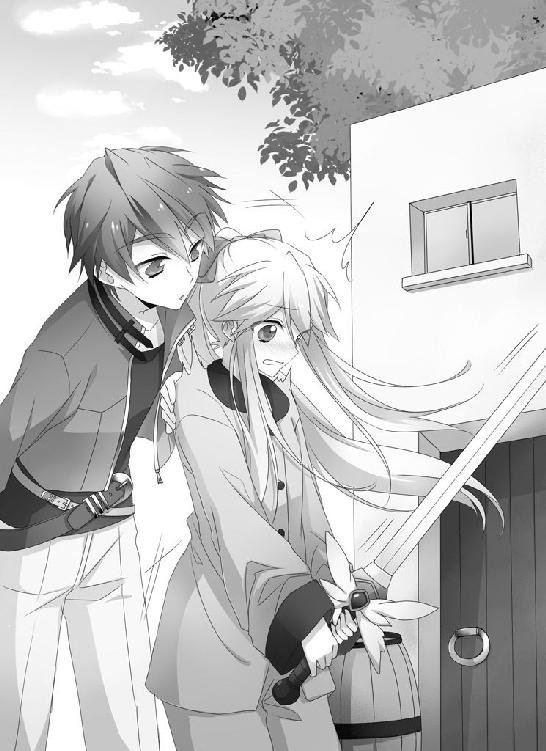

| 白銀竜王のクレイドル (ＨＪ文庫) | |
| ツガワトモタカ | |
| (2011) | |

ＨＪ文庫
白銀竜王のクレイドル
ツガワトモタカ
口絵・本文イラスト ぽんじりつ
燃えさかる家々と、動かない人々。
消えていく世界。
しかし、少年はそれらの凄惨な光景に目もくれず、ただ眼前の光だけを見つめていた。
巨大なドラゴン。
アメジストのような紫の瞳。鏡のような銀色の体。
辺りの炎と血を反射して、赤く染まっていた。
首を目一杯上げても頭が見えない。全長は百メートルか、もしかしたら、もっと。
何て綺麗なんだろう。
そのドラゴンが自分へ敵意を剥き出しにしているのに、少年は恐怖を少しも感じること無く、ただただ見とれていた。
ドラゴンが翼を広げる。同時に暴風が吹き荒れた。少年の体は無様に転がる。
誰かに抱き起こされ、強引に引っ張られた。
兄だった。何かを叫んでいるが、よく聞こえない。
もっと見ていたいのに、少年は無理矢理連れて行かれる。
遠ざかるにつれて、ドラゴンの全容が見えてきた。何と神々しい姿だろうか。
ドラゴンズ・ハイロード。
幾つもの文献にその名を刻み、されど誰も見たことの無かった竜の王。
長い首の先にある頭部は凶悪だったが、何故か悲しげだった。そして口を開き、奥から光の塊を放射する。
それは少年たちを飲み込む。前後も分からない振動と、沸騰するような熱。
衝撃から数瞬後、ようやく目を開く。少年はクレーターの中にいた。
兄が抱きかかえて守ってくれていた。
少年は兄の名を呼ぶが返事はない。しかし息はあった。
それから、少年は銀色のドラゴンを見上げた。目が、合った。
殺されるのだろうか──それでもいい、と思った。
こんなに綺麗なものに殺されるのなら、それは幸せだとさえ感じた。
ところがドラゴンはそれ以上何もせず、巨体を浮かばせて飛び去っていった。
少年はそのシルエットに心を奪われ、何もかも忘れて呆然とし続けた。
１
タピサワの町から徒歩で半日。
そこは緩やかな山岳地帯を覆い尽くす、ブナの森だった。
地表は笹の葉で埋まり、わずかな獣道を除けば、歩行すら困難な場所である。木々が作り出した天然の天井は、太陽光線を遮り、晴天の昼間でも薄暗い。人の侵入を拒む、明確な森の意思があるように見えた。
実際、人々はこの場所まで生活範囲を広げようとはしない。野生動物の宝庫であり、猟師にとっては絶好の狩り場になるのだろうが、そうはしなかった。
まず前提として、この場所に踏み込まなくても、人々は生活を維持できる。
そして何よりも、この森には強大な危険が待ちかまえているのだ。わざわざそれに立ち向かうのは愚か者のすること。
その愚か者が一人、四十メートル級のブナの上にいた。
枝をベッドに、幹を背もたれに、葉を日除けに。
目を閉じ、眠っているのか、微動だにしない。
その木は、うっそうと生い茂った同族の中でも、頭一つ飛び抜けていた。その上に陣取れば、森の彼方まで見渡すことができる。
愚か者は若い男だった。体はスラリと長い。それなりに整った顔立ちに、紺の髪。まだ二十歳にはなっていないだろう。
焦茶色のジャケットを羽織り、その下には黒いシャツが見えている。首からは双眼鏡と、もう一つ黒い箱をぶら下げていた。
黒い箱はカメラという機械だった。光の情報を記録し、風景を写し取ることができる。発明当初は銀板に光を記録していたが、現在ではフィルムという薄い膜を使用し、使い勝手が劇的に改善されている。それでも、誰もが気軽に使うには高価すぎた。もっとも、木の上にいる若者は、とても金持ちには見えないが。そもそも双眼鏡ですら一般人には縁がない物なのだ。
若者はゆっくりと目を開く。原因は震動だった。
静けさが包んでいた森に、獣の叫びが走ったのだ。その咆哮からは、熊や狼のように可愛げのある姿は思い浮かばない。そして枝が激しく揺さぶられる音が響く。若者は弾かれるようにして双眼鏡を手に取った。
その倍率は五倍。素人ならば可能な限り高い倍率を欲しがるが、二十倍や三十倍という代物は、手ぶれに悩まされるだけでバードウォッチングには向いていないのだ。
そう。彼がここにいる理由はバードウォッチングだった。少なくとも、他人に聞かれたらそう答えている。正確な表現ではないが、嘘ではないと彼は思っていた。
観測対象物は鳥ではないが、翼があることに違いはない。
「来た！」
若者の口から、歓喜の叫びがこぼれる。
そのレンズの先では、ブナの木がなぎ倒されていた。
鳥たちが一斉に飛び立つ。
木々の下に何か巨大なものがいる。わずかに頭の先が見えた。鋭く長い二本の角。緑色のウロコ。しかし、すぐに見えなくなってしまう。
樹齢数百年を数える巨木を、マッチ棒のようにへし折る存在とは何者か。決まっている。彼らしかいない。若者はそれを追い求め、三日間も森に居座っていたのだ。
しかし妙だ。それが発している声は、威嚇の叫び。
この世界で彼らに警戒心を抱かせる動物がどれほどいるだろうか。一つは同種。だが、彼らが二匹以上いれば、森の破壊はこの程度では済まないだろう。
もう一つの可能性は、人間。
そこに思い至ったとき、若者は枝から飛び降りた。
四十メートルもある木の、ほとんど頂上にいたにも拘わらず。何のためらいもなく、地面へと一直線だった。
激突の間際、彼の足下に青白い円が広がった。制動がかかる。高速で落下していた体が、スレスレの所で静止し、若者は何事もなかったように着地した。
同時に地面を蹴飛ばし、駆けだした。道なき森の中を、密集する木々を擦り抜け、まさに風のように。
２
少女は青ざめていた。
過去十秒間の間に、自分の迂闊さを一万回は呪った上、命の危機も三度は経験していた。汗を飛ばしながら少女は振り返る。背後から追いかけてくる巨獣は、一向に止まる気配が無い。こちらを肉片にするつもりらしい。
しかし、迂闊さなど、他人から見れば一目瞭然といったところだ。
なにせ深い森の中にも拘わらず、少女の服装は薄手の白いブラウスに、太ももを露出するピンクのプリーツスカート。これでは町中を歩くのすら一人では危険というものだった。
唯一合格点を与えられるとすれば、焦茶のブーツだけ。それだってオシャレを捨て切れていない。
そもそも、少女はまさに小さな女であり、その身長は一四〇センチを超えたくらい。何を考え、こんな格好で森の奥へ入ったのか。
その答えは、右手に握られた剣にあった。
磨き上げられた刃。プラチナで装飾された柄。官能的なまでに美しい剣だが、特筆すべきはその刃渡りにある。明らかに少女そのものよりも長いのだ。不釣り合い極まる。
だが、背後から凶暴な足音が地面を揺らしながら近づき、少しでも速く走らなければならないという状況においても、少女は剣を捨てなかった。
鞘を背負っていることから見ても、長剣が彼女の物であるのは分かる。しかし何の役に立つのだろうか。扱えるわけがない。まして背後にいる生物は、この世界で最も強大な種族の一匹なのだ。
空気の振動に、今までと違う種類のうねりが混じる。
少女は足を止め、振り返る。脚を広げ、腰を落とし、両手で剣を正面に構える。その動作で、彼女の姿は途端に様になった。
背が伸びたわけではない。服が替わったのでもない。顔立ちは幼いし、銀色の髪を子供っぽいリボンでポニーテールに結っているのも変わらない。
しかし、剣を構えるその姿は、明らかに違った。
そして見据える先には、獣の巨躯。熊やライオンなど比べものにもならない。四本の足で地面と木々を踏みつけ、土を巻き上げ、咆哮で鼓膜を叩く。トカゲにも似たシルエットと面構えだが、大きさが比べものにならない。頭の先から尻尾まで、どう少なく見積もっても二十メートルはある。
背中にはコウモリのような翼。全身は緑色のウロコで覆われている。凶悪な表情を貼り付けた頭には二本の鋭い角が生え、牙も負けず劣らずギラついていた。その皮膚は、屈強な男が斧で一撃を加えても傷一つ付けられない超強度。
例えるなら、動く要塞。
ゆえに人々は、ドラゴンという名を口にするとき、畏怖を込める。
その前足が、少女へ振り下ろされた。その先には三本の爪。だが、そんなものがなくても、重量だけで人間など跡形もなく消し飛ばすだろう。
瞬間、少女の剣がきらめいた。銀色の閃光が、ドラゴンの前足と交差した。耳をつんざく金属音が響き渡る。
激しく振り上げられた剣の一閃は、明らかに達人のものだった。それでも、人の身でいかように鍛え上げようと、ドラゴンに剣で立ち向かうのは愚の骨頂。
少女の一撃はドラゴンの前足を、ほんの少しずらしただけだった。それでは避けられない。が、少女の体は大きく動いた。ドラゴンの爪を叩いた反動で、少女は横に大きく跳んだのだ。結果、ドラゴンの前足は虚しく宙を斬り、誰もいない地面にめり込むことになる。
まぐれなどではない。少女は、すでにドラゴンの爪を四度に渡り受け流していた。吹き飛ばされ転がっても、すぐさま起き上がり、剣を構え直し敵に向き合う。
だが、もはや限界。
ドラゴンへ反撃が出来るわけではない。少女は、走るだけで、受け流すだけで、その体力を消耗する。
すでに剣を支える両腕の筋肉は悲鳴を上げ、休ませてくれと懇願していた。次の一撃は耐えきれないだろう。それが意味するものは、すなわち死。
少女はドラゴンへ勝負を挑んだことを今更悔やむ。これでは自殺するために森へ入ったと言われても反論できない。
しかし、死ぬわけにはいかない。この剣には、自分だけではなく、一族の誇りが宿っているのだから。
「こい、トカゲ！」
精一杯の虚勢を張り、ドラゴンを睨み付ける。何か一つでも弱点はないのかと、少女は突破口を探した。
そんな少女の思いとは裏腹に、ドラゴンは向かってこなかった。不思議に思った矢先、その大きな口が開かれ、オレンジ色の光が見えた。
そして思い出す。ドラゴンの多くは、炎を吐くのだと。
眼前のそれは地上最強の生物。突破口など、有るわけがない。
その状況でも、少女は膝を屈しなかった。最後の最後まで構えを解かない。死ぬまで立ち向かう。
次の瞬間、予想より更に苛烈な炎は、一直線に向かってくる。回避は不可能。絶体絶命。
しかし、それから三秒が経過しても、少女の体が燃え上がることはなかった。
「......？」
少女が不思議に思って目を開けると、いつの間にか一人の男が立っていた。
焦茶色のジャケット。身長は一八五センチ程度。背中しか見えないから顔は分からない。分かっているのは、その男が右手を突き出し、そこから五芒星の魔法陣を広げて、炎をせき止めているということ。
やがてドラゴンの息が続かなくなり、炎は消える。少女は自分が見た光景を信じられなかった。その男はドラゴンの攻撃を、真正面から受け止めてしまったのだ。
魔術師。
現在、世界に数百人しかいないとされる異能の者たち。
男はその一人に違いなかった。
「引いてくれないか、ウエスト・ドラゴン。僕は君に危害を加えるつもりはない。後ろの娘にもさせないさ。だから引いてくれないか」
あろうことか、男はドラゴンの説得を始めた。助けてもらっていながら、バカバカしいと少女は思った。獣に言葉が通じるはずがないのだ。
案の定、ドラゴンは突進を始めた。その進路は、男と少女を飲み込む。
一瞬後には二人とも踏みつぶされているだろう。逃げる暇も斬りかかる間もない。
「......ごめん」
男の呟きと共に、魔法陣が再展開した。そしてオレンジ色の光が線を描き、ドラゴンの首を切断する。それは間一髪だった。男がドラゴンを殺さなければ、少女も男も今頃ひき肉になっていただろう。
それでも、少女の中で言いようのない屈辱が駆け巡った。全身全霊を懸けて立ち向かったドラゴンを、男は瞬く間に屠ってしまったのだ。
首を失ったドラゴンは、巨体を崩し、轟音と共に倒れた。押しつぶされた木が、三本まとめて折れ曲がる。切断面は高熱で溶かされており、血が溢れ出すことはなかった。
男は、その死体をしばらく見つめた後、少女へ振り向いた。
その顔は少女にとって意外なものだった。ドラゴンを倒してしまう男とは、どんな化け物かと思っていたのに。かなりの優男だった。歳も少年と言って差し支えない。
「怪我は無いかい？」
優しげな微笑と共に、男は少女へ近づき手を伸ばした。少女はそれを取ろうか迷ったが、結局手を伸ばし、引き起こしてもらった。
「君、こんな所で何をしていたの？」
男は柔らかな口調で言った。少女は答えられない。
ドラゴンに喧嘩を売るために二日も森をさまよい、あげく殺されかけたなどと、どの口で言えるだろう。恥ずかしいにも程がある。
「アンタには関係ないでしょ」
剣を鞘に収める。助けてもらった礼も言わず、少女は反転してその場を去ろうとした。
勢いでそうしてしまったが、我ながら失礼な態度だと思った。一言、ありがとうくらい言っても良かった。そんなことを考えながら後ろ髪を引かれる思いで足を踏み出すと、男にポニーテールを引っ張られた。
「イタッ！」
「あ、ごめんよ」
突然頭皮に走った痛みに、思わず涙目になりながら振り向くと、男は相変わらず柔らかい表情のまま立っていた。申し訳ないという様子は一切無い。
「ねえ、君みたいな女の子が、どうして一人でここにいるんだい？」
「......助けてもらったのは感謝するけど、説明しなきゃいけない理由が、どこにあるわけ？」
少女は男のしつこい追及にムッとして言い返した。
本当のことを言えば、叱ってくるに違いないのだ。危ないとか、無茶だとか。しかし、誰に何と言われようと引けない。ドラゴンを倒さなければ、一族の存在価値が無くなってしまう。この想いは、他人には絶対に分からない。
ところが男の言い様は、まったく意外なものだった。
「彼は死んでしまったんだ。君が不用心に近づかなければ、僕も殺さなくて済んだ。理由くらい教えてくれてもいいと思うんだけど」
少女がその言葉を飲み込むのに、まばたきを三回必要とした。
男は少女の心配をしているのではなかった。死んだドラゴンのことを言っているのだ。
「はぁ？ トカゲが一匹死んだからって何なのよ」
すると男は困った顔になり、頭をポリポリとかいた。そして素早い動作で少女の腕を掴んだ。かなり力が入っていて痛いくらいだった。少女は自分の動体視力に自信を持っていたのに、掴まれてから初めて気付いた。一瞬血の気が引く。それが悪意を持った攻撃だったら、即死だっただろう。
「放してよっ」
訳が分からず叫んだ。得体が知れない。しかも、ここは誰もいない森の奥。助けも呼べないのだ。
「いいから、ちょっと来て。見て欲しいものがある」
穏やかな口調とは裏腹に、男の歩みはしっかりしていた。少女の抗議を聞き入れるつもりは毛頭無いらしい。
男はドラゴンの足跡を辿っていった。木々が薙ぎ払われ、地面が踏み固められている。森の中に突然舗装された道が現れたようだった。そのパワーに今更身震いを覚えた。
そして道の終わりに辿り着く。そこは奇妙な場所だった。
地面に穴が開いている。直径三メートル程の半球の穴。その底には枯れ葉や小枝が敷き詰められている。
「真ん中を見て」
男は指さした。そこにあった物体を見て、少女は頭を鈍器で殴られたような衝撃を受けた。
「ウエスト・ドラゴンは卵を二つ産む。それをオスとメスが一つずつ育てる。孵化するまで五年。あの卵が何年目か知らないけど、彼はこれを守っていたんだよ。何年も飲まず食わずでね。そこへ君が近づいた。ねえ、どうしてドラゴンに近づいたりしたんだい？ まさか気がつかなかったとは言わないよね。彼らは他の生き物の気配を感じたら、大声で威嚇するんだから」
枯れ葉のベッドの中にいたのは卵だった。あのドラゴンと同じ緑色をしている。大きさは人間の赤ん坊と同じくらい。その中には当然、雛がいるのだろう。
想像もしていなかった。考えてみれば当たり前のことなのに、ドラゴンが子育てするという発想を、少女はしたことがなかった。ただの凶暴なトカゲとしか考えていなかった。
「......ごめん」
少女は、滅多なことでは人に謝らないが、この時ばかりは絞り出して謝った。
「僕に謝ってもね」
しかし突き放される。
「彼は死んじゃったし」
その瞬間、ほんの一滴だが、少女の頬を水滴が伝った。嗚咽が漏れてしまったので、慌てて飲み込む。それでも聞かれてしまっただろう。情けない。
「えっ？ あ、いや、済まない。泣かせるつもりはなかったんだ......ただ知って欲しくて。ごめんよ」
急に男は慌てふためいた。ドラゴンを一撃で倒す癖に、少女が泣いた瞬間、情けない姿になった。そのギャップが不思議で、泣くのも忘れて唖然としてしまう。
「ね、泣きやんでくれよ」
「な、泣いてないしっ！」
少女は袖で目をぬぐって、上目遣いで睨め付けた。身長差が四十センチ以上もある。目だけでなく、首も上げなければ男の顔を見ることが出来なかった。
少女としては精一杯の威嚇のつもりだ。それはドラゴンの咆哮に匹敵するものだと思っていた。それなのに、どうしてか男は面白そうに笑っていた。
「笑わないでよ！」
腕を振り回すと、男は首からぶら下げた箱を庇って身を捻った。
「危ないなぁ。君、乱暴すぎるよ」
「うるさい。ところで......その箱なに？」
「これかい？ カメラさ」
「え、カメラ......本物なのっ？」
名前は聞いたことがある。しかし実物を見る機会があるとは思わなかった。そもそも実在するかどうかすら疑っていたのに。
「ねえ、それ本当に風景を切り取れるのっ？ 貸して、貸して！」
「ダメだよ。子供のオモチャじゃないんだから」
男はカメラを持ち上げてバンザイする。少女がジャンプしても届かない。
「子供じゃないわよっ！」
「何歳なの」
「十四」
「子供じゃないか」
「な......っ」
またしても屈辱的だった。この男と出会って数分しか経っていないのに、幾度屈辱を味わっただろう。これほど腹が立つ人物は初めてだ。
「そういうアンタは何歳なのよ」
「僕は十八さ」
「子供じゃないの」
「君よりは大人さ」
「ぐう......」
かろうじてグウの音を出したものの、それ以上反論のしようがなかった。更にカメラを欲しがれば、ますます子供と思われるだろう。ここは引き下がるしかない。触ってみたいという気持ちを押さえるため精神力を総動員し、少女は拳を握りしめた。
「いや、そんなに悔しそうにしなくても。頼むから泣かないでくれよ。少しだけ貸してあげるから」
「だから泣いてないし！」
と言いつつも、貸してくれるという言葉にときめきを覚えてしまった。
だが、カメラを手にする前に、その運命的な音が少女の鼓膜に触れた。それは小さな小さな空気の震え。
少女は卵を見た。確かに、そこから聞こえた。
「ヒビが入ってる......」
男も卵を見た。そして目を見開く。
二人はカメラのことを忘れて立ち尽くし、その息吹に見入った。
「今が五年目だったんだ！」
男は叫んだ。その表情は喜びに満ちあふれ、まるで新しいオモチャを手に入れた子供のようだった。そして穴に降りていく。巣を傷つけないように、絶対に卵に触れないようにして。
「凄い......孵化の瞬間を見るのは初めてだ」
そのはしゃぎ方を見て少女は呆れた。が、もしかしたら自分もカメラを見たときに同じ顔をしていたかも知れないと思い、何も言わないことにした。
「君もおいで。滅多に見れるものじゃないよ」
男は卵に向き合ったまま、背中で語りかけてきた。
言うまでもなく、少女も見たい。しかし、穴の深さは少女の身長とほぼ同じだった。剣を構え敵と向き合っているときは、どんなことでも出来る気持ちになる。ところが、それ以外となると、何故か怖じ気づいてしまうのだ。
それでも好奇心には逆らえず、恐る恐る斜面に足を載せる。その途端、土が崩れ体のバランスを失う。顔面強打の予感。
しかし、そうはならなかった。恐る恐る目を開けると、男の腕に抱かれていた。
「大丈夫？」
少女の顔は真っ赤になった。
父親以外の異性に抱きしめられるのは初めてなのだ。
「なに抱きついてるのよ！」
恥ずかしくて怒鳴ってしまう。いけない、と少女は思った。
助けてもらったのは二度目。二度とも礼を言わずに済ませるのは、幾ら何でも品性がないというものだ。しかも、そんな無礼な態度を取ったにも拘わらず、男の方は気にした様子もないのだ。
「いや、突っ込んできたのは君だけど？」
その穏やかな声に、器の違いを見せられた気がした。
少女は男から身を離し、深呼吸してから、心の中で言うべき台詞を五回もリハーサルし、ようやく決心した。
「あ、ありがとう......」
全力で振り絞ったのに、蚊の鳴く声より小さかった。
それでも、男は満面の笑みで返してくれた。
「どういたしまして」
すると、少女の心臓がバックンと大きく波打った。なんだ、と胸に手を当てる。初めての感覚だった。顔が火照るのが止まらない。どうしてしまったのだろうか。
それについて深く考えるより早く、再び卵が鼓動した。内側から外側へ、一生懸命に叩く音がする。
「生まれるの？」
少女はしゃがんで、卵に顔を近づけた。男もそれに並んで見つめる。
「生まれるよ。今、中にいる子は、必死に殻を破ろうとしているのさ。自分の爪や牙を使ってね」
少女は何とも不思議な気持ちになった。何かが誕生する瞬間に立ち会うのは、初めての経験だった。中からどんなドラゴンが出てくるのだろう。
小さなヒビを広げようと、中から細い爪が見える。それが何度も何度も殻を叩いていた。僅かに亀裂が伸びていく。
それにしても、針も通らないような穴だ。ここから出口を広げるとなると、気が遠くなりそうだ。
「手伝ってあげないの？」
「ダメだよ。そんなことをしたら、生まれてくる子が弱い子になってしまう」
そう言う男の目は、卵を真っ直ぐ見ていた。決して手は出さない。それでも優しく見守っていた。
少女はようやく理解した。この男が、いかにドラゴンに愛を注いでいるかを。
「......ごめん」
そして自分は、その男にドラゴンを殺させてしまった。罪深さを知り、鳥肌が立つ。
「ん？ なにが」
「だって......アンタこんなにドラゴン好きなのに、私......」
「終わったことは仕方がないよ。次からはしないでしょ？」
「......うん」
「じゃあ、いいさ。あのドラゴンが君を許してくれるかどうかは分からないけど。誰だって生きているだけで何かを犠牲にしてしまうからね。だから泣かないでよ」
男は少女を見やり、微笑んだ。頭を撫でて、また卵に向き直る。
その一連の動作に、少女は抵抗できなかった。また顔を真っ赤にして、口をパクパクさせるだけである。
分からない。男は本当に気にしていないのか、それとも少女を気遣ってくれているのか。
考えようにも、頭に血が上って、湯気が出ていた。思考が出来ない。どうしてこれほど照れているのかも定かではない。
それ以来、男は黙ってしまったので、少女もそうするしかなかった。卵を観察する。最初は珍しかった物も、長く見続けていると風化してくる。
余りにも時間がかかりすぎるのだ。すでに三十分が経過した。ドラゴンの姿が見える気配もない。
「ねえ、どの位かかるの？」
「さあ......ニワトリは半日以上頑張るみたいだけど」
「半日も！」
「うん。飽きた？ 別に無理して見なくてもいいんだよ」
「......いや、見る」
少女は膝を抱えて座り込み、長期戦の体勢を整えた。
本当なら、この役目は親ドラゴンがやるはずだった。その命を奪ってしまった自分は、せめて孵化を見守る責任があるような気がした。
無論、それで親ドラゴンの魂が報われるわけではない。完全な自己満足。それでも、このまま立ち去るより、よっぽどマシだろう。
卵の中から、コツコツという音が聞こえてくる。十分ほど叩くと、しばらく休憩。また再開。また休憩。その繰り返し。たまに中から「ギギギ」と高い鳴き声がする。
少女は、お尻が痛いので、体勢を変えて正座をしてみる。すると今度は足が痛くなったので、また三角座りに戻る。繰り返し。
そして頭上にあった太陽が西の空に沈み、世界が赤色になった頃、卵の中身はようやく顔を見せてくれた。
ドラゴンは、渾身の頭突きで殻をぶち破る。
それは親ドラゴンとそっくりな姿。だが、目が大きく、あどけない感じだった。ドラゴンは、初めて見る外の世界をキョロキョロと見回す。しかし、その視点は一ヶ所を向くと、動かなくなってしまった。
少女とドラゴンの目が合ったのだ。互いに目をそらさない。
「？」
少女は首をかしげる。少女がドラゴンを見るのは当たり前だ。もう何時間もそうしているのだから。しかし、この小さなドラゴンが少女を見る理由は何だろう。
それからドラゴンは、体全体を脱出させるため、卵を噛み砕き、拳で突き破った。小さくても、その力強さは親譲りだ。
バリバリという音を上げ、それは遂に飛び出した。今まで守ってくれていた卵を真っ二つに砕き、未知の世界へ一歩踏み出す。全長約四十センチ。翼は閉じて、まだ開いていない。されど、間違いなくドラゴンだった。
ドラゴンが向かった先は、少女の膝の上。正座した太ももの上に乗っかり、頭を突き出し顔を近づける。
「え、えっ？」
少女は驚いて仰け反る。思わず後ろに倒れてしまった。するとドラゴンは、平地になった少女の腹をテコテコ歩き、胸の上に立って、鼻や頬をペロペロ舐めだした。
「ちょ、ちょっと、くすぐったい！ ひゃんっ！ 何なのよぉ？」
両手でドラゴンを持ち上げ、体を起こす。腕の中でもドラゴンは少女を見つめている。その体は温かかった。
「そうか、刷り込みか」
男は困った顔で言った。
「刷り込み？」
「そう。鳥とかで聞いたこと無い？ 生まれてきて、最初に見たものを親だと思ってしまうってやつ。殻を破って最初に見たものが、君だったんだね」
親、だって。
「そんな、私が......」
あり得ない。
「だって私が殺したのよ......」
「いや、僕だよ」
「でも、私のせいでしょ」
ドラゴンは少女の腕に抱かれて、ギィギィと鳴いていた。
「取り合えず、この子は僕に任せてくれないか。こういった場合、しかるべき組織に預けた方がいい。僕はそこに顔が利くから、悪いようにはしないよ」
男の腕が伸びる。少女は躊躇った。が、最終的にはドラゴンを差し出すしかなかった。
するとドラゴンが泣き始めた。ギーギーと首と尻尾を振って暴れた。凄い力だった。少女の手は振り払われ、結果としてドラゴンを落としてしまう。
自由になったドラゴンは少女の体を駆け上り、右の二の腕にしがみついた。爪を立て力一杯。少女の腕から血が流れた。白いブラウスが染まる。
「参ったね」
男はしかめっ面をして、ますますお困りの様子だった。
少女もドラゴンを見下ろし、どうしようか迷う。また目が合った。すがるように見上げてくる幼い動物がいた。
「ねえ、私が育てちゃ駄目なの？」
それがどれほどの意味を持つのかも知らず、少女は言った。だが、気楽に言ったのではない。五秒間という短い葛藤だが、人生で一番悩んだ時間だった。
「駄目じゃないよ。でも、どうやって育てていいか知ってるの？」
見据えてくる男の表情は、こちらを気後れさせるほどに鋭い。しかし、ここで引いて良いものではないはずだ。
この子の親を殺した。親だと勘違いさせた。その上で捨てる。そんなこと、少女には不可能だった。
「知らないから......教えてよ......」
そのくせ自分では何も出来ない。余りの情けなさに目眩がする。泣きそうになる。また男に、泣かないでくれよと馬鹿にされるだろう。
「やれやれ参ったね」
男は後頭部をかく。
「君は顔に似合わず乱暴で無鉄砲なのに、顔に似合って心が綺麗なんだなぁ」
大きなため息。その後に、意外な言葉をくれた。
「じゃあ、取り敢えずドラゴンの名前を決めたら？ 親になって最初にすることと言えばそれだろう？」
少女は口をぽかんと開けた。爪で刺された痛みも感じず、アホのように呆けた。
「それってつまり......教えてくれるってこと？」
「そりゃあね。僕は女の子が泣くのも、ドラゴンが悲しむのも見たくないんだよ」
「泣いてないってば」
「でも断ったら泣くんだろ？」
「ぐうっ......」
まさに泣くのを我慢していた少女にとって、反論の余地はなかった。
場の空気が変わったのを察してか、ドラゴンは少女の腕から離れ、膝の上に降りて座り込んだ。猫のように丸くなるのが妙に可愛い。
その姿を見て、思いついた。
「アシュト」
それは死んでしまった弟の名前。
膝の上でくつろいでいるドラゴンを見ていたら、その顔が頭に浮かんだ。
「アシュトか......うん、良い名前だね。この子はオスだし丁度いい」
男は優しく笑ってドラゴンに指をゆっくり伸ばした。残念ながら警戒はまだ解かれていないようで、ガブリと噛まれてしまう。
「おやおや。嫌われたなぁ」
相当痛いだろうに、まるで気にした様子がない。
「オスとかメスとか、どうやって見分けるの？」
「ほら。この子の角は、頭の後ろに向かって二本、真っ直ぐ生えているだろ。メスは外側に反って生えるんだよ。ま、おちんちんを見れば一発だけどね」
その説明でまた顔が火照ったが、一々叫ぶと子供っぽく見られると思い我慢する。
「ところで重大なことに気がついたんだけど」
急に男は真顔に戻り、少女に顔を急接近させた。
少女は何事かと驚き、どんな危機が迫ったのかと、息を飲み込む。
「僕ら、ドラゴンの名前は知っているのに、互いの名前は知らないんだ」
とても緊迫した気配の中、男はそんな台詞を吐いた。
少女がその台詞を理解するのに、一瞬どころか五瞬半は掛かった。そして吹き出す。
男も笑う。
「どうして気がつかなかったんだろうね」
「本当よ。もう六時間くらい一緒にいるのに」
六時間、少女はずっとドラゴンのことを考えていた。
殺してしまった親ドラゴン。生まれてくる子ドラゴン。
一生懸命に殻を叩く姿を、一方的に応援するという自己満足。そんな自分への嫌悪感。罪悪感。おまけに自分の弱さが露呈され、一族の名誉に泥を塗るという醜態も晒した。様々なものが交差し、今ようやく一息ついたのだ。
「私はキャロライナ。キャロライナ・ギルズベイルよ」
「僕はイルミ・ミルウィックだ」
男が手を差し出す。
今更というのも妙に思ったが、少女は取り合えず握手を交わした。
３
イルミが最初にドラゴンへしたことは、卵の殻を食べさせることだった。その貴重なサンプルは、保存しておきたいという欲求に駆られる。しかし、それは間違った使い方だ。カルシウムを豊富に含んだ殻は、幼生ドラゴンの重要な栄養素になるのだ。
もっとも、これはイルミが手を下さなくても、ドラゴンが本能に従って勝手に食べてしまう。
アシュトと名付けられたウエスト・ドラゴンも、口を大きく開けて噛みつき、バリバリと食べ始めた。
次に体を綺麗に拭いてやらねばならない。孵化したばかりの体は、ヌルヌルした液体で濡れている。いずれ乾くのだが、親ドラゴンはこれを舐めとってやるものだ。イルミは水筒の水でタオルを濡らし、アシュトを抱こうとする。が、また噛まれた。
結局、母親であるキャロライナが膝に乗せて拭くことになる。すると、アシュトは目を閉じて幸せそうにした。
キャロライナは美しい少女だった。輝く銀髪と、可憐な顔立ち、か細い体。先程までは怒ったり泣いたりと、めまぐるしく表情を変えていたが、アシュトに愛を注ぐ姿は聖母のようだ。
人間とドラゴンの親子を写真に撮ろうと考えたイルミは、恐るべきことに気が付いてしまう。
「あっ！」
突然奇妙な声を上げたイルミを、アシュトとキャロライナが不思議そうに見つめる。
「どうしたのよ？」
「僕は何て馬鹿なんだ......」
「はぁ？」
「だって、孵化の過程を最初から見れるなんて、もう無いかも知れないじゃないか！ せっかくのシャッターチャンスだったのに......ああ、何て馬鹿なんだろう......」
そもそも森に入ったのは、ドラゴンの観察をするため。あわよくば写真に収めようという魂胆だった。まさにそのチャンスを目の前にして逃してしまった。
イルミはうなだれて頭を抱える。
「良く分かんないけど、今からでもアシュトを撮ったら？」
そう言ってくれたキャロライナは、イルミを心配してくれているらしい。妙に怒りっぽいが、根は優しいのだ。出会ってから数時間だが、イルミはこの少女に好感を持っていた。
「そうさせてもらうよ。それじゃ、アシュトを抱き上げてこっち見て」
「え、私も写すのっ？」
「だって、その子、君から離れないじゃないか」
体を拭いてもらったアシュトは、両手でキャロライナにしがみつき、胸に顔を押し当てていた。平らなので柔らかくはないだろうが、満足そうにしている。
「うぅ......痛くないよね？」
「いや、カメラを何だと思ってるの」
レンズを向けると、少女はドラゴンを持ち上げて顔を隠してしまった。シャッターを押さずに待っていると、恐る恐る腕を下げ、うるうるした瞳を出す。そんなに怖がらなくてもいいのにとイルミは思う。まさか、写真を撮られると魂を抜かれるなんて噂話を信じているのだろうか。
「じゃ、いくよ」
ストロボの光が夕暮れの中で光る。キャロライナとアシュトは、目を固く閉じた。
アシュトはまぶたを開けて、キョロキョロ見回し、光が無くなってしまったことを不思議そうにしていた。
キャロライナは何秒経っても目をつむったままだ。
「終わったけど」
声をかけるとようやく目を開いた。そして、ふぅぅぅと深く息を吐く。
「やっぱり魂を抜かれるなんて迷信よね！」
半分信じていたようだ。
実際、カメラは一般には普及していない。その名と機能は知られていても、扱った人間はごく少数だ。風景を記録するという不思議な道具に、恐ろしさを感じる者もいる。だから、魂を抜かれるという噂も出てくる。
「分かんないよ。これから抜かれるかも知れない」
「え、えっ！」
冗談で言ったのに、キャロライナの顔は見る見る青ざめ、泣きそうになってしまう。と言うより、すでに目の端に涙がたまっている。
「嘘だよ。君は泣き虫だなぁ」
「だから、泣いてないし！」
キャロライナは真っ赤になって怒鳴り始める。ころころと表情が変わる少女は、イルミにとってからかいがいのある相手だった。悪いと思いながらも、ついやってしまう。
だが、イルミはキャロライナ以外の視線を感じ、目線を下げる。するとアシュトがこちらを睨んでいた。もしかすれば、母親が虐められていると思ったのかもしれない。
「アシュト、僕は別に──」
イルミが弁解をしようとした瞬間。ドラゴンは大きく口を開け吼えた。と同時に、その喉の奥でオレンジ色の光が溢れる。まだまだ弱いが、それは確かに炎だった。
完全に油断していたイルミはまともに喰らってしまう。
「あち、あちっ」
ジャケットに引火し、慌てて手で消す。厚手の生地だから穴は開かずに済んだが、焦げ跡は残ってしまった。
「凄い！ 偉いぞアシュト」
キャロライナは満面の笑みでアシュトに頬ずりする。褒められたドラゴンもご満悦で、嬉しそうに唸った。
「くあ......まさか生まれてすぐに火を吐くとは。卵の中でリン腺が育ってたんだなぁ」
「リン腺？」
「そう。それがないとドラゴンは火を吐けないのさ」
多くのドラゴンは、リンという非常に燃えやすい元素を体内で生成する。その器官はリン腺と呼ばれ喉の奥にある。そこから出されたリンと唾液が混ざったとき火が生まれ、そして肺から押し出された空気圧で炎を飛ばすのだ。
「ところで、火を吐いたのは凄いけど、あんまり褒めない方がいいよ」
「なんでよ。アンタ、私の教育方針にケチつけるの」
「いや。別に僕に吐いたからそう言ってるんじゃないよ。そうやって褒めると、火を吐くのがいいことだと思っちゃうだろ。そしたら街中でも遠慮せず思いっきりやるからね。それは困るだろう」
「うぅ......確かに」
キャロライナはアシュトを持ち上げ、睨めっこした。
「イルミ以外の人に火を吐いちゃ駄目だよ！ 分かったっ？」
「え、僕にはいいの？」
イルミの悲痛な訴えは無視された。
アシュトは分かったのか分からないのか、嬉しそうにギギギと鳴くだけである。
そうこうしている内に、いつの間にか太陽は完全に姿を隠し、世界を闇が包み始めていた。
虫の合唱が聞こえてきた。ついでにキャロライナの腹の虫も鳴った。
「あぅ......」
少女は恥ずかしそうに腹を押さえた。
「確かに夕食時だね。アシュトにもお腹一杯食べさせないといけないし」
「ギギギィ」
イルミは、キャロライナとアシュトを連れ、拠点にしていた最長のブナの下まで移動した。そこにはリュックサックが置いてある。もちろんイルミの物だ。中からランプを取り出し、火を付けた。
「干し肉に乾パン。それと魚の缶詰もある。遠慮しないで食べてよ」
「全部食べていいの？」
「全部って、三日分はあるよ。ま、食べれるものならどうぞ」
「アンタってイイ奴ね！」
キャロライナは大喜びで乾パンに噛みついた。美味しそうにモグモグすると、銀色の髪が揺れる。ランプの明かりを反射し、鏡のようだった。
その輝きに、イルミは既視感を覚えた。
「......僕たちって、前にどこかで会ったかな？」
「んー？」
少女は干し肉を千切ってドラゴンに分け与えながら、こちらの顔を覗き込む。
「初めてだと思うけど？」
「そうだよね。いや、変なこと聞いてごめん」
イルミも、キャロライナと会った記憶など無い。それなのに、どうしても知っているような気がするのだ。気のせいと言えばそれまでだが、妙な違和感がある。
「それにしても、凄い食欲だね......」
全部食べていいとは、冗談で言ったのだ。ところが三十分もしないうちに、全ての食料は消滅してしまった。イルミは一食分に手を付けただけだし、アシュトは卵を食べたばかりなので干し肉を少しかじったのみである。
つまり、実質キャロライナが一人で平らげてしまったのだ。イルミは目の前で起きた光景を信じられなかった。特別ガツガツするわけでもなく、極めて行儀良く食料を口に運んだ少女は、一定のペースを維持したまま三日分を胃に収めてしまった。
あたかも、それが普通の出来事と言わんばかりに。
「えっと......何日も食べてなかったのかな？」
「え？ 昨日、猪食べたけど」
「猪って......自分でしとめて？」
「そうよ」
「それ、一人で全部食べちゃったの......？」
「うん。残すともったいないし」
キャロライナが嘘を言っている様子はなかった。
イルミは、彼女がドラゴンの一撃を捌くのを見ていたから、猪を倒す実力があることを知っている。途方もない胃袋の持ち主なのも分かった。つまり、全て本当のことなのだろう。
「あんまり食べると、体に悪いって言うよ」
「でも、まだ食べ足りないんだけど......」
キャロライナは心底困った顔で言った。
イルミは頭痛がしたので、今夜はもう眠ることを提案し、根と根の間に寝転がった。
「あ！ リュックの中に缶詰が一個残ってる。ねぇ、これも貰っていい？」
「......どうぞ、ご自由に」
まるで財宝を発掘したような表情で、銀髪の少女は缶詰を長剣で切断し、中身を取り出した。缶切りを使うのすらもどかしいらしい。
「アシュト。半分こだよ」
「ギギィ......」
「いらないの？ じゃあ全部食べちゃうよ。いただきまーす」
それを横目で見ていたイルミは、改めてキャロライナの剣撃の鋭さに脱帽していた。
その実力を缶詰に向けるのもどうかと思ったが。
４
イルミとキャロライナがいる場所から遙か彼方、三千メートル。
木の上に二つの影があった。
「ハッ。イルミの野郎、おもしれーオモチャ拾ったじゃねーか。随分とまた運命的だなぁオイ」
吐き捨てるように言った影は、紺色の髪に、漆黒の服。まるで闇夜と同化しているようだ。体は細長く、一九〇センチを超えているかも知れない。右目は緑色だが、左目は紫に輝き、まぶたの上に傷が走っていた。野獣を思わせる凶暴な笑みを浮かべ、イルミたちを見つめていた。距離は果てしなく離れている。しかし、彼の目にはハッキリと映っているのだ。
その隣の枝に立つもう一つの影は少女。歳は十六前後。背が低いわけではないのだろうが、傍らにいる男が長身なせいで相対的に小さく見えた。桃色のおかっぱ頭に橙色のローブ。表情は無く、仏頂面。と言うよりは感情そのものが欠落しているように見える。
「ジョスカン。あれが弟？」
「あァ......暫くぶりだが、ちゃんと殺しがいのある奴に育ったんだろーなぁ？」
男は舌なめずりをした。その顔が余りにも嬉しそうだったので、少女は疑問を投げかける。
「弟を殺すのはそんなに楽しみ？」
「そりゃ楽しみだぜ。つか、兄として当然の役目だろうが」
男の言葉を聞き、少女は無表情のまま小首をかしげる。まともな家族愛というものを経験したことの無い少女にとって、一般的な兄と弟の関係が想像できなかった。そうなのだと言われれば、そういうものかと思ってしまう。
ただ、少女の中に嫉妬心のようなものはあった。男の歓喜の笑みは、決して自分へは向けられないのだ。男の全ては弟にのみ注がれていた。そのことが少々悔しい。
「いつ殺すの？」
「まぁ待てよ。世界にたった一人の肉親だぜ？ 最高のシチュエーションで殺らなきゃ意味ねーだろうが」
少女は、兄が弟を殺すのに最も相応しいシチュエーションを真剣に考えてみたが、どうにも想像できなかった。
もっとも、この男の思考は常軌を逸しているので、ついて行けなくて当然なのだが。
そして少女は、自分にとって一番重要なことを口にした。
「弟を殺した後、私を殺してくれる？」
それこそが、少女と男が共にいる理由。
「しつけえーな、てめぇも。安心しな。可能な限り残虐に磨り潰してやるよ」
「別に。普通でいい」
少女は抑揚の無い口調で言った。
「ハッ、つまんねー奴。萎えるぜ」
男は少女と会話しながらも、一度もその顔を見ようとはしなかった。興味の対象は、三千メートル先の弟ただ一人。
少女は、この男に殺して貰う約束をしていた。だが、もう三年も一緒にいるのに、その約束は果たされていない。
順番があるのだ。先約は彼の弟。
少女も男と同じ方角を見つめる。隣の男とは違い、目標を捉えることは出来なかった。
そのまだ見ぬ先客へ、少女は妬みを飛ばした。先に殺してもらえるなんて、何と羨ましいことか。早く死んでこちらに順番を回して欲しい、と。
そうやって、少女が表情を変えぬまま悶々としていると、突然男から苦悶の声が上がり、吐血した。
「が、は......っ！」
男は膝から崩れ落ち、胸を押さえてうずくまる。
それを見た少女は、戸惑うことも無く、ゆっくりとしゃがみ、彼に寄り添った。
「興奮しすぎ」
そして袖口から短剣を取り出し、少女は自分の手首を深く切った。
飛び出した血が尾を引き、心臓の鼓動に合わせて空中に線を延ばしていく。それは赤い蛇の形になった。蛇は男の体へ巻き付き、心臓部へと頭を挿入し、少女と男を連結する。
蛇を通して少女は自らの魔力を流し込む。すると男の苦悶は薄れていった。
「......ハッ。興奮もするだろうがァ。イルミが目の前にいるんだぜ」
舌を回す余裕が出来ると、男の眼光は即座に殺気を放った。向かい合うだけで人を呪い殺せそうな眼だった。そして、男の顔に浮かんでいるのは怒りでは無く、笑みなのである。
笑いながら殺気を放つという矛盾。この男は心底喜びながら人を殺すのだ。
男は立ち上がろうとしたが、まだ万全になったわけではない。ぐらりと傾き、少女に覆い被さるように倒れた。
「今夜は無理。ジョスカンの魔力は暴れてる」
こんなことは度々ある。男は、体内にいる怪物に魂を吸われ続けていた。その一方、男も怪物を喰おうとしている。言ってみれば、怪物同士で四六時中喰い合いをしているのだ。消耗して昏倒するのも当然だった。
「あァ......分かってるよ。楽しみは後にとっておくものだからな......」
最後まで男は弟を見つめたまま意識を落とした。
「......弟のことばかり。変態」
男の寝顔を見ながら、少女はため息と共に呟く。
一度くらいは、目を合わせて会話してくれてもいいのに。少女はそう思うが、無理だと分かりきっているので諦めていた。
少女は、男の頭を膝に乗せ、髪をソッと撫でた。彼が寝ぼけて自分を殺してくれないかな、と空想しながら。
１
森で一晩過ごし、早朝、日の出と共に出発した。
イルミにとって、お荷物が二つ増えた形だが、キャロライナは小柄な体とは裏腹に、軽快な足取りで草をかき分けて行った。イルミが先導しようとしても、勝手に進んでしまう。アシュトも流石は野生動物で、母親の後ろをテコテコと付いていく。
何とも微笑ましい光景だ。イルミも自然に頬が緩む。
しかし、キャロライナの揺れる銀髪と、背負った長剣を見るたびに、歴史に刻まれた小さな事件を思い出してしまう。
かつて存在したギルズベイル一族。本人は口にしないし、イルミも聞くつもりはないが、キャロライナはその末裔に違いなかった。
彼らは、谷の深くにひっそりと暮らしていた少数民族である。銀色の髪と整った容姿が特徴だった。
が、ギルズベイル一族の名を知らしめたのは、そんな見せかけのものではない。真に恐れられたのは、秘伝の剣術。それと超金属ヴァルドリウムの精製法。彼らは、その二つを一族以外の者に、決して伝えようとはしなかった。
それでも外界との関わりを遮断していたわけではない。彼らの生業は、傭兵。
わずか百人にも満たないギルズベイル一族の戦力は、騎兵一万に匹敵すると言われていた。ドラゴンすら斬ったという伝説もある。国家間の争いでギルズベイル一族を味方に付ければ、必ず勝つ。
そんなギルズベイル一族の神話は十年前に終わった。突如、里が全滅したのだ。老若男女、一人残らず。全員が心臓を抜き取られていた。
死体の数は八十七。数日後、闇マーケットでヴァルドリウム製の長剣が流れた。八十七本だった。
そして人々は言った。所詮彼らも人間、ドラゴン殺しはただの伝説さ、と。
ギルズベイル虐殺の犯人は未だ不明のままである。
故にイルミは、キャロライナが一人で森にいた理由は容易に想像がついた。剣でドラゴンを討ち取り、ギルズベイル一族の強さを証明しようとしていたのだろう。
まったくもって無鉄砲を極めている。そもそもキャロライナは小さい。十四歳と言っていたが、それを考えても小さい。そんな体格でどうドラゴンと戦うつもりだったのだろう。技術以前の話だ。
おまけに森を探索する格好ではない。薄手の白いブラウスはもうボロボロだし、太ももを露出させるプリーツスカートは、森を舐めているとしか言いようがない。意気込みだけが先行して、何も調べないまま突撃したのが目に見えている。
たった十四歳。アホとも言えるが、度胸があるのは評価したい。その度胸のせいでイルミはドラゴンを殺すことになったが、それでキャロライナを責めてもどうにもならない。むしろ、ドラゴンを生かしたまま危機を脱出できない己の未熟さを後悔していた。
「うひゃぁっ！」
イルミが内心でキャロライナの評価を上げていると、まぬけな悲鳴が聞こえてきた。キャロライナが丸太に足を引っかけて、盛大にすっ転んだのだ。
「いたぃ......」
鼻を押さえながら、顔を起こす。痛みの余り、他のことに気が回っていないようだ。仕方がないので、イルミが指摘してやることにする。
「パンツ丸見えだよ」
しましまパンツだった。
「へ......きゃああああああっ！」
キャロライナは大慌てでスカートを押さえ、跳ね起きてイルミを睨め付けた。火山口よりも赤くなり、またしても涙目になって怒鳴り始める。
「この変態！ のぞき魔！ ロリコン！」
「ロリコン？ 君、さっき自分は子供じゃないとか言ってなかったっけ」
「う......それはそれよ！」
まるで理屈になっていない。キャロライナも分かっているらしく、それ以上何も言わず、スカートの裾を引っ張るのみだった。そんなことをしなくても、立っているときは見えないし、別に見たくもないのだが。
「アンタが先を歩きなさいよ！」
「はいはい」
逆らってアシュトに火を吐かれても困る。
キャロライナはムスッとした顔でイルミの後ろを付いて来る。
頭二つ分も小さい彼女を見ていると、何やら妹が出来たような気分になり、楽しかった。
「キャロライナ。これからどうするつもりなんだ」
「どうするって何が」
「いや。だから森を抜けた後の話。この辺に住んでる訳じゃないんだろ。帰る所あるのかい？」
「うぅ、それが......私を小さいときに拾ってくれたお姉ちゃんがいるんだけど......」
「だけど？」
キャロライナは言いにくそうに、口をモゴモゴさせる。
「ドラゴンなんて連れて帰ったらビックリしちゃうと思うし......それに喧嘩して出てきちゃったから」
「どうして喧嘩したの」
「私がドラゴン倒すって行ったら、絶対に無理だって言われて......それで飛び出して来ちゃったの......」
「そんなの、帰って仲直りすればいいのに」
「そうなんだけど、まだ一週間しか経ってないから、いくら何でも早すぎるというか......」
「そんなの気にしなくていいと思うけどなぁ」
イルミは、お姉ちゃんという人物に会ったことがないので分からないが、おそらくキャロライナの帰りを待っているのではないか。もっとも、帰りづらいというのも分かるし、その家でアシュトを受け入れるのも難しいだろう。
それならば、まずキャロライナ一人でも、ある程度ドラゴンの世話が出来るようにしなければならない。
「じゃあ、僕の家に来るかい」
「え......アンタの家？」
キャロライナは目を丸くし、意外そうな顔をした。しかし、ドラゴンの育て方を教えろと言い出したのは向こうなのだから、驚くこともないだろう。むしろ、どこで教わるつもりだったのだ。
「そうやって女の子を連れ込んで変なことを考えているんじゃ......」
「いや。子供には興味ないし」
「はぁっ？ 子供じゃないし！」
キャロライナはそう言って眉をつり上げた後、すぐに不安そうに変形させて、オドオドしながら呟いた。
「でも、本当にいいの？ 私、多分しばらく帰らないよ」
「最初からそのつもりで言ってるんだけど。ってか、君の辞書には遠慮って文字があったんだね。結構おどろきだ」
「ムカッ」
銀髪の少女は、細い足を思いっきり高く突きだし、イルミの顔面へハイキックを放とうとした。もちろん、身長差が有りすぎて全く届かない。そのままバランスを崩し、後ろへ倒れ込む。
「またパンツ見えてる。君って露出癖があるわけ？」
「ぎゃあぁぁああぁあぁあ！ 見るなバカァァァァァアッ！」
発狂した剣士は、背中の剣を鞘ごと持って殴りかかって来た。イルミはギリギリの所で掴み取る。
「おっとっと。危ない危な──」
余裕を見せようとしたら、横から不意打ちの火炎を浴びせられた。
「やったぁ！ 偉いぞアシュト！」
キャロライナはアシュトを抱きしめて、満面の笑みで褒め称えていた。
２
シャルライト王国ガルツ地方の中心都市、ガルツハーン。
タピサワから東へ歩いて二日の距離にあるこの街は、人口約五万。
なだらかな盆地に作られ、夏は涼しく過ごしやすい。
一方、冬は豪雪地帯として有名で、農民も商人も兵士も役人も、総出で除雪作業に奔走することになる。
中心部には領主であるヒロマーエ侯爵の宮殿が建ち、堀が取り囲み、そこから街が放射状に広がっている。
そしてこの街を、精神的にも経済的にも象徴するのは、リンゴの木である。
郊外に広がる大規模なリンゴ畑は、街そのものの五倍の面積となる。ガルツハーンのみならず、ガルツ地方全体の主要産業となっており、リンゴから作られたスパークリング・ワインは国外へも輸出されていた。
九月に入った今、収穫されたリンゴで市場は賑わっていた。
中央通りに並んだ露店では、地元住民も外から来た商人も、質の良いリンゴを求めてひしめき合っている。更に時期が進めば、また違う品種が収穫されるため、賑わいは十一月まで続くだろう。
「あぅー」
と、リンゴの露店の前で、妙なうなり声を上げているのはキャロライナだ。その腕に抱かれたアシュトも、珍しそうにリンゴを見ている。
「お嬢ちゃん。お一つどう？ 安くしてあげるよ」
店のおばちゃんは気さくな笑いと共に、キャロライナの前に、真っ赤な果実を突き出す。
キャロライナの口から涎が溢れ出した。それから物欲しそうにイルミを見上げる。
「いや。そんな顔されても、僕だって余裕無いんだよ」
「ぐぬぬ」
「ギギギ」
女の子と竜に二人がかりで睨まれ、イルミの心は揺らいだ。
「駄目だってば」
するとキャロライナは、まるでお預けを喰らった犬のように悲しそうな表情になり、涙まで浮かべた。
周囲からヒソヒソと声が聞こえてくる。
「まぁ可哀想。リンゴくらい買ってあげればいいのに」
「見ましたか、奥さん。お腹が減ったのに、何も食べさせて貰えないなんて......」
「虐待ですよ虐待！」
イルミは驚いて見回す。いつの間にか、道を行く全ての人がイルミへ敵意のこもった目を向けていた。
何故だろうか。自分は悪いことなどしていないのに。まるで極悪人のような扱いだ。
「あぁ、もう。分かったよ。好きなだけ買っていいよ」
遂にイルミは敗北した。財布ごと差し出す。同時にキャロライナはパッと目を輝かせた。
「ほんとっ？ ありがとう！」
それは出会ってから聞いた最大の感謝だった。
紙袋一杯にリンゴを詰めて貰ったキャロライナは、アシュトと一緒にパタパタと走ってきた。その笑顔が本当に嬉しそうだったので、まぁいいかとイルミは自分を納得させる。
「じゃ、行くよ。歩きながら食べてもいいし」
「うん！」
裏通りを進むイルミの後ろを、テコテコと歩きながら付いてくる少女とドラゴン。よほど美味しいのか二人とも口の動きが止まらない。
生まれたときからガルツハーンのリンゴを食べてきたイルミにとって、その味は当たり前のものだった。しかし、他の地方でリンゴを食べると、その味気なさに困惑してしまう。やはり、ガルツハーンの物は絶品なのだろう。
「さあ、ここが僕の家だ。言わなくてもそうすると思うけど、遠慮せず入ってよ」
それは石灰で出来た二階建ての白い家だった。形は四角。庭は無い。周りも同じような建物ばかりだ。
「なんか、貧乏人が押し込められてるって感じ」
リンゴを頬張りながらキャロライナは感想を述べる。
「うん。入る前から遠慮しないとは流石だね」
そして開かれた扉の奥は、まさに押し込められていた。
「きったないなぁ......」
「ギギギ......」
ただでさえ狭い家な上、床一面に本の山が敷き詰められていた。一歩足を踏み入れた途端、かび臭い匂いとホコリが襲いかかる。キャロライナとアシュトは咳き込んだ。
それでも持ち主であるイルミは、混沌の中から隙間を見いだし、軽快な足取りで本を跳び越え、リュックサックを置く場所を確保した。その動作で、ますます塵が舞い上がり、客たちの呼吸困難は、より一層深刻化する。
「やだ。この家やだ！」
「そう言われても、僕は別荘なんて持ってないし」
「それでも嫌だ。ってか無理！」
アシュトも母親の胸に顔を押しつけ、息苦しそうに咳をする。それを見て、イルミはようやく己の家が異常な状況にあるらしいと、漠然と感じ取った。
「まあ、これは後で一緒に片付けようよ。それより、ドラゴンを育てるために絶対に行かなきゃいけない場所がある」
「ん？ 何よそれ」
「ワールド・ドラゴン・ギルドさ」
その組織はあらゆる国にまたがり活動している。人口一万を超える都市なら確実と言っていいほど支部があった。
ワールド・ドラゴン・ギルド。通称ＷＤＧ。
その起源は、二千年以上前にあったティアマト教だとされている。ティアマト教はドラゴンを神聖な生き物と崇め崇拝していた宗教だが、いつしか歴史から消え去った。その原因は不明だが、ティアマト教の流れをくむＷＤＧは、今でも健在である。
ＷＤＧは、その巨大な規模とは裏腹に、一般市民に活動内容が理解されているとは言い難い。ドラゴンを管理するのが目的だと思われているが、そうではない。正確には、ドラゴンに干渉しようとする人間の管理である。
例えば密猟者の逮捕。
次にドラゴンの生態の研究。これはイルミがやっていることだ。
そしてＷＤＧの業務の中で、市民に最も接する機会が多いのは、飼い主の登録と監視だ。
本来ＷＤＧは、ドラゴンを捕らえるのを禁止している。それでも、どうしても人間から離れられない事情があるドラゴンというのも存在した。そのような場合、ドラゴンの事情を最優先に考え、飼育の許可を下ろすこともあった。
「君はその許可を貰わなくちゃいけないって訳だ」
イルミはその建物を見上げながら言った。隣のキャロライナは、アシュトを抱きかかえて、緊張した面持ちだ。
商業地区の外れにある、何の変哲もないこじんまりした四階建てだった。小さいと言っても、無論イルミの家よりは遙かに大きい。屋根の上にある風見鶏がワイバーンになっていた。
中に入ると一階はロビーになっていて、右手に受付のカウンターがあった。壁にはドラゴンの写真や、紹介文が書かれたボードが貼り付けられている。
数人の紳士たちがソファーに座って語り合っていた。何やら、ドラゴンの鱗の美しさだとか、瞳の可愛らしさを語り合っていた。彼らはドラゴン愛好家。いわゆるマニアだ。
紳士たちはイルミを見付けると笑顔で会釈する。イルミもそれに返す。ワンテンポ遅れてキャロライナもお辞儀をした。
「イルミくーん」
大人の女性の声が聞こえた。受付のお姉さんだ。眼鏡をかけている。
「やあ、アメリアさん。何だかご機嫌ですね」
「だって、イルミくんと久しぶりに会えたんですもの。二ヶ月ぶり？」
「まあ、その位ですね」
「でも、帰ってきたイルミくんは、可愛い女の子連れなのね。私、ちょっぴり嫉妬」
そう言って、アメリアはイタズラっぽく笑い、キャロライナに目配せした。
「え、え？」
嫉妬されたキャロライナは、何のことか分からず、目をパチパチさせるだけである。
「良かったね。君、可愛いって褒められたよ」
イルミはアメリアからの攻撃を、キャロライナ側へ適当に受け流した。
するとアメリアは、ペンを口元に重ね、本気かどうか分からない悲しそうな顔を浮かべ、「残念」と楽しそうに呟いた。
「それで、支部長に会いたいんだけど。いいですか？」
「父に？ いいわよ。二階にいるから上がっちゃって」
約束も取り付けていないのに、受付嬢は簡単に通してくれた。顔パスと言う奴だ。
二階へ昇ると、突然キャロライナが悲鳴を上げた。足下に動く影があった。
トカゲである。大きさはアシュトと同じくらい。黒い皮膚に紫の斑点が体中に付いている。体液で体がヌメっていて、細長い舌をぴょろっと出し、キャロライナの足を舐めていた。
「な、何よ、このトカゲェ！」
同じ爬虫類でも、アシュトのように荘厳な姿ではないので、女の子には気味が悪いのだろう。キャロライナはひーひー言いながらイルミの後ろに隠れた。
「サラマンダーですよ」
イルミが教えてやろうとしたら、何者かに先を越された。現れたのは白髪の老人だった。顔に刻まれた皺から、六十歳は越えているように見える。しかし、歩く姿勢からは老いを感じなかった。
「デスモンド支部長。お久しぶりです」
「おや、イルミではありませんか。また放浪をしていたようですが、何か収穫がありましたか？」
イルミはこの老人を知っていた。ガルツハーンにおけるＷＤＧの責任者だ。
「収穫と言えるかどうか分かりませんが、ウエスト・ドラゴンの子供と、人間の子供を拾いましたよ」
「ほお。これはまた、どちらも可愛らしいですね」
支部長は穏和な表情でキャロライナを見た。しかし子供扱いされた方は、少々不機嫌そうだった。
「初めまして、美しいお嬢さん。私はここの責任者をしているデスモンド・エインズリーという者です」
「う......美しいお嬢さんっ？」
その一言でキャロライナの機嫌を取ってしまうのだから、年の功とは凄いものである。イルミなど、蹴られるわ火を吐かれるわと、散々な目にあったというのに。もっとも、自分から煽った部分もあるのは否定しない。
「えっと、私はキャロライナ・ギルズベイル。この子はアシュトです」
緊張しながらもまともに答えていたので、存外礼儀正しくも出来るのだな、とイルミは感心した。十四歳なのだから、当たり前と言えば当たり前だが。
「ギルズベイル......？」
支部長はイルミに目をやる。イルミは無言で小さく頷いた。
「そうですか。よく来ましたねキャロライナ。それにアシュト。それで、今日はどのようなご用件で？」
当然、支部長もギルズベイル一族のことは知っているだろう。キャロライナが無防備にその姓を口にしたお陰で、おおむねの事情を理解した筈だ。しかし、支部長は何も言わずに通常の賓客として扱い始めた。イルミとしては非常にありがたい。
「実は、このアシュトのことなんですが......」
イルミが用件を言いかけたとき、またしても隣から悲鳴が上がった。
今度は、トカゲがキャロライナの足をよじ登り、太ももを四本の足でホールドしていた。
暴れたキャロライナの腕からアシュトが落ちる。
くるりと回転して着地したアシュトは、トカゲに飛びかかり、尻尾ビンタをお見舞いした。弾かれたトカゲは、その大きな目をギョロギョロさせながら、這うようにして逃げていく。アシュトは即座に後を追いかけ、二匹とも近くの部屋の中へ入っていった。
「あぁ、アシュト！ 待ちなさーい！」
三匹目も続いた。イルミからは、全員同じレベルの頭脳を持っているように見えた。
「丁度いい所へ入りましたな。あそこは応接室です。詳しい話は、あちらでしましょう」
イルミと支部長が応接室に入ると、銀髪の少女と緑色のドラゴンが、暖炉の前でしゃがみ込んでいた。
「ねえ。どうして九月なのに火を付けてるんですかぁ？」
その指摘どおり、暖炉には赤い炎がメラメラと燃えていた。冷帯に属するガルツハーンとはいえ、九月の半ばから火を焚くのは気が早すぎる。応接室の窓は全開になっており、熱気を外に逃がしていた。
「それはですね。サラマンダーの為ですよ」
支部長は微笑みながら説明する。
「さらまんだー？」
「ええ、そうです。キャロライナ、貴女とアシュトは先程サラマンダーを追いかけてこの部屋に入りました。サラマンダーはどこに行きましたか？」
「それが......私が部屋に入ったときはもういなかったの」
「貴女の目の前にいますよ」
「え？」
キャロライナは首をかしげ、不思議そうにする。支部長は暖炉を指さした。
「彼はその炎の中でくつろいでいますよ。ほら、よく見てご覧なさい」
キャロライナは、その言葉に従い暖炉に向き直る。アシュトも真似をして首を回す。すると、炎の奥から、黒いトカゲがぴょんと跳びだしてきた。
「きゃあっ！」
驚いて尻餅をつくキャロライナ。そして、再び二匹の爬虫類による追いかけっこが始まった。ソファーの上を越え、テーブルの下に潜る。外縁を何周もした。
「なんなのっ、あれ！」
「ですから、サラマンダーです。翼は小さくて分かりにくいですが、れっきとしたドラゴンですよ」
サラマンダーは、現在発見されているドラゴンの中では最も小型である。赤ん坊であるアシュトとほぼ同じサイズだが、これでも成熟した大人であり、一見するとトカゲと見分けが付かない。
しかし、炎の中でも平然としている。と言うよりは、むしろ炎を好む。本来、火口付近に生息する種で、卵も炎の中に産み落とす。自ら火を吐く能力こそ無いが、ドラゴンと呼ぶに相応しかった。
「私の二十年来の友人です。孵化の瞬間からずっと一緒にいるので、息子のようなものですな」
「......支部長さんも、サラマンダーの親を殺したんですか？」
キャロライナは床に座り込んだまま、物悲しげな目で支部長を見た。
「とんでもない。このボギーは......ああ、ボギーというのは彼の名前ですよ。ボギーの卵は、由緒あるブリーダーから譲り受けた物です。親を殺して無理矢理奪うような真似を、この私がする訳がありません」
支部長は、やや興奮した様子だった。それだけ、野生のドラゴンを殺すという行為に嫌悪感を持っているのだ。それはイルミにも劣らぬものだろう。
「ブリーダー？ ドラゴンの卵って売ってるんですか？」
「ええ。ドラゴンを飼っている人は数多くいますが、皆、ＷＤＧに登録されたブリーダーやファームから手に入れています。それ以外は禁止されているのです。貴女とアシュトは違うのですか？」
支部長の表情に、困惑の色が混じり始めた。急に詰問から入らないのが支部長の人柄なのだが、見過ごすわけもないだろう。野生のドラゴンを連れ帰るのは、れっきとした犯罪行為となる。これはティアマト条約により定められており、殆どの国が加盟している。ガルツハーンの属するシャルライト王国も例外ではない。
「支部長。そのことで相談に来たんです。まず、僕の話を聞いてもらえませんか？」
「......ふむ。分かりました。私はイルミを信頼していますし、キャロライナも悪い子ではなさそうです。ひとまず、二人ともソファーに座ってください」
イルミとキャロライナは、高そうなソファーに腰を降ろす。テーブルを挟んで支部長が向かい合う。二匹のドラゴンは競走をやめて、今度は密着してじゃれ合っている。喧嘩のようにも見えるが、楽しそうにも見える。
「それで、キャロライナとアシュトのことなのですが......」
イルミが口を開いたとき、それを制する声があった。
「私が話す」
キャロライナがおごそかに言った。僅かに震える声で、体も震わせ、スカートを握りしめ。それでも支部長から目をそらさず見据えて言った。
「私のせいだもん。私のせいでアシュトの親は死んだんだもん。だから、私が話す」
これには驚くしかなかった。その小さな体ゆえに子供扱いしてしまうが、やはり十四歳相当の精神は持っているのだ。むしろ、剣一本でドラゴンに立ち向かった度胸を考えれば、同年齢よりタフネスかも知れない。
そしてキャロライナは語り始める。その中にはイルミが聞いていない話もあった。
十年前に故郷の村が襲われたこと。自分だけが生き残ったこと。とある女性に拾われ育ててもらったこと。一族の最強を証明するためドラゴンを倒そうと思ったこと。森に入るにはどんな装備をすればいいのか、ドラゴンがどんな生き物なのか、何も考えずにいたこと。そのせいでイルミにドラゴンを殺させてしまったこと。
「イルミは本当にドラゴンが好きなのに、私のせいで......こんな私のせいでイルミは悲しい思いをして、アシュトの親は死んじゃって......それなのにアシュトは私のことお母さんだと思ってるんです............だから、せめて、私に出来ることは親の代わりになることだけなのに......でもそれは、アシュトを騙すことになるから......それが本当にアシュトのためになるのかも分からないけど......私、アシュトと一緒にいたいんです......っ！」
最後の方は嗚咽が混じり、完全に泣いていたが、それを隠す余裕もないようだった。
こぼれ落ちた涙が、ポタポタと太ももの上に落ちた。目を固く閉じ、遂にうつむいてしまう。
キャロライナは、支部長に自らの境遇を主張しているのでもなく、説得しているのでもなかった。懺悔しているのだ。
イルミは責任を感じてしまう。ドラゴン殺しの件は、気にしていないと言えば嘘になる。だが、キャロライナを責めるつもりは毛頭無い。
このおてんば少女が、ここまで悔いているとは気付けなかった。
「ギィギィ」
アシュトが、いつの間にかキャロライナの足下にいた。縋り付くその姿は、母親を励ましているようにも見えた。ドラゴンの知能は高い。生まれたばかりの彼でも、人の感情を理解できるのかも知れない。
「抱いてあげなさい、キャロライナ。この子は貴女の膝の上に乗りたいようですよ」
「は、はい」
キャロライナは支部長に言われたとおり、アシュトを抱き上げて太ももの上に載せる。するとアシュトは安心したように目をつむり、体を丸くして寝そべった。
顔を真っ赤にして泣いていたキャロライナは、我が子の姿を見て微笑み、指先で背中をそっと撫でた。
「事情は把握しました。本来、野生のドラゴンを捕獲することは固く禁じていますが......今回は貴女に過失は有れども、故意ではないのは分かりました。そしてアシュトは貴女から離れられないようですね。特例事項として扱いましょう」
「それって......」
「アシュトと一緒にいてもいい、と言うことです」
キャロライナがその意味を飲み込むまで、少し時間がかかった。暫くポカンとしていたが、スイッチが入ると凄いはしゃぎようだった。最初は顔に太陽が浮かび上がり、次にアシュトをきつく抱きしめ、立ち上がってクルクル踊り出した。
散々はしゃいだ後、それを微笑ましく見つめる二人の目に気がつき、赤面して席に着いた。
「ただし条件がありますよ」
支部長の言葉に、キャロライナは打って変わって、水を掛けられたような表情になった。
「いえ。そう心配なさらずとも結構。これから言うことは、むしろ貴女とアシュトの為を思って言うことです」
まず第一に、一人でもアシュトの世話が出来るようになること。
第二に、最後までアシュトを見捨てないこと。
これらの一見簡単そうに見える条件も、一筋縄ではいかない。ドラゴンは火を吐くし、人間よりも長生きをする。まだまだ先の話だが、家に入らないサイズまで成長する。
その困難さを支部長は語った。しかし、キャロライナは怯まない。
「出来る！」
力強く言い放った。少し怒っているようにも見えた。
あまり私を舐めないで、と。その目は語っていた。
「これは失礼しました。貴女を試すような物言いをしてしまったようですね。どうかお許しを」
支部長は頭を下げた。微笑みを浮かべながら。
恐らく、支部長はキャロライナに対して、イルミと同じような印象を持っただろう。
この子は、思ったより頼もしいかもしれない。そう思わせてくれる何かがあった。
とても小さく、幼い癖に。
ギルズベイル一族の血がなせる技だろうか。
ところで、話がまとまったように見えるが、実は本番はここからだった。
ＷＤＧは公的機関であるが故、その運営も非常に堅苦しい。キャロライナとアシュトの関係を認めるためには、型にはまった書類を用意しなければならなかった。
まずドラゴンの名前。品種。性別。生年月日。本来なら、父ドラゴンと母ドラゴンの名と、販売元も書かなくてはならない。これは特例事項として処理するため未記入で済ます。次にドラゴンを育てる住所だが、ここはイルミの住居を書く。そしてアシュトの写真。正面からと横から撮影した物の二枚が必要だった。
ここまで書き終わり、キャロライナはようやく一息をつくが、まだ半分である。
二枚目は、キャロライナ本人に関しても同じような項目を記載しなければならなかった。その為にイルミのカメラで撮影するが、カチカチに固まって緊張の見本のような有様だった。
「だから魂なんて取られないってば」
「う、うるさいわね。分かってるわよ！」
「ふーん......ところで支部長。写真は近日中に現像するので、後日でいいですか？」
「ええ。それで結構ですよ」
三枚目は、キャロライナとアシュトが出会った経緯を書いた。一切の虚偽も無く、隠匿も無く。ありのままを。
「ふぃぃ......やっと終わった」
全てを文字で埋めた頃には、夕方になっていた。
イルミがふと書類に目を通して、あることに気がつく。キャロライナの生年月日が、十四年前の十一月になっているのだ。今は九月だ。つまり、まだ誕生日を迎えていない。
「君、十三歳じゃん」
「あ、あとちょっとだもん！」
キャロライナは大慌てで書類を奪い取り、両腕で抱えて隠した。
「でも十三歳だろ。僕に年齢詐称したことになる。結婚詐欺師か何かかい？」
「アンタを騙してどうするのよっ！」
「実際に嘘をついてたじゃないか」
「う、うぐ......っ！」
歯を食いしばり、目をつり上げて、刺すように睨んできた。悔しさで顔を真っ赤にし、またまた泣きそうになっている。
からかい過ぎてしまったようだ。しかし、面白いように反応してくれるので、虐めたくなる。加減が難しい所だ。
「ああ、もう。悪かったよ。謝るから泣かないでよ」
「泣いてないし」
「いや、泣いてるって」
「泣いてないもんっ！」
最後の一言がトドメになって、せき止めていた涙が、雫になって飛散した。
その瞬間、アシュトが素晴らしいタイミングで炎を吐き、年下を虐める悪辣な魔術師に正義の鉄槌を下した。
「おや、素晴らしい炎ですね。元気な証拠ですよ」
丸焦げになったイルミの横で、支部長は感心したようにアシュトを見ていた。そのアシュトは大人しく床に座っている。
キャロライナ以外の人間には噛みつく。イルミはそう思っていたが、どうやらイルミにだけ敵意を燃やしているらしい。
「凄いでしょ！ 生まれてからすぐ吐けたんですよ」
「ふむ。流石はドラゴンズ・ハイロードに最も近いと言われるウエスト・ドラゴン。他種の子供は、こうまで見事な火炎は吐けませんよ」
「ドラゴンズ・ハイロード？」
「伝説のドラゴンですよ。全てのドラゴンの王と言われる種族です。見たものは誰もいませんがね。そうですよね、イルミ」
支部長は意味ありげにイルミを見た。
イルミはススだらけになった顔をタオルで拭き取る。間一髪で防御結界を張ったから良かったものの、普通だったら今の炎で大火傷を負っていたかも知れない。
「デスモンド支部長。問題じゃないですか、今のアシュトの行為は。街でやったらシャレになりませんよ」
「確かにそうですね」
支部長は頷き、真剣な表情になってキャロライナに向き直った。
「イルミの言うとおり、むやみに火を吐かぬよう教育するのも貴女の役目ですよ」
するとキャロライナは得意げに言った。
「大丈夫。イルミ以外には吐かないもん。ね、アシュト」
「ギギィ」
ドラゴン本人も首を縦に動かして同意した。
３
帰り、支部長は一階のロビーまで降りて見送ってくれた。
いわゆる偉い人なのだから、椅子にふんぞり返っていてもいいのだが、彼の気さくさがそうさせないのだろう。
キャロライナは、すっかりこの老人を気に入ったようで、笑顔でお辞儀をしている。
「色々ありがとうございました」
イルミとしても喜ばしいことだ。支部長もキャロライナも好きだから、その二人が仲良くなってくれて一安心である。キャロライナが思いのほか社交的なことが判明したのも収穫だった。
「いえいえ。何かあったら、アシュトを連れていつでも来てください。ボギーと彼は友人になったようですし」
支部長の肩に乗っているサラマンダーは、舌をチョロチョロ出しながらアシュトを見ていた。キャロライナの腕に抱かれるアシュトも、友達の方へ腕を伸ばす。キャロライナ自身は、少し引きつった表情だった。
「ところで支部長さん。さっきの部屋なんだけど、暖炉に火が付いていたのに、あんまり暑くなかったけど......どうしてですか？」
「おや。気がつきましたか。実はですね。このガルツハーンは冬になると沢山雪が降るのですが、それを地下に溜めているのですよ。その冷気を壁の中に通したパイプで送っているのです。夏は建物全体を冷やすので結構快適ですよ」
「へえ！ そんな凄い建物、初めて聞きました」
「世界に二つしかありません。このＷＤＧガルツハーン支部と、ヒロマーエ侯爵のお城です。どちらも、イルミの師匠であるアンデルセンが──」
そこまで言いながら、支部長は口を止めた。言いかけの言葉を、慌てて飲み込んだようだった。
キャロライナは不思議そうにするが、イルミは理由を知っていた。
「支部長。別に気を遣ってもらわなくてもいいですよ。もう五年も前のことです」
「そうですね......私としたことが、面目ありません」
イルミを魔術師として育ててくれた師匠は、もうこの世にいない。殺されたのだ。
思い出すと、気持ちが沈む。イルミは深呼吸してから頭を上げた。
そうして気持ちを切り替えようとした瞬間、イルミはロビー全体が暗くなったような錯覚を受けた。
「よぉう、イルミぃ......久しぶりじゃねーか」
不意に声をかけられた。
その方角を見ると、ソファーに男がいた。
年齢は二十歳くらい。羽織っている黒いコートは、生地から見て安物ではなさそうだが、使い込んでボロボロである。足を組み、両腕を大きく広げて背もたれに引っかけて座る姿は、傍若無人を絵に描いたようだ。
だが、それ以前に、風貌そのものが異端だった。
紺色の髪は肩まで流れ、男にしては長い。若く均整のとれた顔立ちは、女性の注目を集めるだろう。しかし、左目を切り裂く大きな傷が走り、それを台無しにしている。
右目は鮮やかな緑色だが、傷ついた左目は紫色の光を放っていた。それだけでも不気味なのに、放たれる眼光と、狂気じみた笑みが、野獣と対峙しているような錯覚を与えるのだ。
その男が腰掛けているソファーの後ろには、見知らぬ少女が立っていた。桃色の髪の美しい娘だった。しかし今のイルミには、少女へ気を払う余裕が無かった。
「ジョスカン！」
イルミは剥き出しの敵意を浮かべて吼えた。
そう。イルミはこの男、ジョスカンを知っていた。
「イルミ......どうしたの？」
突然の出来事に、キャロライナは不安げな顔で見上げてくる。
「ハッ......そう、怖い目をするんじゃねぇよ。俺とお前の仲じゃねーか。五年ぶりの再会だ。ゆっくり話をしよーぜ」
人を嘲るジョスカンの態度。それはイルミに向けられたものだ。
だが、ジョスカンの邪気を感じ取ったのは、イルミだけではないようだ。ドラゴン愛好家たちの非難がましい目が、ジョスカンへ集まった。
ジョスカンは他人の目など気にした様子も無く立ち上がり、イルミの前に並ぶ。額一つ分、ジョスカンの方が背が高かった。
対するイルミは拳を握りしめ、唇を噛み、体の震えを押さえ込んでいた。それは恐怖から来るものではない。怒りでもない。もっと攻撃的でドス黒い、殺意という負の感情。おおよそ全ての感情の中で、イルミが最も嫌悪するもの。それがイルミ自身の中から沸き上がっているのだ。
「ふざけるな......僕はお前に用はない。消えろ。そして二度と僕の前に現れるな」
一言一言を絞り出すように言う。そうしなければ「死ね」と言ってしまいそうだった。否、言うだけではない。本当にここで殺し合いを始めてしまうかもしれない。
ジョスカンとは、イルミにとってそういう存在なのだ。
「あぁ？ 現れるなだと。そりゃねぇぜイルミぃ。普通だったらよ、血眼になってでも俺を捜すだろう？ そうしなきゃ師匠も浮かばれねぇぜ。それが、わざわざ俺の方から会いに来てやってるのによぉ......なに我慢してるんだよ。溜まってるんだろ。俺を殺せや」
ジョスカンは自らの胸を指でさす。
いっそ殺ってしまおうか。イルミは一瞬、本気で考えてしまった。
その瞬間、左腕が痛み出した。慌てて反対の手で押さえる。嫌な記憶が蘇る。もう五年も前の出来事。あれ以来制御できていた左腕が、どうして今更疼きだすのだ。
「ちょっと、アンタッ！」
戸惑うイルミの思考を現実へ連れ戻したのは、キャロライナの声だった。アシュトを抱いたままの彼女は、無謀にもイルミとジョスカンの間に割り込み、睨み合いを始めていた。
「よしなさい！」
支部長は制止するが、もう遅い。
キャロライナが吼えると同時、ジョスカンの後ろに立っていた桃色の髪の少女が前に躍り出た。彼女の腕が空を切ると、細い何かがキャロライナへと飛んだ。
キャロライナは驚きを浮かべつつ、超高速で剣を抜き放った。飛来した物体を切り落とす。それは一枚の紙切れだった。
イルミは紙に書かれた記号を注視する。知らない文字......いや、本で見たことがある。東方で使われている呪術の文字だ。
「逃げろキャロライナ、爆発する！」
「え？」
間に合わない。紙切れがはじけ飛ぶ。轟音がロビーに響いた。キャロライナは、真っ先にアシュトを投げ飛ばして、爆発圏内から逃がしてやった。そして自らも後ろへジャンプし、爆風の直撃を避けた。それでも吹き飛ばされ、イルミが抱き留める。
「大丈夫か、キャロライナ」
「う、うーん、大丈夫ぅ......」
その声にイルミは安堵する。アシュトも自力で着地して、こっちへ走ってきた。
イルミは紙切れを投げた少女を見遣る。あれは東方魔術で使われる呪符だ。
桃色の髪。歳は十六、七。容姿は端麗だが、その顔には表情らしいものが何も無かった。彫刻ですら作り物の感情があるが、彼女にはそれすら見受けられない。ただ、ジョスカンの前に立ち微動だにしない姿からは、彼を守ろうとする明確な意思が放たれていた。
しかし、ジョスカンから感謝の言葉は無かった。
「おい、サクヤぁ。余計な真似してんじゃねぇよ」
「礼には及ばない」
「はァ？ 余計な真似って言ってんだろーが」
「......冗談、もうしない」
サクヤと呼ばれた少女は、表情も口調も平坦で、捉え所が無い。だが、その大人しそうな印象とは裏腹に、ジョスカンへ向かって対等な物言いをしていた。
サクヤは言われたとおり後ろに下がり、開いた道をジョスカンが歩いてくる。
キャロライナはイルミに抱きかかえられながらも、ジョスカンへ鋭い眼光を放っていた。強い敵意。
イルミは嫌な予感を覚え、キャロライナの肩に添えた手の力を強くする。
ジョスカンはキャロライナに好奇の視線を向け、そして嘲笑する。
「お前、度胸試しでもやってんのか？ よくもまあ俺に啖呵切りやがって......やっぱ、おもしれーな」
そして、剣を握りしめたキャロライナに、まるで警戒すること無く、ポケットに手を入れたまま近づく。
イルミはキャロライナを自分の後ろに下げ、ジョスカンの相手を代わろうとした。が、遅かった。
キャロライナは、その怪力でイルミの腕を引きはがし、目にも止まらぬ速度で突っ込んだ。制止する間も無い。
振られた剣は、刃では無く腹を向けてジョスカンの顔面へ向かう。四肢の動きは完璧。イルミですら目で追うのがやっと。常人なら残像すら映らないだろう。
だが一撃の結果は、キャロライナの敗北。上段から振り下ろされた剣は、ジョスカンの片手に握られていた。それも気負いのない表情で。造作もなく。
「おいおい。真面目にやれや。これで殺せるとでも思ってんのかよ。それとも殺す気がねぇのか？ だったら、ガキ......殺すぞ」
キャロライナへ強烈な殺気が放たれた。貫いて、イルミへも伝わる。思わず息を呑むほどの圧迫感。目眩すら感じた。
同時にジョスカンは剣を放した。
キャロライナは後ろへ大きく跳んで間合いを取る。助走も無しに、一足飛びで五メートル。驚愕に値する身体能力だった。しかし、それは逃げの手段として使われた。
「はぁ......はぁ......」
剣を構え、敵を見据えながらも、キャロライナの息は上がっていた。たった一撃を放っただけで、こうまで体力を消耗するとは思えない。削られたのは心だ。
ジョスカンは人差し指を立て、傷がある左目に添えた。そして、あろうことか、まぶたの奥へ突き刺した。全員が絶句する。
自分の左目を引き抜いたジョスカンは、それをつまんでキャロライナに晒した。
先程まで紫だったのに、いつの間にか灰色に変わっていた。
「ひ......っ！」
恐怖に引きつった声を聞くと、ジョスカンは満足そうに低く笑う。
「ビビんなや。これは俺の目じゃねーよ。貰いもんだ」
そう言って、灰色の眼球を口に放り込み、噛み砕いた。トマトを潰したように、透明な液体が飛んだ。そして飲み込む。
片目になったジョスカンは、蒼白になるキャロライナを愉快そうに眺めていた。
「おい、ジョスカン！」
イルミは動いた。右腕を上げ、ジョスカンへ向け、五芒星魔法陣を広げる。指向性を持った電撃を充填。後は引き金を引くだけ。
サクヤという少女が僅かに動く動作を見せたが、ジョスカンの笑い声がそれを止めた。
「ハッ、嬉しいじゃねぇか。ようやくその気になったか......と言いてぇところだが、無理すんな。ここでやったら、どの道ガキも死ぬだろ」
図星だった。こんなものは、見せかけの構え。この場所で喧嘩を売られた時点で、イルミの負けだった。そもそも、一対一だとしても勝てる気がしないのに。
「ハッ......マジで怖じ気づいてやがる。変わんねぇな、イルミぃ。右じゃなくて左腕だせや。師匠の形見だろ」
「......っ」
イルミの脳裏に、五年前の光景がフラッシュバックする。体を真っ二つにされた師匠の姿。血まみれの自分。見たくない記憶を揺さぶられる。
また左腕が暴れようとする。先程よりも強い。見れば肌色が黒色に変色を始めていた。まさに五年前と同じだ。イルミはそれを隠すため袖を引っ張り、全魔力を集め、左腕を鎮める。
そのイルミの変調に気付いたのでは無いだろうが、傍観に徹していた支部長が口を開いた。
「お引き取り願えませんか」
「ぁん？ ジジイ、てめーは関係ねぇだろが。大人しくドラゴンでもしゃぶってろよ」
「......帰りなさい、ジョスカン！ 貴方はこの街へ来るべきではありません」
支部長は怯まなかった。
二人は睨み合う。そして意外なことに、先に折れたのはジョスカンだった。
「いいぜいいぜ。昔のよしみだ。アンタの『命』に免じて、今日は帰ってやるよ。デスモンド支部長」
どこまでも人を見下したまま、ジョスカンは背を向けた。サクヤは静かにそれを追いかける。
サクヤは一瞬だけこちらを振り向いた。明らかにイルミを見た。
「早く、ジョスカンに殺されて」
余りにも小さい呟きだったので聞き逃してしまいそうだった。実際、イルミ以外の者は気づきもしなかっただろう。だが、確かにそう言っていた。
（あの娘は......何だ？）
イルミの記憶には存在しない。何故ジョスカンと共に行動しているのだろうか。呼吸をするように殺人を犯すジョスカンのそばに居て、殺されない理由は何だろう。
「イルミぃ......次に会うときはやる気出してくれよ。ま、無理矢理にでも出させるがよ」
最後にジョスカンは、押し殺すように不気味に笑った。それが扉から出て行き消えてしまっても、暫くは誰も動けなかった。
「ふぅ......」
沈黙を最初に破ったのは、支部長のため息だった。
「驚きました。と言うより、震えましたよ私は。ジョスカンがこの街に帰ってきたというのも事件ですが、あの迫力は何ですか。五年前とは別物です」
支部長は今頃になって汗を流し、脱力してソファーに座り込んだ。
周りからは、出て行った男の非礼を批判するヒソヒソ声が聞こえるが、ジョスカンのそれは非礼で済まされるレベルではない。
非礼も何も、そもそも、あの男は殺人鬼なのだ。
ジョスカンが大魔術師アンデルセンを殺した。少なくとも公的な記録ではそうなっている。だが、捕らえられない。それは、目の前にドラゴンがいても、素手では捕まえられないことと似ていた。ジョスカンと並の人間では、力の差が巨大すぎるのだ。魔術師であるイルミですら敵わない程に。
何故なら、奴はアンデルセンの一番弟子。イルミの兄弟子なのだ。
イルミは左手を見た。動く。自分の意思で動く。しかし支配されかけた。もし支配されてしまったら、五年前の惨劇が繰り返されるだろう。
あれから修行し、魔力を高め、制御できるようになったはずなのに。キャロライナや支部長の声が聞こえなければ、どうなっていたか分からない。
「......近頃、ＷＤＧ本部の動きもきな臭くなってきた上、ジョスカンまで帰ってきたとなると......流石に気が重いですよ」
支部長は肩を落とし、心底うんざりした様子だった。支部長がそんな態度を取るのも珍しいが、それよりも言葉の内容にイルミは反応した。
「本部の動きがきな臭い？」
「あ、いえ。それは私のカンに過ぎません。ここで口に出せるほどハッキリした話では無いので」
支部長はそう言って作り笑いを浮かべたが、イルミは気になったのでもう一度聞こうとした。しかし、キャロライナに服を引っ張られ、そちらに意識が向かう。
「ねえ、イルミ......今の奴ら、誰なの？ どうしてそんなに怖い顔してるの？」
キャロライナは唇まで青くしていた。脅えきった瞳でイルミを見上げている。彼女の足下でアシュトがピョンピョン跳ねていたので、イルミは抱き上げてキャロライナへ渡してやった。
「ごめん。怖かったでしょ」
「うん......でも、イルミがそんな顔してる方がもっと怖いよ」
そう言ってキャロライナはうつむいた。アシュトを抱きしめる腕に力がこもる。
アシュトは母親を慰めるように、その頬へ手を伸ばしていた。
イルミもそれに倣って、銀色の頭を撫でた。
「イルミ」
「本当にごめん。でも、もう大丈夫だよ」
イルミは精一杯笑った。
「うん......」
キャロライナは頷いた。
頷いてくれたが、きっと誤魔化し切れていない。何が大丈夫なのかすら、イルミ自身にも分からなかった。
４
日が沈み、空は月と星々の時間となった。
田舎の村なら暗い闇に覆われてしまうが、先端技術の恩赦に預かる都市の中では、ガス灯が光を放ち安心感を与えてくれる。それでも『昼間のように』と形容するには至らなかった。
賑やかだった表通りの露店も閉店し、人通りもまばらだ。
その代わり仕事を終えた人々が、酒場へ集まり愉快な喧噪騒ぎで盛り上がっている。
そんな街の中を、キャロライナたちは歩いていた。
アシュトは抱きかかえられたままスヤスヤ眠っていた。イルミは無言で前を歩き、切ない背中を見せてくる。
キャロライナは思った。多分イルミは嘘をついている、と。
大丈夫と言っておきながら悲しそうなのだ。自分に分かる位だから余程辛いのだろう。それなのに何も言ってくれない。出会ったばかりのキャロライナ如きには教えたくないのだろうか。それとも誰にも言えないのだろうか。
それに左腕。見間違いかもしれないが、一瞬ドス黒く変色したのだ。尋常では無いほど不吉な色に見えた。
さっきＷＤＧで会った男が原因なのは明らかだ。あのジョスカンとかいう奴は、確かに不気味だ。キャロライナは、剣さえあれば何者にも負けない自信があった。しかしドラゴンに敗れた。今度はジョスカンだ。正直に言えば、思い出すだけで体が震える。
だが、イルミが落ち込んでいるのは、キャロライナのように単純な理由ではないだろう。ジョスカンとは昔からの知り合いのようだった。他人には想像もつかないような因縁があるのかも知れない。
慰めてあげたい。たとえ事情が分からなくても、気分を盛り上げることは出来るはずだ。小さな頭を絞って、一生懸命考える。するとアイデアは出なかったが、お腹からグゥゥと間抜けな音が響いた。
イルミが立ち止まり、振り向いた。キャロライナは赤面しつつ、腹部を押さえる。
「ち、違うわよ！」
主語のない否定文を放った直後、二度目のグゥゥが鳴り響いた。
弁解の余地無し。
イルミがプッと吹き出した。
「なによッ！」
「だって。さっきあんなにリンゴを食べたのに。そんなちっちゃい体で、どうやったらそんなに食べれるんだい？」
大変愉快そうだった。
キャロライナは思い出した。この男は、今までの人生で出会った誰よりも失礼な奴なのだ。人のことを子供だとか小さいとか泣き虫だとか、散々バカにしてくる。
頭に来たので蹴飛ばしてやった。
「おっと。危ない危ない」
しかし軽く避けられてしまう。もしかしたら、またパンツを見られたかも知れない。
「うー」
「そんなに怒らないでよ。そうだ。ポケットにリンゴが一個だけ入ってる。これあげるから機嫌直してよ」
そんなもので誤魔化されないぞ、と言ってやりたかったのに、自分でも知らない内に受け取って、しゃりしゃり食べてしまっていた。不思議だ。
するとイルミが頭を撫でてきたので、上目遣いで睨んでやった。しかしキャロライナはいつの間にか、こうやって撫でられるのが好きになっていた。喜んでみせるとからかわれるので、嫌がる振りをするのである。
「それじゃ、帰ろうか」
リンゴが無くなったところでイルミは言った。
「ねえ、イルミ」
キャロライナは、すでに歩き始めていた背中を呼び止める。
どうしても聞いておきたいことがあった。
「なんだい？」
イルミは、いつものように優しく笑っている。それが無理をして笑っているように見えた。
「イルミの昔のことを教えてよ」
本当は、ジョスカンって誰なの、と聞きたかった。だが、それがイルミにとって辛い記憶なのは分かっている。もしかしたら、キャロライナにとっての十年前と同じくらい辛いものかもしれない。
だから、少し妥協した質問になった。
「僕の昔のこと？」
「うん。だって私たち、これから一緒に住むんでしょ。だったら、もう少しお互いを知りたいじゃない。私の話もするからさ」
と、ここまで言って、大事なことに気がつく。
一緒に住む、ということに。
それはつまり、若い男と女が一つ屋根の下で暮らすと言うことであり、世間一般では同棲と言われており、つまり、つまり、とっても恥ずかしい。
「えっち！」
「は？」
「あ、いや、別に、なんでもない！」
あやうく脳内妄想を暴露しかけ、慌てて揉み消す。
「でも、確かに話すのも悪くないね。もうちょっと寄り道していこうか」
イルミは近くの広場へ行った。中心にある噴水の縁に並んで腰掛ける。
しかし、いざこうして改まってみると、キャロライナは踏み込んで聞くことが出来なかった。まるで関係の無いことを口走ってしまう。
「つ、月が綺麗ね！」
「うん。そうだね」
夜空には満月が浮かんでいた。今日は空気が澄んでいるのか、他の星々も眩いほどに輝いている。思わずうっとりと見とれてしまうほどに。
月から見れば、こっちの星はどんな風に映るのだろうか。
そうやってボンヤリしていると、急にイルミが核心を突いてきた。
「本当はジョスカンのことが聞きたいんだろ」
キャロライナは驚き、イルミの顔を見上げる。
「何で分かったの......？」
「そりゃ分かるよ。でも遠慮して聞かないでくれたんだろ。ありがとう」
真っ直ぐに礼を言われ、キャロライナは何となく照れくさくて顔が赤くなる。
「君は本当にいい子だね。怒りっぽいと思ったら実は恥ずかしがり屋なだけで、乱暴者かと思えば結構気遣いをしてくれる。何だか君と一緒にいると安心するんだよ。ほんとだよ」
今度は照れくさいなどというものではない。全身が硬直し、毛が逆立った。肺が酸素を求めるのに口が開かないので鼻で深呼吸する。
「な、何を急に言い出すのよっ」
「そう、それ。そうやって恥ずかしがるのが可愛くて、つい意地悪したくなるんだよ」
イルミが頭を撫でてきた。
再度の硬直。激しく動いていた心臓が氷のように静かになり、朱色の頬は冷めていった。目がナイフのように細くなる。
「分かった......イルミは私のことをオモチャだと思ってるんだ。よく分かった......何か、ドキドキした自分が馬鹿みたい」
「え。違うよ、キャロライナ。君のことを好きなのは本当だって。だから真剣はまずい。せめて鞘で」
「うるさい！ そうやって子供扱いしてぇぇえっ！」
「落ち着いてよ。流石にこの距離で本気で来られたらシャレにならない......っ」
イルミが無様に慌てふためくのを無視して、右手で剣を抜き放つ。自分よりも長い刀身は、月明かりを反射して輝く。片手で軽々と支え、悪の化身へ振り下ろす。
ところが、左腕で抱えていたアシュトが胸の中でモゾモゾ動きだし、驚いたキャロライナはバランスを崩す。
「うひゃ、アシュトくすぐったいよ......あ、あれ、うわぁぁっ」
一瞬だけ力が抜け、その一瞬が命取りになった。剣の重みで後ろに倒れ、その先には噴水の池が待っていた。
秋の夜の寒中水泳。その運命から助けてくれたのは、イルミの腕だった。間一髪で抱きとめ、斜めだった体を真っ直ぐに直してくれた。
「やれやれ。今のは危なかったね」
助けてもらったので礼を言わなければいけない。しかし噴水に落ちそうになったのはイルミのせいなので、素直にありがとうを言う気にもなれない。間を取って、お礼を言いながら睨むことにした。
「そんなに見つめられると照れるなぁ」
「ち、が、う、わ、よっ！」
二人は元の場所に座り、今度こそ本題に入る。
「ジョスカンは、僕の兄なんだよ」
「兄？ あいつ、アンタのお兄ちゃんなのっ？」
全然似ていない。と言おうとして、思い直す。
放たれる威圧感は全く別物だった。イルミの隣にいると安心できるが、ジョスカンは目の前にいるだけで吐きそうなほど緊張する。だが、体格や顔立ちはよく似ていたのではなかろうか。髪の色は間違いなく近しい紺色だった。
「お兄ちゃんか。昔はそう呼んでいたこともあったなぁ」
イルミはスッと目を閉じた。恐らく、過去の風景を見ているのだろう。それはキャロライナには見えない光景だ。イルミにもキャロライナの過去は見えない。
「君は、アンデルセン病って知ってる？」
「アンデルセン病......？ 知らないけど。あれ、でも......アンデルセンって最近どこかで聞いた名前だったような」
「うん。支部長が口にしていたね。僕とジョスカンの師匠。偉大な魔術師さ」
イルミは偉大と言った。元々、魔術師は世界に数百人しかいないエリートだ。その中でも偉大とは、どれほどの者なのだろうか。
「今から十三年前。僕が五歳でジョスカンが七歳の時だね。この街で原因不明の病気が流行ったんだ。高熱、頭痛、目眩、嘔吐、寒気、下痢、炎症......もう、これでもかってくらい色んな症状が出て、感染したら確実に死ぬ。僅か二ヶ月でガルツハーンの人口は三割も減った。当然、感染を恐れてガルツハーンへの旅行者は消えてしまった。それだけじゃなく、国王はガルツハーンから外へ出ることも禁止してしまった。隠れて脱出したらその場で死刑。ま、被害を押さえるには妥当な方法だね」
「でも。それじゃ、ガルツハーンの人は死ぬしかないじゃない」
他の場所に住んでいる人はいいだろう。しかし、多数の人が助かれば、少数は死んでもいいというやり方は気に入らない。仕方がないのかも知れないが気分が悪い。
「そうさ。街の中ではどんどん死者が広がっていた。今は健康でも、逃げられないからいつか感染する。絶望的だね。でも、そんなときに救世主が現れた。ある魔術師が特効薬を作った」
「あ。それが師匠？」
「うん。魔術師アンデルセン。彼が全滅させたからアンデルセン病って訳だよ。師匠は作った薬をお香にして、ガルツハーンの至る所で煙を出した。あっという間に街中に広がり、最大の危機は嘘のように収まった。その日を境に、新たな感染者は出ず、病人も徐々に回復していった。おかげでガルツハーンは救われた」
キャロライナは自分のことのように安堵の息を吐いた。今更ここで心配しても、大昔のことなのだから意味がないのだが。
「ところが、僕たちの両親はもう死んでいたんだ。間に合わなかったんだね」
語り部は、一度持ち上げてどん底へ叩き落した。キャロライナは驚き、イルミの顔を見た。悲壮感はない。淡々と語るだけだった。わざとらしく心配すると、また余計な気を遣わせてしまうので、黙っていることにする。
「普通、感染者が出た家は、ひとたまりもなく全滅してしまう。ところが幸か不幸か、僕とジョスカンは病気に成らず、二人だけで生き残った。さて、どうやって生きていこう。そんな困っている二人を拾ってくれたのは、あの英雄アンデルセンだった。と言うわけで、僕らは魔術師の弟子となり、未熟ながらその技を継承させてもらった。師匠は魔術師と言いながらも、山で斧を振り回していそうなオッサンで、正直おっかない人だった。キャロライナだったら見ただけで泣いちゃうかもね」
「泣かないわよ」
「うん、そうだね。でも師匠は顔は怖いけど、すごく優しい人だった。師匠は五年前に死んじゃったけど、僕たちには良くしてくれたよ」
「......死んじゃったんだ」
「そう。死んだんだ」
その時、キャロライナは見逃さなかった。イルミが拳を握りしめ、ほんの一瞬だけ、僅かに震えたのを。
それは本当に小さな動き。表情も口調も崩さないままだった。
しかし、キャロライナは、ある想像をせずにいられない。
「ねえイルミ。ジョスカンはどうなったの」
「......どうって？」
「だって、今の話じゃ、ジョスカンが出てきてないじゃない。一緒に拾われて一緒に暮らしたんでしょ。でも、今、ジョスカンはイルミのそばにいないじゃない。師匠が死んで、ジョスカンはどうしたの？」
ＷＤＧでジョスカンと会ったとき、イルミは明らかに敵意を出していた。襲ってくるドラゴンにも、生意気な少女にも怒らない男が。ただ正面から向かい合っただけで、怒りではち切れそうになっていたのだ。
イルミがそうまでなる原因とは、何なのか。
「師匠はどうして死んだの？ 本当はジョスカンに殺されたんじゃ──」
そこまで口にして、キャロライナは慌てて言葉を止めた。
何ということをしたのだろう。今まで慎重に会話を進めてきたのに、思い余って一気に問い詰めてしまった。
イルミは、キャロライナにそんなことはしなかった。ギルズベイル一族だと分かっても、好奇心に駆られて過去を曝こうとしなかった。それなのに。
「君は、意外と鋭いんだね」
「......ごめん」
「いや。謝らなくてもいいよ。でも、師匠はジョスカンに殺されたんじゃないから」
「そう、なんだ」
イルミの言葉には陰があった。だから、キャロライナはそれ以上追及できなかった。
「じゃあさ。話は変わるけど、イルミの左腕って、何か、変な所ない？」
「......どうして？」
「うん。ちょっと。さっき見たとき、変な色に見えたから。私の見間違いかもしれないけど......」
「そうか。あれを見たんだ」
一時の沈黙。それからイルミは、袖をまくって左腕を晒した。
キャロライナは穴が開くほど見つめたが、別に変わったところは無い。先程のようにドス黒い色でも無い。
「師匠がね。僕とジョスカンを、ちょっとした実験体にしたんだよ。だから、ときどき勝手に暴れ出すことがあるんだ」
「暴れる？ イルミが動かさなくても勝手に？」
「そう。ここ数年、押さえ込めてたんだけどね......さっきは危なかった。ねぇ、もしかしたらキャロライナに危害を加えるかもしれないよ。今更なんだけど、一緒に住むのやめようか？ アシュトのことは、僕じゃ無くても、支部長やアメリアさんに頼めば育て方を教えてくれるよ。それに僕は......」
「うん？」
「いや。何でも無い」
そう言ったイルミは、今にも消えてしまいそうに儚かった。
イルミの左腕がどうなっているのかキャロライナにはよく分からなかったが、イルミはそのことで悩んでいるのだ。アシュトを連れたキャロライナを遠ざけようとするほどに。
そして、まだ何かを隠している。キャロライナとて、そのくらいは分かる。しかし、だからと言って聞くことも出来ない。イルミの心を土足で踏みにじることになる。
「だ、大丈夫よ！ 私、強いもん。もしイルミの左腕が暴れたら、私が止めてあげるから！ 私が付いててあげるから......」
キャロライナはイルミを何とか慰めようと必死に口を動かしたが、とてつもなく恥ずかしいことを言ってしまった。
慌てて口を塞いだが、イルミはこちらを見て笑っている。
「なに、よ？」
「君って本当に優しいなぁ。少し、ときめいちゃったよ」
「な、ま、またそうやって馬鹿にしてぇえっ！」
「え？ 馬鹿にしてないって、本気だってば、痛っ」
キャロライナはイルミの頬を引っ張った。ぐいぐい力を込めると、珍しくイルミも反撃してきた。
キャロライナの頬へ、問題の左腕が伸びる。ほっぺを指でつままれ、むにゅーと引っ張られた。
「はひふへほへほぉぉ」
「あ、柔らかい」
餅のように引き延ばされ、キャロライナの顔は奇妙な形に変形した。
「いたひぃ」
手を放してもらっても、ヒリヒリと痛みが残っていた。顔の形が変わったかも知れない。なんという仕打ちだろう。
「僕の勝ちだね。それで、他に聞きたいことある？」
「うぅぅぅ......ある！ 前から気になってたんだけど、どうしてイルミはドラゴンが好きなの？」
「そんなの簡単さ。ドラゴンって、かっこいいじゃないか」
そう言って、イルミはアシュトの角を指先で触った。目覚めているときに触れれば噛みつかれてしまうが、夢の中にいるアシュトは何の反応もせず幸せそうに寝息を立てるだけだ。
「それに可愛いし」
「それは分かるけど、それだけなの？」
「うーん......そうだなぁ。ずっと小さい頃からドラゴンは好きだったんだよ。でも、本気で研究するようになったのは、夢にドラゴンズ・ハイロードが出るようになってからかなぁ？」
「ドラゴンズ・ハイロード？ そう言えば支部長さんもそんなこと言ってたわね。確か、ドラゴンの王様とか」
「そう！ そして一番かっこいいんだよっ！」
イルミは子供のように興奮した様子で、鼻息荒くその素晴らしさを語り始めた。
「十年前だったかな。夢に出たのは。もちろん、その前から色んな文献から姿は知っていたけど、本物は凄いよ。いや、本物と言っても夢なんだけど、リアルに思い出せるよ。ウエスト・ドラゴンの倍以上ある巨躯に、鏡のように磨き上げられた銀色の外骨格。そいつが僕を見下ろしているのさ。大きすぎて全体像なんて見えなかったけど、それが逆に迫力を出していたよ。恐ろしいんだけど、あんまり綺麗すぎて見とれてしまったよ。目覚めても夢から覚めきれなかったというか......頭の中はハイロードのことばかりさ。だから、絶対に本物を見てやろうと思ったんだよッ！」
良識ある魔術師から、ただのドラゴンマニアへ成り下がった男は、少女に顔を近づけて熱弁を振るう。ドン引きされていることにも気がつかない。
「へ、へぇ......そのドラゴンズ・ハイロードには会えたの......？」
「......いや。まだなんだ」
途端にマニアは冷静さを取り戻し、元の位置に座り直した。
「そもそも、ドラゴンズ・ハイロードを目撃したという公式な記録は一つもないんだ」
「え、それじゃあ、まだ誰も見たことがないってこと？」
「そういうことになる。噂は数え切れないほどあるけどね。例えば昔読んだ本には、ハイロードは異世界の生物だとか、他の生物に変身する能力があるとか、好き勝手に書いてあったよ。誰も見たことがないから、どうとでも言えるんだね。だから、僕が一番最初に写真を撮ってやるのさ」
イルミは笑った。それは、人を気遣う微笑でも、苦笑でも、作り笑いでもなかった。心の底からの、自分のための笑顔だった。それを見ていると、キャロライナも自然に笑ってしまう。
「撮れるといいわね」
「撮れるさ。そうだ、君も手伝ってくれよ」
「え、私が？」
不意打ちのように言われて、キャロライナは戸惑った。
「うん。だって、僕はアシュトを育てるのに協力するんだよ。だったら、君が僕を助けてくれたってバチは当たらないと思うけど。それに旅をするのは楽しいものだよ。もちろん旅費は全部僕が出すよ」
「いや、全然いいけど......でも私なんかが役に立つの？」
「もちろんさ。君はちっちゃいし、おっちょこちょいだけど、剣の腕前だけは超一流だよ。これは誇ってもいい」
「ムカッ！ 一言どころか二言も多いし！」
「ごめんごめん。わざとだけど悪意はないんだよ」
イルミは心底愉快そうだった。
キャロライナはアシュトを足下に置いて、ゆっくりと立ち上がった。
「分かった......イルミは殴られたいのね。ってか斬られたいんでしょ。私、鈍感だけどその位は分かるから。待ってて、今そうしてあげる」
ギルズベイル一族に伝わる、ヴァルドリウム製の長剣。一族の者は皆、生まれたときに自分の剣を与えられる。それが折れたときが、持ち主が死ぬときだと言われている。その宝剣を抜きはなった。
「ちょ、ちょっと待って。落ち着こう。話し合おう」
「見苦しいわよ。黙って斬られなさい！」
長剣をブンブン素振りしてみせる。血相を変えるイルミが面白かった。
「あっ！」
突然イルミが裏返った声を出したので、キャロライナも驚いて剣を止めた。
「え？」
「君の髪の色、ドラゴンズ・ハイロードによく似てるよ」
「な、なにを急に......」
「本当だよ。丁度こんな風に鏡みたいな銀色だったんだ。出会ったときから、どこかで見たと思ってたんだけど、ハイロードの色だったんだ」
イルミはしきりに感心したように頷いた後、キャロライナの瞳を見つめながら言った。
「とっても綺麗だよ。キャロライナ」
つねられて赤くなっていた頬が、更に赤くなり熟したリンゴのようになる。
「うぇ、えっと、そんな急に褒められると照れくさいじゃない......でも、髪を褒められると、かなり嬉しいかも......」
「そうなんだ」
「うん......ギルズベイル一族の人は、みんな銀髪だったけど、私だけ少し違ったの。みんなはどっちかと言えば灰色ぽかったんだけど、私が一番光ってたって言うか、イルミが言うように鏡みたいだったから......密かな自慢、みたいな？」
「へぇ。だけど、本当に綺麗だよ」
まさに間髪容れない勢いで褒めまくられたため、キャロライナはデレデレになり、上機嫌だった。ところが、それも長くは続かない。
「って、そうやって誤魔化しても駄目だからね！」
「いやいや！ 本当に綺麗だと思ったんだよっ」
「うるさい。逃げるなぁっ！」
イルミは全力疾走し、キャロライナは剣を振り回しながら追いかけた。
キャロライナの叫び声でアシュトは目を覚まし、不機嫌そうにまぶたを開ける。そして頭を上げ、空を見上げた。
吸い込まれそうなほど黒い背景の中に、青く輝く天の川が流れ、それに取り囲まれ満月が鎮座している。宝石をちりばめた、という陳腐な表現すら出来ないアシュトだが、我を忘れたように見つめる。そして噴水の縁によじ登り、月を掴もうと必死にジャンプしていた。羽ばたいて飛ぼうとするが、一瞬浮いただけですぐに落ちてしまう。
その噴水の周りを、二人はいつまでも回っていた。近所の人に怒鳴られるまで。
５
イルミたちが噴水で説教されている時間と、同時刻。
ＷＤＧガルツハーン支部の屋根の上に、桃色の髪の少女が静かに立っていた。ジョスカンの従者であるサクヤ・サクラだ。
彼女が見つめる先には、二つの影がある。
一つは動き、もう一つは動かない。
どちらも血で真っ赤に染まっていた。
動く影は、魔術師ジョスカン・ミルウィック。
動かぬ影は、ＷＤＧ支部長デスモンド・エインズリー。
それは殺した者と、殺された者だった。
サクヤは、雪のように白い肌と氷のような表情を歪めること無く、支部長の解体作業を進めるジョスカンを見つめていた。
夕暮れの帰り際、ジョスカンは一つの言葉を残していた。
「アンタの『命』に免じて、今日は帰ってやるよ。デスモンド支部長」
それを実行したのだ。相手が覚えているかどうかは考慮せず。
ジョスカンは横たわる支部長の顔に手を伸ばし、左目を引き抜いた。神経が千切れ、血が滴り落ちる。その左目を自分の頭蓋骨の中へ、強引に押し込む。
他人の眼球を入れた所で、目が見えるようになるはずがない。だが、ジョスカンの物となった左目は、初めからそこに収まっていたかのように彼の意思で動いた。
動くだけでは無い。常人など比較対象にもならないほどの明瞭な視界を手に入れるのだ。月と星とガス灯の、僅かな明かりだけが頼りの夜の中で、ジョスカンは昼間以上に全てを見ている筈だ。僅かに舞う塵も、空気の流れも、遙か彼方のレンガの傷も。全てを捉える悪魔の眼。
サクヤが見守る中、ジョスカンの左目が紫色の不気味な光を出す。
不意に、ジョスカンは右手を突き出した。その手にはコウモリが握られていた。一瞬前までは存在しなかったのに。
「俺の前を横切るなら、もっと速く飛べや。トロすぎてイラつくんだよ」
手の平の中でコウモリは炎に包まれた。消し炭となり、空中へ散っていく。しかしジョスカンの手は火傷一つ無い。
「しっかし......威勢が良くても、所詮ジジイはジジイだな。こんな腐った目だと、三日も経たずに灰色だ」
不機嫌そうに呟いた後、支部長の解体作業を続ける。
体を素手で引き千切り、肋骨をへし折り、心臓を引きずり出した。
「それじゃァ、師匠に倣って心臓を頂くとするか」
ジョスカンは心臓を飲み込んだ。人を食うという行為に、一片の嫌悪感を表すでもなく、むしろ嬉々として。
もしこの場を目撃した者が一般市民ならば、その惨状に目を覆うだろう。魔術師が見たならば、人の心臓を食して魔力を取り込む彼に、畏怖しただろう。
そしてサクヤは、見惚れていた。
ジョスカンは自分以外の存在をゴミと同じにしか考えず、命を奪うことに一切の抵抗を持たない。良心というものが初めから存在しないのだ。
サクヤはその狂気に惹きつけられ契約を結んだのだ。
この人なら、きっと自分を殺してくれると信じて。
三年前まで、サクヤは東方大陸の小国『淡桜』の第一王女だった。王族であるサクラ家は、代々攻撃魔法に長けた血を持ち、その力によって民衆を支配していた。女王による専制政治は千年に及び、反逆者は即時滅殺。
ところが次期女王であるサクヤには、どうしたことか攻撃魔法の才能が欠落していた。努力の末ようやく身につけた破壊力は豆鉄砲のようなもので、民衆への大量虐殺など到底望めない。
先祖代々受け継がれてきた、虐殺の義務。それを果たせぬ女王に存在価値は無い。サクヤの母親は激怒した。後継者を育てるため、鞭で叩いた。爪と皮膚の間に針を刺した。焼きごてを押しつけた。壊死寸前まで冷凍した。神経に電流を流した。投薬した。
その教育の熱心さは苛烈を極めたが、何をされても出来ないものは出来ないのだ。
やがてサクヤは地下室に監禁され、四肢を縛られ、二十四時間態勢の本格的な拷問が始まった。
女王は既に娘を憎悪するようになっていた。苦痛を与えればそれで良いという段階まで来ていた。幸いにも、サクヤの回復魔法は完璧で、少々のことでは死ななかった。女王は好きなだけ娘を切り刻んだ。
しかし、傷が塞がるからといって、痛みが無いというわけでは無かった。サクヤの痛覚は、いたって正常に働いていた。
サクヤは日々願う。どうかどうか、私にも大量破壊の力を下さい。愚民どもを粉微塵にする力を下さい。
それが出来ぬなら、いっそ死んでしまいたい。
しかし、母親にいたぶられるたびに回復魔法の力だけが増し、遂にはサクヤの意思とは無関係に自動で再生するようになってしまった。もう死にたくても死ねなかった。
つま先から頭までハンマーで細かく砕かれても、間を置かずに再生。
腹を引き裂いて、真っ赤に溶けた鉄を流し込まれても、即座に再生。
何が何やら分からない肉塊にされても、次の日の朝には元に戻っていた。
そんな中、淡桜に建国以来、最悪の夜が訪れた。外敵の侵入。それも魔術師。
その時、近隣の国々との諍いは無かった。攻めてくる理由も気配も無かった。では、どこの誰が。
千年の歴史を誇る淡桜は一夜にして焼き払われた。飢えた民衆も一夜にして皆殺しにされた。無敵と思われたサクヤの母親も一撃で葬られ、兵士は全滅、城は崩れ落ちた。
皮肉なことに、地下牢にいたサクヤだけが生き残った。
扉が破壊され、何ヶ月ぶりかに外へ出る。
そして炎の中、サクヤは敵と遭遇した。
紺色の髪と黒衣。野獣のような笑みと、紫に輝く左目。長身の悪魔が街を薙ぎ払っていた。
「何故こんなことを......？」
「ハッ、思い上がんなよ王女様。ぶっ壊したのはてめぇの国だけじゃねぇんだよ。わざわざ選んで滅ぼしてもらえるほどの価値があるとでも思ったか？ たまたま通りかかっただけだァ」
サクヤは、男の言葉に戦慄した。
まさに殺戮の化身。自分がなりたい理想の姿。それが目の前に立っていた。
それを見た瞬間、サクヤの中に衝動が沸き上がる。
「私を、殺して」
この人の破壊力なら、自分を完全消滅させることが出来るかも知れない。
この人の腕で、この世から消してもらいたい。
「ハァ？ てめぇ、おもしれーこと言うな。ま、国が消えて一人残されても、生きていく意味がねぇか？ 言われるまでも無く殺してやるが......てめぇを気に入った。好きな方法で殺してやるぜ」
「......別に、方法は何でもいい」
そんなことよりも、一刻も早く、細胞一つ残らず、滅殺を。サクヤは願う。
だが、突然、男が吐血した。
何事だろうか。サクヤは慌てて彼の背中に手を添え、症状を探知する。
そして見た。男の体内に存在する、強大な魔力。暴れる怪物。
元々無口なサクヤだったが、絶句し呼吸すら忘れた。
この男の体は、半分以上喰われてる。中に寄生している何かが食い荒らし、絶え間なく激痛を送り続けているのだ。
サクヤは自分の手首を切り、血の蛇を出す。それは東方大陸に伝わる龍の姿をしていた。サクラ王家は、この血の龍で破壊を行うのが本道だった。サクヤは何故か回復魔法しか使えない。しかし、お陰でこの男を救うことが出来る。
血の龍がサクヤの魔力を流し込む。かつてない勢いで吸い取られ、一瞬でも気を抜けばサクヤが気を失ってしまいそうだった。
「......早く元気になって私を殺して」
心から彼の回復を祈った。
しかし、あれから三年。
ジョスカンはまだサクヤを殺してくれない。ボロボロの体を延命させることが出来るサクヤは、ジョスカンにとって薬箱だった。目的達成まで捨てることも壊すこともしない。
ジョスカンの目的は、弟のイルミを殺すこと。
それを聞いたとき、サクヤはズルイと思った。
自分がこんなにも望んでいる願いを、イルミという奴は奪い去ってしまう。細胞の髄まで死にたいと祈っているサクヤを差し置いて、弟だというどうでもいい特権で先を越す。
ふざけるな、ぶち殺す。
ところが、ジョスカンは自分の手で弟を殺したがっている。横からサクヤが手を出せば、怒り狂って殺してくれないかも知れない。
「塵も積もれば山となる。って言うが、こりゃあ塵にも程があるぜ。雑魚にしたって、もう少し何とかしろよな。あぁ、もう一回ギルズベイルが食いてぇ......」
支部長の心臓を食い尽くしたジョスカンは、口の周りの血を舐めとり、不満そうに呟いた。
飢えが満たされないのだ。
それならば、サクヤを殺して心臓を食べてくれればいいのに。
しかし、それも駄目。彼はイルミを殺すまで、何もしてくれない。
「待ってろよイルミぃ......最高のステージで目を覚まさせてやるぜ。左腕を洗って待ってなァ」
ジョスカンは口の端を変形させ、喜びに満ち満ちた笑みを浮かべる。笑ったにも拘わらず、その獰猛な印象は増すばかり。
素敵な表情だ。サクヤはそんなことを思う。
イルミ。昼間に見た奴の顔を思い出す。早く順番をこちらに回して欲しい。いますぐ出向いて叩き潰してやりたい。その衝動を抑えるため、サクヤは腕を押さえる。力を入れすぎて爪が皮膚に突き刺さった。
「おい、サクヤぁ。何してんだ血ィ出てんぞ？」
「......何でもない。乙女のプライバシー」
久しぶりにジョスカンの方から声をかけてくれたので、サクヤは少しドキリとする。
「意味わかんねぇ奴。行くぞ」
ジョスカンは軽い動作で足下を蹴る。その瞬間、姿が消える。
サクヤも屋根から屋根へ飛び後を追いかけた。
引き千切られた支部長の死体はそのまま残していった。血が滝のように流れ落ちている。明日の朝、娘のアメリア・エインズリーがその血だまりを発見するだろう。
１
暗い部屋の中に、二人の少年がいた。どちらも紺色の髪。
背の大きい方が十代半ば。小さい方はそれより僅かに幼い。
二人の前に、ヒゲを生やした体格の良い男が立っていた。
「イルミ、ジョスカン。この実験は必ず成功させる。私が成功させる。だが、もし失敗したら君たちは無事では済まない。いや......恐らく死ぬことになるだろう。もう一度聞く。本当にいいのだな？」
ヒゲの男が神妙な顔で言うと、背の高い少年は馬鹿にしたように笑った。
「ハッ......何度も言っただろうが。それをやりゃあ、強くなれんだろ？ だったら迷うことなんかねぇ。さっさとやってくれよ師匠」
その少年は、これから何をされるか知っているにも拘わらず、恐怖を微塵も見せなかった。むしろ獣じみた威圧感すらあった。
しかし、小さい方の少年は対照的だった。うつむき、青くなった唇を噛みしめ、さながら執行前の死刑囚という様子である。
「イルミ。まさかテメェ、やめるなんて言い出すんじゃねぇだろうな」
大きい少年はキツイ口調で言ったが、それは責めているものではなかった。どこか楽しげで、狂った色があった。自分の四肢が切断されても笑っていられるような、異様な空気を持っていた。
「ジョスカン。強制は駄目だ。そもそも、これは私のわがままなのだ。自分の研究を完成させるために弟子を使うなどと......」
「だからと言って、実験用マウスじゃ満足できないし、その辺の人間を捕まえてくるわけにもいかない。だったら、俺たちで試すしかねぇじゃん」
大きい方の少年。ジョスカン。彼は待ちこがれているのだ。師匠のためらう演技にもウンザリしているのだろう。
それは小さい方のイルミにも分かった。師匠は試したくてウズウズしている。それは恐ろしいことだ。体を切り刻まれ、得体の知れない改造を施され、人間ではなくなってしまう。しかも、それは成功した場合の話で、失敗すれば死。それでも──
「イルミぃ。嫌なら全部俺が引き受けるぜ。左目も左腕も、俺がもらっちまうぞ！」
それでも、イルミは師匠の助けになりたかった。路頭に迷っていた自分たちを助けてくれたのは、間違いなく師匠なのだから。
「やるよ。左腕は僕がやる」
震える体を押さえつけ、師匠を見上げる。
「僕の体を使って下さい」
その瞬間、尊敬する師の顔に狂喜が浮かんだ。
イルミは見たことがある。この魔人のような笑顔。以前、自分とジョスカンで、あの一族を虐殺したときに。
嫌な記憶。嫌な感触。嫌な匂い。全て精細に思い出せる。早く忘れてしまいたい。
ジョスカンが家々を焼き払い、少女が逃げ惑う。イルミが捕まえ、師匠が首筋を切り、そして血を採取した。これからイルミたちに移植される細胞は、あの少女の細胞だった。
おぞましい光景。
だが、その中に現れた銀の竜。ドラゴンズ・ハイロード。この地上で最も美しいと確信させる圧倒的な姿。あれだけは忘れたくない。思い出しただけで身震いする。
しかし、あの時の師匠と今の師匠の顔が重なり合う。同時に死体の山も視界に浮かび上がってくる。
死屍累々。吐き気がする。
「イルミ......イルミ......」
呼ぶ声がした。ゆっくりと目を開けると師匠の顔があった。
イルミはベッドに寝かされていた。天井は見知った実験室の石灰石。
「イルミ。成功だ」
師匠は嬉しそうだった。安堵しているようにも見える。
何のことだろう。イルミは考え込む。記憶が混乱していた。
実験をしていたのか......？
そうだ。自分とジョスカンは師匠のモルモットになったのだ。
「ジョスカンは？」
「彼はまだ寝ている。隣のベッドだ。いずれ目を覚ますだろう」
ジョスカンも生き延びたと聞き、イルミはホッと息をついた。自分が生きていることよりも、そちらの方が気がかりだった。
「師匠、僕の......左腕だ。左腕はどうなったんです？」
「そうだ。術後の様子が気になる。少し、動かしてみてくれ」
言われたとおり、イルミは左腕を持ち上げ、顔の上にかざした。白い包帯で覆い尽くされ、まるで見えない。それでも、そのシルエットは元のままだった。人間の形をしているということに、少なからず驚いた。まったくの化け物になると思い込んでいたのに。
「まだ力は使えないだろう。だが、一週間もすれば包帯がとれ、研究の成果を試すことが出来る。イルミ、本当によく頑張った。ありがとう」
そんな言葉を掛けてもらえるだけで、イルミは心の底から嬉しかった。
「師匠、僕は師匠が喜んでくれるなら......」
言いかけたとき、左腕に焼けるような痛みが走った。痛みと認識できたのも一瞬のこと。瞬く間に膨張した痛覚は、たんなる衝撃となってイルミの幼い体の中を駆けずり回った。
「ガ......はッ！」
息すら出来ない苦痛の中、左腕が膨れ上がっていくのを見た。包帯を破り、ドス黒く変色した肉の塊が飛び出していった。
「イルミ......ッ？」
それは師匠にとっても意外な出来事のようで、目を見開き立ち尽くしていた。
左腕はイルミの意思とは全く無関係に肥大化し、うねり、蠢いた。既にイルミ自身と同等の大きさまで成長し、まさに化け物の腕と呼べる異形の塊が肩から伸びていく。
「や、め、ろ......」
イルミは必死に腕を止めようとする。しかし、無駄だった。その左腕は飢えていた。
宿主の命令を無視するばかりか、積極的に取り込もうとしている。右腕も両足も胴体も、脳味噌も。
「やめろぉぉぉおっ！」
左腕は自らを振り下ろした。叩き潰す快感に酔いしれ、その喜びを宿主にも流し込み、互いに共有しながら、魔術師アンデルセンの胴体を切断した。
鮮血と臓物が飛び散り、アンデルセンは上と下の二つのパーツに分かれた。響いた悲鳴は誰のものだろう。
イルミは吐いた。師匠を潰した絶望。それに混じって、得体の知れない高揚感が走っていた。他者の感情をむりやり押し流されるアンバランスに、魂が耐えきれず胃が逆流する。
だが、左腕は満足していた。とりあえずの破壊衝動を発散し、肉体の支配権を宿主へと返した。膨れ上がった肉の塊はしぼんでいき、元の大きさへ戻る。色も形も、イルミの見慣れたものとなった。
「馬鹿な......イ、ルミ......」
アンデルセンは生きていた。消え入りそうな声で、微かに呟いた。それは何を思ってのことだろう。実験の失敗を嘆いているのか。死への恐怖か。弟子を化け物にしてしまった後悔か。
「師匠！」
イルミは床に転がる師の上半身を抱き起こした。半分の重さになったそれは、とても軽かった。いかに魔術師とはいえ、こうなった人間を助けるのは不可能。確実な死。
その状況で、笑い声が響いた。
「イルミぃ......ひでーじゃねぇか。俺を置いて、一人で殺っちまうなんてよぉ」
ジョスカンがベッドから起き上がった。左目を覆った包帯を剥ぎ取り、その奥にある暗闇を細くして笑っていた。
「それにしても、すげー威力。大魔術師アンデルセンともあろうお方が、防御結界を張る間もなく真っ二つですかい？ 俺の左目もこのくらい出来んのかぁ？」
興味深げに、師匠の体からはみ出した腸を持ち上げる。
「よせ、ジョスカン......何をしてるのか分かってるのか！」
「あぁ？ 何したのは、てめぇだろーが」
イルミは絶句する。真実、この惨状を引き起こしたのはイルミの左腕だった。絶え間なく流れ出す血の海に、震えが止まらない。唇を噛み、己がしでかした罪に青ざめた。
しかし、次の瞬間にジョスカンがしたことは、より大きなショックをくれた。
師匠の胸に腕を突っ込み、心臓を引き抜いたのだ。
つまり、トドメ。
「んだよ、その目は。黙ってても死ぬんだからよ。食っちまった方がいいじゃんかよ。心臓食って魔力にする術を考えたのは、他ならぬ師匠だぜ。弟子に取り込まれるなら本望だろうが。貴方は私の中で永遠に生き続けます、ってやつ」
ジョスカンは愉快そうに喉を鳴らしてから、赤い塊を一口噛み千切った。
「それとも、てめぇも食いてーのか、イルミぃ？」
「ふざけるな......っ！ ジョスカン、お前は......」
「お前は何だよ。そうやって自分だけ善人気取りか？ そう言や、ギルズベイルの時も、てめぇだけ心臓食わなかったよなぁ。一番殺してたくせによ」
ジョスカンはあざ笑うように言った。しかしイルミは何を言われたのか分からなかった。
心臓を食わなかった？
ギルズベイルを一番殺した？
「何を......言ってるんだ......」
「寝惚けんなよ。あんなに楽しい記憶をよぉ......もっとも、てめぇは全然楽しそうじゃなかったかァ？」
分からない。しかし、急激な目眩がした。脳の奥で、浮かび上がろうとしているものがあった。手術前は覚えていたはずなのに、記憶から『何か』が欠落している。
「おいおい、マジで覚えてねぇって面だな。本格的にボケたのか？ まぁいい。まずはこっちだ」
ジョスカンは、師匠の左目を抜き取り、自分の穴へとはめ込んだ。
「おっ？ おおおっ？ マジで見えんぜ！ イルミの血管の流れまで見えらぁ。しかも止まって見えるぜ。動いてるのによ。頭がおかしくなりそうだ......クハハハハッ」
師匠の物だった左目は、ジョスカンの頭蓋骨の中で紫色に光った。そしてジョスカンは、手刀で師匠の首を切断し、それを鷲掴みにして立ち去ろうとする。
「待て、どこに行くつもりだ！」
「あぁん？ 決まってんだろ。大魔術師アンデルセンを殺したのは俺だって、自慢しに行くんだよ。それとも、てめぇが名乗り出るか？ 実質、殺したのはイルミだからなぁ」
そう、殺したのはイルミだ。トドメをさしたのはジョスカンでも、致命傷を与えたのはイルミ。
それを自慢する？ 何を誇ろうというのだ。理解できない。どうしてジョスカンはあんなにも楽しそうなんだ。
「ハッ......あばよ。殺す相手に困ったら、てめぇを殺しに来てやるよ。それまで精々、偽善者ぶって暮らせよ」
そう言って、ジョスカンはイルミの前から姿を消した。そして、ガルツハーンの兵士を百人以上殺し、誰の目からも姿を消した。
２
イルミは最悪の目覚めを経験した。
何という夢だろう。
不愉快な汗に包まれながら、左腕を見る。
人間の形をした、当たり前の腕がそこにはある。
だが、この左腕は五年前、師匠を破壊した。自分の意思とは全く無関係に。
苦労して押さえられるようになったが、初めの内はいつ暴れ出すか分かったものでは無かった。
結局、事件の真相は誰にも言っていない。言えるわけがない。大魔術師アンデルセンを殺したのは、ジョスカンではなく、この僕ですと。
恐れおののき、隠し通し、そして自分でも思い出さないようにしていた。
しかし、それで事実が消えたわけではない。イルミは確かに師匠を殺したのだ。
キャロライナに話したことで、その記憶が意識の上層に復活した。
「......結局、僕はジョスカンと大して変わらないんだ」
一つだけ言い訳をさせてもらえば、あれは自分の意思ではなかった。仕方がなかったのだ。だから自分は悪くない。
そこまで考え、イルミは自らの頬を殴った。
キャロライナも悪意があってドラゴンに挑んだわけではなかった。それなのに、イルミはこれ見よがしにアシュトの卵を見せつけ、罪悪感をすり込むような真似をしてしまった。まさかあんなに純粋な少女だとは思わず、少しお灸を据えるだけのつもりだったのに。キャロライナは罪を背負い、自分なりに償おうとしていた。
それを促した自分は、過去を隠して安穏としている。
「くそっ......」
どうして良いか分からず、悪態をついた。
そうやってベッドの上で漠然としていると、窓の外から風を切る音が聞こえてきた。
シュッ......シュッ......と。勢いよく、しかし短い連続音。
床に散らばった本の森を擦り抜けて、窓を開けた。お日様の光が差し込み、部屋の中が一気に明るくなる。その光は空からだけでなく、地上にもあった。
二階から見下ろすと、太陽を反射する銀色の髪が揺れていた。キャロライナがパジャマのまま、剣の素振りをしているのだ。街がろくに機能し始めていない早朝から。
「九百二十二......九百二十三......」
キャロライナがこの家に住むようになって二ヶ月近くが経つ。その間、彼女が朝の稽古を欠かしたことはなかった。
その周りを、アシュトが空を飛びながらクルクル回っている。
アシュトは相変わらずキャロライナのそばから離れようとはせず、どこへ行くのも一緒だった。しかし、街へ出るときは首輪を付けるようにしていた。
「首輪なんて可哀想よ！」
首輪に対し、キャロライナは否定的だった。そうは言っても、訓練された犬でさえ首輪を付けるのである。火を吐き空を飛ぶドラゴンとなれば、なおさらだ。
無論、いきなり付けようとしてもアシュト自身が嫌がるので、初めは首に付けず、オモチャ代わりに彼のそばに置くようにした。
好奇心旺盛なアシュトは、革と鎖で出来た不思議な物体を、興味深そうに弄りたおす。そしてアシュトが十分に馴れた頃、そっと首にはめてやった。そうすると、全く嫌がることなく受け入れてもらえた。
更に付け加えれば、餌をあげることによって、イルミはアシュトとの間に友情を結ぶことに成功した。最初の内は近づくだけで噛まれていたのに、今では頭を撫でても何もされない。好きなときにドラゴンへ触れることが出来る生活は、まるで夢のようだった。
「千っ！」
キャロライナは、威勢の良い掛け声と共に、最後の一振りを終えた。長剣を地面に突き刺す。
激しい運動を終えたばかりなのに、胸に飛び込んできたアシュトを両手に持って、クルクル回って踊り出した。
その光景を見ながらイルミは、夢に現れたジョスカンの言葉を思い出す。
「そう言や、ギルズベイルのときも、てめぇだけ心臓食わなかったよなぁ。一番殺してたくせによ」
イルミは一呼吸、肺の動かし方を忘れた。
自分がキャロライナの一族を殺した。ジョスカンはそう言っていた。
だが、そんな筈はない。ギルズベイルが全滅した十年前と言えば、イルミはまだ八歳だ。師匠たちと暮らしていた頃。普通に考えれば有り得ない。しかし、何かが引っかかる。
「イルミー、おはよー」
そんな風にイルミが思案に暮れていると、眼下からキャロライナが手を振って、笑顔を向けてくれた。アシュトも大きく口を開けて挨拶してくれる。
「おはよう、キャロライナ。今日も元気だね」
「うん。ねぇイルミ。ちょっとだけ練習手伝ってよ」
キャロライナは剣を振り回しながらイルミを呼んだ。時々そうやってイルミを実験台にして、剣技を向上させようとしていた。
練習熱心なのは感心だが、付き合わされる方はたまらない。魔術師と剣士では技術の種類が違うのだ。それに、何よりも。
「......負けても泣かないでよ？」
「な、泣かないし。ってか負けないし！」
キャロライナはそう言ったが、これまでの戦歴は全敗で毎回泣きべそをかいていた。しかも、わざと負けてやろうとすると、気付いて怒り出すから困ったものだ。
「まぁ、ちょっと待っててよ。今行くからさ」
イルミは適当に着替え、窓から飛び降りた。
「どこからでも、どうぞ」
「むぅー」
気負い無く、まさにどうでもいいと言った風にぶらりと立つイルミ。それに対してキャロライナは剣を正面に構え、ジリジリとにじり寄ってきた。
キャロライナの間合いは五メートル。だが、その範囲内に入ってもすぐに仕掛けては来ない。
この二ヶ月で、彼女は駆け引きというものを覚えた。元々、身体能力は人としての最上級に達し、剣の振り方も一級品。しかし、戦いの立ち回りとなると素人も同然だった。考えてみれば当然のことだ。ギルズベイル一族は、キャロライナが四歳を迎える前に滅びたのだ。その短い期間で習得できる剣技など、たかが知れていた。
戦いにおいて重要なこと。それは敵の隙を見つける。無ければ作る。これを忘れて無秩序な攻撃を仕掛ければ、待ち受けているのは死あるのみ。
しかし、イルミは決して隙を見せない。
しびれを切らしたキャロライナは突進してきた。下段からの振り上げ。刃の切っ先がイルミの顎へ迫る。大仰な動作ゆえ、避けるのは容易だった。
イルミは軽く後ろへ下がりやり過ごす。が、即座の追撃が待っていた。
振り上がった剣は、その軌道を途中で止める。キャロライナは待っていましたと言わんばかりに踏み込み、上段からの第二撃。
それほど高等なフェイントでも無かったが、何せキャロライナは普通に剣を振り回すだけで一撃必殺の威力になる。あまりの速さにイルミも冷や汗をかいた。慌てて魔術を使い、道路のレンガを一つ浮かび上がらせ、剣にぶつけた。レンガは真っ二つになるが、剣線もぶれる。
キャロライナの剣はレンガ畳みへ突き刺さる。力任せに引き抜いて第三撃。これも空振り。
今度はイルミが攻撃を仕掛ける。二つ目のレンガをキャロライナへ飛ばす。高速だが単純な直線軌道。ギルズベイルの反射神経は楽々と反応する。キャロライナはレンガを足の裏で蹴り、反動を利用して後ろへ飛ぶ。イルミのそばから一時離脱するつもりなのだろう。
しかし、残念ながらイルミは読んでいた。着地点へ先回り。降りてきたキャロライナの背後をとり、耳へ向かって息を吹きかけた。
「ふー」
「うひゃぁあぁぁあっ！」
キャロライナは大げさに体をビクつかせ硬直した。イルミはその隙に脇の下に手を突っ込み、十本の指をもってして、思いっきりくすぐりまくった。少女の悲鳴が響き渡る。
「ちょ、ちょっとイルミ！ だ、だめ......ひ、ぁんっ！」
大切な剣を落とし、遂には立つことも出来なくなり、キャロライナは膝を突く。それでもイルミの攻撃は止まらない。
「あ......うっ！ や、やめて......私、もう......ぅ！」
キャロライナは全身の皮膚を桃色に染め、いやいやと首を振った。目には涙を浮かべ、半開きの口から押し殺した声が漏れる。
「ギブアップする？」
「ギブ、ギブアップするから──」
勝敗は決しようとしていた。だが、思わぬ横槍が入る。
アシュトの口から放たれた苛烈な炎は、少女をくすぐる変態魔術師に直撃し、真っ赤な火達磨にしてしまった。
「ぎゃぁぁあっ！」

イルミは断末魔をあげる。のたうち回ってようやく火を消し止めると、アシュトに頬ずりするキャロライナの姿があった。
「私の勝ちよ！」
そう言ってＶサイン。満面の笑みだった。イルミを心配する素振りは無い。
「いやいやいや。反則だろ」
「何言ってるの。実戦で反則なんて無いのよ。これは私とアシュトの高度な連係プレーなの。ね、アシュト」
「ギギギィ」
絶対に嘘だ。イルミは叫んでやりたかったが、また炎が飛んでくるのが怖かったし、近所迷惑なので大人しく引き下がった。
「分かったよ、僕の負けだよ。はぁ......気が済んだら朝食にしようか」
「うん。もうお腹ペコペコぉ」
「やれやれ。君が来てから食費が十倍になったよ。そろそろ貯金がヤバイなぁ」
イルミも魔術師の端くれであるから、金を稼ごうと思えば幾らでもやりようはある。実際、旅先で貴族に雇われ、短期の用心棒などをしたこともある。そうして稼いだ微々たる貯蓄が、あの大食らいの少女によって急速に減っているのだ。
もうすぐ十四歳になるが、同じ年齢のドラゴンと同等の食欲だった。ギルズベイル一族とは、そういうものなのだろうか。
「働かざる者、食うべからずよ！」
キャロライナは偉そうに言う。
「そりゃ、君のことだろ」
「私はこの家の家事を全部やってるもん」
なるほど、その通りだった。
ついこの間まで、イルミの家は書物で埋め尽くされ、人が住む環境ではなかった。それを、キャロライナが意外な才能を発揮して、見事に片付けてしまった。
まずキャロライナは、絶対に必要な本と、そうでない物をイルミに選択させた。それ以外は古本屋に引き取ってもらい、数年ぶりに床が姿を現した。テキパキと箒でゴミを集め、水拭きをし、三日かけてイルミ邸は生まれ変わった。
何でも、お姉ちゃんの家にいたときから家事を担当していたので、お手の物なのだそうだ。人は第一印象だけで判断してはいけないという貴重な例だ。
イルミとしては、折角集めた本を売られてしまい、身を切り裂く思いだった。印刷技術が発達した最近の本ならともかく、手書きで写本するしかなかった時代の物は貴重なのだ。それすらキャロライナは容赦なく処分してしまった。そうしなければ、彼女が眠るスペースを確保できなかったとはいえ、流石のイルミも丸一日いじけてしまった。今でも苦い記憶である。
「じゃあ、今日の朝食は僕が用意するよ。キャロライナはシャワーを浴びてきな」
「うん。覗かないでよ」
「君が覗いて欲しいなら、そうするけど」
「馬鹿！」
キャロライナがあかんべーをしていると、自転車に乗った郵便配達の青年がやってきて、それを面白そうに見ていた。
「はい、郵便だよキャロライナちゃん」
「へ？ うわぁあっ！ あ、ありがとうございます！」
みっともない顔を見られたキャロライナは赤くなっていたが、青年はニコニコしながら立ち去っていった。
「もう、イルミのせいで変な所見られちゃったじゃないの」
「いかなるときも真っ当に過ごしていればそんな心配もいらないさ。ところで何処からの手紙？」
「えっと......あっ、お姉ちゃんから返事だ！」
送り主を確認して、少女は大はしゃぎをする。
ガルツハーンに住むことを手紙で伝えるよう勧めたのはイルミだった。そうしなければ、流石に心配のかけ過ぎだろう。
もっとも、男と二人暮らしということは伏せてある。女性の所に居候している設定にした。この家の大家は女性なので嘘ではない。
「何て書いてある？」
「悪い男に騙されないようにって」
そう言いながらキャロライナはイルミを見上げた。
「へぇ。そりゃ気をつけないとね。ま、そんな悪い人はガルツハーンにはいないと思うけどね」
「私、一人心当たりがあるけど」
「へぇ。誰のこと？」
「......もういい。シャワー浴びてくる」
キャロライナは諦めて家の中へ入っていった。
イルミの勝ちである。その余韻を噛みしめながら、約束どおり朝食を用意するため台所に入る。そして卵二十個を使い、スクランブルエッグを作り始めた。客が来る予定もないし、一日分をまとめて作っているのでもない。この朝のひとときで全滅させるのだ。
用意した三つの皿に、不均等に分けていく。イルミが一、アシュトが二、キャロライナ七の割合だ。毎度毎度、どういう胃袋なんだと不思議に思う。
アシュトの皿には、ビタミンＤとカルシウムを含んだ粉をまぶした。幼少期のドラゴンにとって欠かせない栄養素だ。ＷＤＧで安く買えるが、別にドラゴン専用というわけでもない。
それらをテーブルに並べ、キャロライナを待つ。
ところが、その間に呼び鈴が鳴った。
「こんな朝早くから来客なんて、一体誰だろう？」
イルミは呟きながら椅子から立ち上がり、玄関を開けた。
「ふんふんふ～～ん」
キャロライナは脱いだ服を適当に籠に入れ、鼻歌交じりに浴室に入る。アシュトはその足下をてこてこ付いてきた。
この二ヶ月の間に出来た、ガルツハーン五千人のキャロライナファンの男どもから見れば、アシュトの立ち位置は地上の楽園そのものだった。そればかりか、アシュトを淫獣と呼び、憎悪の対象にする者すらいた。
しかし、当のアシュトは自分への嫉妬を知らず、キャロライナもファンの存在に気付かない。
呑気にバルブを捻ると、シャワーから温水が降り注ぎ、キャロライナの裸身を濡らしていく。流れ落ちたお湯はアシュトの頭上にポタポタと落ちる。
このお湯は、太陽光を利用して温めた物だ。
黒天石という非常に光を吸収しやすい素材があり、しかも熱を逃がしにくいという特性も持っている。この黒天石で作られた容器が家の屋上にあり、それで温められたお湯がパイプを伝ってシャワーから出ているのだ。
もっとも、雨の日はほとんど意味をなさないし、冬場は雪に埋まり凍り付いてしまうのが難点だ。
ともかく、今日は快晴なのでキャロライナは快適に汗を流すことが出来る。
アシュトは床に溜まった水をパシャパシャ弾いて遊んでいた。
しかし、キャロライナの視界の端で、黒い物体が横切る。
「何？」
今、浴室にはキャロライナとアシュトしかいないはずだ。見間違いだろうか。
だが、それは背中に落ちてきた。
ペチャリとねっとりした感触。キャロライナは手を回し、それを剥ぎ取った。
頭の前に持ってきて、目視する。
キャロライナが握っているのは尻尾だった。その下には黒い胴体が伸び、四本の足がある。頭からは細長い舌がチョロチョロ動いている。
「う、うわあああああああっ！ トカゲぇぇぇぇぇぇぇえっ！」
思いっきり投げ飛ばし、爆発するように浴室から飛び出した。タオルすら持たず、まさに裸だった。
「アメリアさん」
「ごめんね、イルミくん。こんな朝早くから」
呼び鈴を鳴らしたのはアメリア・エインズリーだった。
ＷＤＧの受付嬢にして、支部長の娘。
「いえ、お構いなく。今、キャロライナがお風呂から出てきたら、朝食を食べる所だったんですけど。アメリアさんも一緒にどうですか？」
「そうね......頂こうかしら」
アメリアは、どことなく暗い雰囲気で勧められた椅子に着いた。それもそのはず。彼女の父は、あの日、殺されたのだ。ジョスカンが現れた夜、心臓と左目を引き抜かれて。イルミの師匠と全く同じ状態で発見されたのだ。犯人が誰なのか、一グラムの想像力があれば容易に分かる。証拠が無かろうとも。
葬儀に参列したキャロライナは泣いていたし、イルミだって長年の知己を失い胸が痛んだ。その中で最も悲しむ権利を持っているのは、親族のアメリアなのだ。易々とは立ち直れないだろう。
そして、イルミはどうしても気にかかることがあった。ギルズベイル一族も同様に心臓を失っていたのだ。キャロライナは口に出さないので、二つの事件の類似点に気付いているのかどうか定かではない。
しかし、十年前はジョスカンも子供。あの頃はイルミもジョスカンと一緒に暮らしていたのだから、彼が犯人というのは考えられない。
そう、あり得ないのだ。イルミは心の中で繰り返した。
だが、それとは別に、訪ねてきたアメリアの様子が妙だった。何かそわそわしている。
「アメリアさん。何か心配事が？」
「あ、ごめんなさい。ここに来る途中、ボギーが逃げちゃったのよ。まあ、いつも勝手に家に帰ってくるから大丈夫だと思うんだけど......」
ボギーはアメリアが支部長から受け継いだ、大切なサラマンダーだ。何かあったら大変だろう。
「大丈夫だと思いますよ。ドラゴンの知能は高いですから。キャロライナなんかは、いまだにガルツハーンで迷子になりますけど、アシュトはそんなことありませんからね」
「ふふ......そうね」
アメリアが笑ったので、イルミも安心する。
支部長が死んで暫くは、本当に口もきけないほどだったのだ。
ここまで立ち直ってくれて、本当に良かった。
「さて。そろそろキャロライナが出てくる頃かな？」
そうイルミが言った瞬間、浴室の方から悲鳴が上がった。同時にドタドタと足音が。
「トカゲェ────ッ！」
キャロライナが一糸まとわぬ姿で走ってきた。そのままの勢いでイルミに抱きつく。
「トカゲ......お風呂場にトカゲ......」
イルミは、ぶるぶる震えるキャロライナを撫でてやりながら、何が起きたのか聞こうとした。が、その必要も無かった。
奥からサラマンダーが現れ、それを追いかけてアシュトも顔を出した。
「ボギーッ！」
アメリアはその名を呼んで、サラマンダーを抱き上げる。
「もう。いつもいつも勝手にどこかにいっちゃって。悪い子ね」
しかしボギーは目玉をギョロギョロさせるばかりで、説教を聞いている様子はない。
アシュトは羽ばたいて、ボギーと同じ高さまで飛んだ。
するとアメリアの腕からボギーが抜け出し、アシュトに体当たりする。
二匹のドラゴンは、地上に降りて絡まり合う。楽しそうで結構だ。
裸のキャロライナに抱きつかれたイルミは、そのことで虐めてやりたかったが、アメリアがいるので自粛することにする。
「あのさ、キャロライナ。もう大丈夫だから、服着たら？」
「うん......？ ん、きゃあぁぁああぁああっ！ イルミの変態ぃぃぃぃいいいっ！」
何もしていないのに変態呼ばわりされたイルミは、浴室に逃げていく裸の背中を眺めた。
「イルミくんって変態なんだ......」
アメリアが真面目な顔で呟いた。
「何言ってるんですか。僕は至って標準ですよ」
「ふーん」
信用していないのか、うかがうように見つめてくる。
そうしていると、服を着たキャロライナが帰ってきた。
「露出癖もほどほどにね」
「うるさいバカ！」
キャロライナは、真っ赤になりながら音を立てて椅子に座る。
「やっぱり変態っぽい」
アメリアの台詞に、イルミは本気でショックを受けた。
「......と、とにかく朝食にしましょう」
キャロライナの皿から一人分取り除き、四枚目の皿に移してアメリアの前に置く。取られてしまった銀髪の少女は、不満げに口を尖らせていたが、客の手前騒ぎ出すことはしない。社交性があって頼もしい限りだ。
「イルミくん。私そんなにお腹減ってないから、キャロライナちゃんの取ったら悪いわよ」
「いいんですよ。キャロライナは、食糧危機の原因になりそうな勢いで食べる癖に、少しも自分の体に取り込まないんですから」
「どういう意味よっ！」
人間たちが騒いでいる横で、アシュトはテーブルに登り、自分の分を行儀良く食べていた。前足で皿を押さえ、首を突っ込み、食い散らかさないよう器用にしていた。
「大丈夫よ、キャロライナちゃん。これから大きくなるから」
「ほんと？ アメリアさんも、十四歳のときは私と同じくらいだった？」
キャロライナは希望を込めた眼差しで、客人の胸を見つめた。
「えっと......もうちょっと大きかったかな......」
アメリアは困り顔で答える。
「うぅ、じゃあ十三のときは？」
「......ごめんなさい」
「アメリアさんの裏切り者！」
キャロライナが目に涙を溜めてそっぽを向いてしまったので、アメリアはどうして良いか分からず慌てふためいた。
イルミはやれやれと肩をすくめる。
「まあ、少女の成長に関する議論は次の機会にして......アメリアさんはどのようなご用件で？」
その問いかけを境に、張り詰めた雰囲気へと一変した。
キャロライナも泣きやみ、真顔でアメリアを見る。アシュトだけが朝食に集中していた。
「......レインボー・サーペントを知っているわね？」
無論である。
レインボー・サーペントとは、文字通り虹色のドラゴンである。手足も翼もなく、一般的なドラゴンとは違いヘビのような姿だ。どういう理屈か水中も空中も自在に泳ぎ回る。最大の特徴は七色の縞模様。透明感あるその姿は、ドラゴンの中で最も美しいと唱える者もいた。
イルミに言わせれば、最も美しいのはドラゴンズ・ハイロード以外にあり得ないのだが。
当然ドラゴンマニアの間でも人気が高く、飼育したいという者は数多くいた。しかし、繁殖法はおろか、何を食べて生きているのかすら分かっていない。虹を食べるという、おとぎ話が真剣に語られるほどだ。そもそも発見自体が困難なのである。
有名なドラゴンだが、キャロライナは難しそうな顔でイルミを見ていた。知らないらしい。あとで説明してやらねば。
「そのレインボー・サーペントがどうかしましたか」
「......ジョスカン・ミルウィックが、アリラト島へ向かったという情報がＷＤＧに入っているの」
「なんですってっ？」
アリラト島は、レインボー・サーペントの生息が確認されている唯一の島だ。もっとも、その島に行けば確実に見ることが出来るというわけではない。普段は沼の奥や雲の中に隠れ、島の住人ですら、一生の内に数えるほどしかお目にかかれないという。
「一体、何の目的で......いや、そもそも、その情報は確かなんですか？」
「目的は分からない。でも、左目が灰色で傷があって、黒いコートを着て、悪魔的な笑いを浮かべる男が、この世界に何人いると思う？」
一人しかいないだろう。そこまで正確な目撃談があるのなら、信じるしかない。それにしても、何の為に。
「イルミくんにこんなことを頼むのは嫌なんだけど、貴方以外に頼める人がいないの。アリラト島へ行って、レインボー・サーペントの調査をして欲しい。もし危険が迫っていたら、あらゆる手段を用いて排除して。これはＷＤＧガルツハーン支部長代理としての正式な依頼よ」
アメリアは懐から札束を取り出した。
三百万ジーレ。
それはキャロライナの食欲を計算しても、一年間暮らせる大金だった。
「ちょっと待ってよ！ それってイルミにジョスカンを殺せってことっ？」
口に卵料理を大量に入れたキャロライナは、モゴモゴしながら叫んだ。スクランブルエッグが飛び散る。
「行儀が悪いよ、キャロライナ」
すると赤面しながら、牛乳で一気に飲み込み、それからもう一度叫んだ。
「そんなこと気にしてる場合じゃないでしょ。イルミ、アンタ何言われたか分かってるの？ アメリアさんだって、どうしてそんなことを......」
どうして、という質問は無粋だ。答えは決まっている。アメリアの父親を殺したのがジョスカンだからだ。キャロライナにだって、その位は分かるだろう。それでも金を払って人殺しを依頼するという光景が、受け入れがたいのだ。
戦場で猛威を振るったギルズベイル一族の末裔にしては、何とも間の抜けた認識だが、イルミはそんなキャロライナが好きだった。
それでも、この件は見過ごせない。
「分かりました。受諾します」
イルミは、テーブルの上の札束に手を伸ばした。すると、二人の女性が同時にそれを止めた。
「え？」
キャロライナは、自分と一緒になって札束をガードした女性を不思議そうに見やった。
「やっぱり駄目よイルミくん......貴方には絶対に似合わない。勝手な女だと思うでしょうけど、この話は忘れて......」
アメリアは一度出した金を引き戻そうとする。だが、それはルール違反だ。
「駄目ですよ、アメリアさん。ドラゴンマニアの僕が、レインボー・サーペントに危険が迫っていると聞いて、大人しくしているわけがないでしょう。ＷＤＧの依頼が無くても行かせてもらいます。そして、どうせ行くならお金をもらわないと損ですから」
イルミは素早い動きで札束を取り上げ、ポケットに入れてしまった。
唖然とする二人を無視して、スクランブルエッグにスプーンを入れる。
「さあ。二人とも早く食べてしまって下さい。いつまで経っても後片付けが出来ませんよ。アシュトなんかさっきから食べ終わって、居眠りしているんですから」
料理はすっかり冷めていた。アメリアは泣き出し、涙を落としたので、ますます不味くなってしまうだろう。
アメリアが帰ってから、キャロライナはふくれっ面になった。
「イルミは美人に弱い！ 弱すぎる！」
「君には強いんだけどね」
「なんだとぉ！」
クッションが投げつけられ、顔面に激突した。花瓶でなくて助かった。ギルズベイル一族の腕力でぶつけられたら、あの世行きだった。
「別にアメリアさんが美人だからでも、ジョスカンがいるから行くわけでもない。レインボー・サーペントが危険に晒されているから行くんだよ」
そう言うと、キャロライナは反論の言葉を失ったらしく、プンスカ怒りながら二階の自分の部屋に引っ込んでしまった。
「私も行くからね！」
そう大声で言ってから、扉をバタンと閉めた。
「やれやれ......」
イルミは肩をすくめるが、それは自分へ向けた自嘲だった。
ジョスカンがいるから行くわけではない。しかし、レインボー・サーペントを人質に取られたらイルミは行くしかない。向こうはそれを狙ってアリラト島を選んだのだ。
そこまで分かっていながら、ノコノコ出向こうとしている自分が可笑しかった。
１
ガルツハーンの近くを流れるイヴァキ河は、古くから船舶の往来が激しく、水路として重要な役目を担ってきた。そこから蒸気船をチャーターして海に入り、五日間南下した先にアリラト島があった。
航海中、キャロライナは船員たちとすっかり仲良くなり、大いに可愛がってもらっていた。
「キャロライナちゃん。バナナって知ってるか？」
「知ってる、知ってる！」
「あの島にはな、バナナが生えてるんだぜ」
「本当にっ？ どのくらい？」
「そりゃあ、数え切れないほどさ」
「やったぁぁあっ！」
という調子で、キャロライナは初めての船、初めての南の島に心をときめかせ、大はしゃぎを続けていた。
冷帯のガルツ地方とは異なり、亜熱帯に属するアリラト島は、十一月でも温かく、その気になれば泳ぐことが出来る。船員が言っていたバナナなど、ガルツハーンに住む人間は滅多にお目にかかれないが、アリラト島ではありふれた果実なのだ。
青々とした島が見えてきたとき、甲板の上でキャロライナは叫んだ。
「バナナ！」
ギルズベイル一族の恐るべき視力は、海の彼方にある食料を発見したようだった。
「ほれ、キャロライナちゃん。思う存分食べてきな」
「うん。ありがとう！」
船が海岸に錨を降ろした途端、果実の名前を叫んでアシュトと一緒に飛び出していった。
「バナナ、バナナ！」
確かに海岸にはバナナの木が並んでいた。
キャロライナは青い海で飛沫を上げ、白い砂浜に足跡を残し、一目散に走り抜ける。
広い葉を持つバナナの木によじ登り、垂れ下がった黄色い果実をもぎ取って皮を剥き始めた。
「あーあ。あれって島の人が育ててるんじゃないかなぁ。怒られなきゃいいけど」
「若い癖に細かいことを気にするんだな、お前さんは」
「はぁ......それじゃあ帰りもお願いします」
イルミも船を降り、キャロライナを追いかけた。それにしても暑い。半袖のシャツでも暑い。むしろ熱いと言っていいくらいだ。
キャロライナのミニスカートが羨ましかった。パンツが見えるのは困りものだが。
「ねえ、キャロライナ。どうしてバナナを知ってるの？」
イルミは書物でその姿を知っていたが、本土に住む者にとって一般的な食べ物ではない。レインボー・サーペントを知らない彼女が、どうしてバナナは知っているのだろうか。
「昔、お姉ちゃんの村に来た旅人さんから買ったことがあるのよ！ 凄く美味しくて忘れられなかったの......それがこんなに生えてるなんて！ 天国っ？」
ニコニコと天使のような笑顔で、ドラゴンと一緒にバナナを貪り食う銀髪の少女。なかなかに滑稽な絵だった。イルミはカメラで一枚撮影したが、向こうは全く気付いていない。夢中にも程がある。
それにしても、やはりこれは誰かが育てているものではないだろうか。アシュトはともかく、キャロライナなら一人で島中のバナナを全滅させかねない。
「キャロライナ。食べてばっかりいないで、まずは島の人を探そうよ。そのバナナ、きっと野生じゃないよ」
そう戒めたイルミだったが、実を言うと食べてみたい。本で得た知識など、実際に触れた感触の前では無意味も同然。まして味となれば想像も出来なかった。
「探す前に、僕にも一本おくれよ」
するとキャロライナがイタズラっぽく笑い、ぴょんと飛び降りた。
「イルミも食べたいのぉ？」
何か弱みを握ったようにして、少女は不気味な笑みのまま、イルミの周りを回り出した。その手には黄金のバナナ。
「ねぇ、頼むから虐めないでくれよ」
「ふふん。今まで散々私を子供扱いした罰よ。食べたいなら、お願いしますキャロライナさんって言いなさい」
イルミはため息の後、観念して従った。
「お願いしますキャロライナさん」
「はい、良くできました」
キャロライナはバナナの皮を剥いて、イルミの口に放り込む。
少々悔しい思いをしていたイルミだったが、その甘さで一気に機嫌が直る。なるほど。これではキャロライナが絶叫するのも無理はない。
もう一本くらい食べたって、バレやしない。麻薬的誘惑に屈服したイルミは、率先してバナナ強奪に加わろうとした。その矢先。
乗ってきた蒸気船が爆発した。比喩ではない。
バナナ強盗を捕まえるために、島の住民が攻撃を仕掛けてきたのか。そんな馬鹿な考えが頭をよぎる。それほどまでに唐突な出来事だった。
「イルミ！」
「分かってる」
バナナに構っている場合ではない。船まで走る。が、行く手を塞ぐ者たちがいた。
鮮やかな布を身にまとった十人ばかりの男たちが、イルミたちの周りを取り囲んでいた。木を削っただけの簡素な槍を構え、友好的とはほど遠い視線をくれた。島の住民だ。驚く間もなく、その中で最も歳を取った老人が前に出た。
「抵抗はするな。黙って付いて来い」
日に焼けた顔を皺だらけにした老人は、有無を言わさぬ態度で言った。
「ちょっと待ちなさいよ。私たちの船が爆発しちゃったのよ。早く乗ってる人たちを助けないと」
「無駄だ。もう誰も生きとらん」
老人も、それ以外の男たちも、まるで表情を変えず、ただ立っているだけだった。死体に取り囲まれているような感覚だ。
無駄と言われてもキャロライナは走った。イルミとアシュトも追いかける。住民たちを突き飛ばして駆けつけた先では、轟々と燃えながら崩壊していく船の姿があった。
見る限り、脱出した者は一人もいない。
「そんな、嘘でしょ......」
キャロライナは唖然と立ち尽くしていた。あの船の人たちとは、ついさっきまで話をしていた。それが突如として全滅したのだ。到底受け入れられないだろう。
「まさか、貴方たちがやったのか......？」
イルミは振り返り、後を付けてきた彼らを問いただす。
「我等ではない。ジョスカン様の力だ」
突然上がったその名に二人とも絶句する。
「ジョスカン、様、だって？」
イルミは唖然とし呟く。
何故アリラト島の人間がジョスカンに敬称を付けるのだ。
そもそも、どうして奴を知ってるのか。
「アンタたち、ジョスカンの手先ね！」
キャロライナは背負った剣に手をかけ、アシュトも口を開いて火を吐こうとする。だが、イルミは腕を伸ばして、それ等を制した。
「よせ。ここは彼らに従おう」
「どうしてよっ。こいつら船を沈めちゃったのよ。船乗りさんたちが乗ってたのに......それなのに！」
「沈めたのはジョスカンだって言ってるよ。まずはこの人たちの話を聞いてみないと」
キャロライナは唇を噛みしめながらも、剣から手を放した。飛んでいるアシュトを抱き寄せ、胸に押しつける。
「イルミがそう言うなら、そうするけど......」
振り絞るように呟いた少女は、怒りを抑え込んでいた。イルミとてその気持ちは分かる。しかし、この島の様子はおかしい。
船を攻撃したのがジョスカンだとして、どうして彼らがそれを知っている。従っているのだとしたら、いかなる理由で。
その謎を知るために連れて行かれた先は、彼らの村だった。丸太を重ねて作った、通気性の良さそうな家々が並ぶ。取り囲んでいた男たち以外にも、老若男女三十人ばかりが現れた。
一様に表情が無く、虚ろな眼差しでこちらを見ている。歓迎はされていない。されど敵意もない。何もない。ただ、そこにいるだけだった。
「イルミ......」
キャロライナが体を寄せてきた。もちろん、それをからかうような状況ではない。脅えて当然なのだ。魔術の知識が無くても、感性で察する。そして魔術師であるイルミは、より正確に事態を把握した。
「操られて、いるんですね」
老人は頷く。喜怒哀楽の全てを廃して。
「そうだ。我々はジョスカン様に殺された。そして操り人形となった。自分の意思とは無関係に動くのみ」
村人たちは、取り囲む輪を小さくしていく。抜け出す隙間もない包囲網が、イルミたちを八方から塞いでいた。その中にはキャロライナと同じくらいの歳の少年少女もいた。いや、その後ろにはもっと小さい子たちもいる。
「そして、お前たちを殺すように命じられている」
木の槍が間合いを詰める。彼らはこのまま、一切感情を動かすこと無く突き刺してくるのだろう。
この状況から抜け出すには、彼らを皆殺しにするしか無い。
「う、嘘でしょ。だったらそんなことバラさないで、後ろからこっそり刺せばいいのに」
「違うよ、キャロライナ。きっとこの人たちは、操られていることを説明しろと命令されているんだ」
「......何で？」
「だって、背後から襲われたら、君は遠慮せず反撃したはずだ。だけど、こうして『操られている』ことと、『殺せと命じられた』ことを知らされたら、もう動けない」
敵の精神的弱点を突き、錐をねじ込んで広げる。
いかにもジョスカンが考えそうなことだった。
事実、イルミたちは迫り来る村人を前にして、まるで動けなかった。
「やめてよっ！ そんな命令、無視しちゃいなさいよ！」
「無理なことだ。我々はジョスカン様の命令を忠実に実行する。そのように作り直された」
恐るべき魔の技術。そして残忍さ。
キャロライナはジョスカンの力を知らない。それでも、村人たちに言葉が届かないことを理解したようだ。青い顔で震える。
「キャロライナ。アシュトを放さないでよ」
イルミは足下に赤色の五芒星魔法陣を展開した。急速に広がっていく円は、村全体を包み込み、全ての敵を射程に捕らえた。
「それ以上近づくな......」
イルミは最後の警告を発する。
自分たちを守るため、彼らを殲滅しなければならない。そうさせないでくれと、敵に懇願した。無駄だと分かっていても。
「我等は既に死んでいる。死など恐れぬ。ジョスカン様に従うまでだ」
接近は止まらない。イルミはキャロライナの肩を抱き、冷や汗を流した。
虚ろな目の少女と視線が交差する。生気が欠片も感じられない。間違いなく死んでる。
しかし、彼らが死体だと分かっていても、イルミは容易に破壊することが出来なかった。
決意させてくれたのは、老人の言葉だった。
「......頼む。殺してくれ」
仮面のような無表情で、彼は言った。
「クソ......ッ！」
毒づき、目を閉じて、イルミは引き金を引いた。キャロライナとそれに抱かれたアシュトを、自分の胸に押しつけ視界を塞ぐ。
全てを覆い尽くす閃光が地から溢れ出した。術者であるイルミとその周囲を除き、魔法陣の中を灼熱の炎が荒れ狂う。
人や木造など瞬く間に焼き尽くし、生活の痕跡すら残さず消滅させた。
イルミが使える、最大範囲最高火力の魔術だった。
「イル、ミ......？」
胸の中で、キャロライナがごそごそと動き、遠慮がちに見上げてきた。
「大丈夫。もう終わったよ」
できるだけ安心させるように微笑し、キャロライナの頭を撫でてやる。
「本当に大丈夫？」
「見てごらんよ。何にも残っちゃいない」
本当に何も。あの人たちは動いていたのに。イルミが消した。皆殺しにした。
──否。
彼らは最初から死んでいた。殺したのはジョスカンだ。だから、イルミが気に病む必要は無い。そう思いたいのに、イルミの脳裏で、師匠の死に顔が浮かび上がった。
「そうじゃなくて、イルミが大丈夫......？ また私を守るために......」
泣きそうな顔で心配してくれるキャロライナ。それを見て、イルミは辛うじて心を落ち着かせた。この銀髪は、どうやら人の心まで光を届けてくれるらしい。
イルミはキャロライナが居てくれて良かったと、心の底から思った。
「何言ってるんだ。危険に晒されていたのは、君だけじゃ無く、アシュトも僕もだよ。それに......元々死んでいたのさ」
「うん......あのおじいさん、最後に殺してって言ってたね。きっと、これで良かったんだよね」
キャロライナは、自分を納得させるように言った。
しかし、イルミは知っている。最後の言葉すら、ジョスカンの仕組んだ罠なのだ。奴が操っていたのなら、そこまで完璧なはずだ。
意味は？
決まっている。イルミに彼らを殺させるため。
「やるじゃねぇか、イルミぃ。やっぱ腐っても鯛、腑抜けてもイルミってかぁ？」
上空から声がする。聞き間違えるはずもない、邪悪な冷笑。
見上げれば、黒衣の魔術師がそこにいた。羽根もないのに浮かび上がり、床もないのに立っていた。ポケットに手を入れ、気だるそうに、浮遊という高等魔術を使う。その傍らには、桃色の髪をしたサクヤ・サクラが付き従う。
「ジョスカン！」
「おぉおぉ、怒ってるじゃねーか。俺の用意した前座はいい感じに演じたみてぇだな」
音もなく静かに、堕天使のようにジョスカンは舞い降りた。
左目は紫に光っている。それは奴のベストコンディションを意味していた。
その紫を見た途端、イルミの左腕がうずき始めた。右手で掴み、押さえる。
五年間、イルミはこの左腕を黙らせることに尽力を注いだ。それは成功していた。だが、ジョスカンと再会してから、再び目覚めようとしている。
明らかに、ジョスカンへ反応していた。
あたかも、殺すに値する獲物を見付けたが如く。
「ってわけで。始めよーぜ」
ジョスカンは、迎え入れるように両手を広げる。そこへ飛び込んだのはイルミではなかった。
アシュトを手放し、剣を抜いて突撃したキャロライナ。その銀色の閃光がジョスカンへ強烈な突きを見舞った。
大木すら貫通しかねない超高速の一撃。目にも映らず、音も聞こえず、放たれてから初めて分かる達人の技。
それを黒衣の男は指二本で止めてしまった。
「やる気まんまんじゃねーか、クソガキぃ」
信じがたいことに、そのまま指の力だけでキャロライナを跳ね返す。吹っ飛ばされた小さな身体を、イルミは間一髪で抱き留めた。
「ぐぅ......嘘だ......」
少女は悔しさを押さえきれず呻く。
「そう落ち込むこたぁねーぜ。俺の左目がスペシャルじゃなかったら、流石に薄皮くらい切られてたかもな。だから、もう一発こいや。楽しませろよクソガキ」
ジョスカンは指で招く。
止める間もなく、キャロライナは再突進した。
上段から振り下ろし、下段から斬り上げ、横一文字に薙ぐ。フェイントを織り交ぜながらも、一呼吸の間もなく次々と繰り出される斬撃の数々。ジョスカンは全て避ける。ポケットに手を突っ込んだまま、せせら笑って。
その越えようのない力の差に、キャロライナは顔をグシャグシャにしながら、大振りの一撃を放つ。それに合わせてジョスカンの蹴りが、キャロライナのみぞおちに突き刺さった。剣士は空へアーチを描き投げ出される。
その瞬間。ジョスカンが蹴りで、片足立ちになった瞬間。
イルミの追撃。
ジョスカンの真下に水色の光が生まれ、同時に氷柱が天へ向かって伸びた。三メートルを超える氷の槍は、刃と見間違うほどの鋭利さを持ち、速度と相まって人間など楽に切り裂いただろう。
しかし、そびえ立った氷柱に血の色はなかった。そして粉々に砕け散る。
ジョスカンのそばにサクヤが立っていた。手に呪符を持ち、魔力結界を広げている。彼女がジョスカンを守ったのだ。
「おい、サクヤ。何度も言わせるな。余計なことしてんじゃねーよ」
「出番が無いから、つい」
サクヤは無表情を崩さず一歩下がった。それでジョスカンは彼女の存在を忘れてしまったかのように、イルミとキャロライナを睨んだ。
「全く、足んねぇなぁ......斬撃も魔術も。てめぇら、マジで俺を殺す気があんのか？」
ジョスカンから笑みが消えていた。代わりにあるのは深い失望。
イルミの左腕は、奴の欲求に答えようと、力を増していく。イルミはそれを押さえ込むのがやっと。殺せ殺せと脳内でこだまする。だが、イルミは意地を張った。
「誰が、お前を殺しに来たと言った......？」
「はあっ？」
イルミの言葉に、ジョスカンは怪訝そうに吐き捨てた。
「僕はお前を止めに来たんだ。レインボー・サーペントへ手を出すな」
自分でも何を言っているのだ、と思う。ジョスカンの何を止めるのだ。
「ハッ、ハハハハッ、ハァァァァハッハッハァ！ イルミぃ......てめぇマジで言ってんのか。止めてどうする？ 今更、俺が大人しく、善人になって。てめぇと仲良く兄弟ごっこでも？」
ジョスカンは堪えきれないといった様子で、一度吹き出した後、体を丸めて盛大に笑った。可笑しくて苦しそうな程。
「狙いが分からねぇぜ。いや、笑わせるつもりなら大成功だけどよぉ......なあ、今更それはねぇだろ。てめぇは良識ある善人って設定なんだろ。だったら、俺を殺さなきゃマズイじゃん。師匠殺して、支部長殺して、島の人間殺して......ほれ、かかって来いよ」
全く、ジョスカンの言うとおりだとイルミは思う。自分は何を考えこの島へ来たのか。
アメリアに頼まれたからとか、ドラゴンを保護するためだとか。それもあるが、やはり。どう言い訳しても、ジョスカンがいるからだ。にもかかわらず、ジョスカンに会ったらどうするのか、覚悟を決めていなかった。
殺す覚悟が、まだ無いのだ。
「イルミぃ、目ぇ覚ませや。十年前にギルズベイルを皆殺しにしたときは、最高に輝いてたってのになぁ。俺はあの時のてめぇと殺し合いてーんだよ」
十年前。またその話。夢の続きだ。
「アンタ......何言ってんのっ？ イルミがギルズベイル一族を殺したって......馬鹿じゃないの？」
キャロライナは体を起こしながら吼える。その前にはアシュトが守護獣のようにして立っていた。
「そうだ......ジョスカン。十年前と言えば、僕らはまだほんの子供だったじゃないか。しかも師匠と一緒に暮らしていた。それなのに、どうしてギルズベイル一族を殺せるんだ！」
絶対に自分の理屈が正しい。だが、イルミは頭の奥にキリキリと痛みを感じていた。
そんな予感は無視するべきだ。第一、キャロライナもイルミと同じ意見だ。生き証人がそう言っているのだ。
「ハァ......よく分かったぜ」
ジョスカンは、大きなため息と共に肩を落とした。
「つまり、まだ思い出せねぇんだな。ったく、俺の認識が甘かった。認めるぜ。この程度の舞台じゃ、不満すぎてやる気も起きねぇんだな、この腑抜けが。しかも、クソガキの方まで記憶がねぇとは笑えるぜ......」
さも残念そうに俯く。
イルミとキャロライナは、その仕草から目をそらせない。奴が何を言っているのかまるで分からない。次に何をするのかも分からない。
そして、ジョスカンが顔を上げたとき、そこには野獣の笑みが復活していた。
「おいおい。そんなに脅えんなよ。俺は協力してやるんだぜ......十年前を忘れていようが何しようが、殺したくてたまらなくしてやるよ」
地が揺れた。うねりを上げ、地下から巨大な物が迫ってくるかの如く、それは激しさを増していく。
「キャロライナ！」
イルミは走った。しかし、その前にサクヤが立ちはだかる。
「退け！」
サクヤの胸ぐらを掴もうと腕を伸ばしたが、目に見えぬ結界に弾き飛ばされた。
地面が割れる。土砂を吹き飛ばし、虹が空へ舞い上がった。
衝撃波が荒れ狂う。立っていられない。
何が起きた。
変形した地形の何処を見てもキャロライナの姿はない。アシュトだけが転がっていた。
イルミはそのドラゴンを抱き起こす。
「アシュト、どうしたんだ。君はキャロライナの隣にいただろう！」
そう言うが、イルミとて僅かに離れていただけだった。キャロライナは突然消えたのだ。
まさか地割れに飲み込まれてしまったのだろうか。
そう考えた所で、違和感に気がつく。地震が起きる前より、暗くなっている。これ以上ないと言うほどの晴天だったのに。一瞬にして雲が出たのか。
しかし、頭上を覆っていたのは虹だった。虹色の蛇。
レインボー・サーペント。
その全長は四十、いや五十メートルはあるかもしれない。翼もないのに空へ浮かび上がり、イルミを見下ろしている。その頭の上にはジョスカンとサクヤがいた。
普段は人間が立ち入れない奥深くに隠れ、ドラゴンの中で最も希少と言われている種が、人間を乗せて飛んでいるのだ。
不可能。しかし、ジョスカンなら可能だった。操っているのだ。村人のように。殺して、支配して。
だが、それよりも目を引くものがあった。
「ジョスカン！ キャロライナを放せ！」
「うるせぇ。てめぇがやる気出さねーから、俺が演出してやってんだろが」
まるで物を担ぐようにして、ジョスカンは銀髪の少女を抱えていた。ジタバタ動いているので生きているのは確かなのだが、その動きを止めるのは、奴にとって虫を潰すのと同じくらい容易な話だった。
「このっ！ 放しなさいよ、くそ、イルミィィ！」
ギルズベイル一族が、その怪力で暴れても、ジョスカンは姿勢を崩さなかった。飛行しているドラゴンの頭上という不安定な足場でも、ジョスカンの余裕は揺るがない。
「サクヤ。お前は下に降りて、暫くイルミの相手してろ。何ならアイツに殺されてもいいぜ。そうすりゃイルミも少しは昔を思い出すかもなぁ......そうだ、そうしろよ。お前イルミに殺されてこい」
ジョスカンは寄り添うようにして立つサクヤへ、信じがたい台詞を放った。
聞いていたイルミは耳を疑ったが、言われた方はそれほど驚いているようには見えなかった。
「ジョスカン。約束が違う」
「ぁんだよ。別に殺してくれるなら誰でもいいだろーが。万が一、てめぇがイルミを殺せたら、その時こそ跡形も無く消滅させてやるよ」
ジョスカンはサクヤの腹を蹴飛ばし、レインボー・サーペントから突き落とした。相当な高さがある。柔らかい土の上とはいえ、無事で済むわけが無い。それでもジョスカンが躊躇うことは無かった。
「あ」
短い悲鳴と共にサクヤは落下し、地面に衝突する。一度小さくバウンドし、動かなくなった。
「つーわけで。もっと気の利いた舞台を用意するから、もう少し待ってろや、イルミぃ。サクヤと楽しくやれよ。舐めてかかるとマジで死ぬぜ？ ハァ──ッハッハ！」
レインボー・サーペントは口を開けた。喉の奥に光る粒子があった。その光の密度が濃くなっていく。
あの光はヤバイ。仲間であるサクヤごと消し飛ばすつもりか。もっともジョスカンには仲間意識などという概念が初めから無いかもしれない。
イルミはアシュトを抱え走った。そしてサクヤの上に覆い被さる。
サクヤと目が合った。不思議そうにこちらを見ていた。
「どうして私を助けるの」
どうして、だと？ 何と馬鹿馬鹿しい質問。そんなものに答えている余裕は無いのだ。
虹色の蛇が放つ光は、炎などという生やさしいものではない。あらゆる物質を焼き尽くす、プラズマの輝き。
ドーム状の魔術結界で防御する。防ぎきる自信は、微塵もなかった。
太陽そのものが降り注いだような眩い光が直撃する。まぶたを閉じても、顔を伏せても、熱いと分かる。周りがどうなっているのか分からない。ただ、全力で結界を固めた。せめてアシュトを守り抜かなければ、キャロライナに怒られてしまう。
しかし、衝撃でイルミの意識は遠のいた。
左腕が少しずつ膨張していく。
２
レインボー・サーペントが森に降りると、その頭の上からキャロライナは投げ飛ばされた。尻餅を痛がっていると、目の前にジョスカンが降り立つ。
慌てて起き上がり剣を構えたが、ジョスカンの後ろから睨んでくるレインボー・サーペントと目が合い、思わず硬直してしまう。まさに蛇に睨まれた蛙だった。
「安心しろよ。こいつとてめぇを戦わせる気はねーよ。ま、レインボー・サーペントを倒せば一族の名誉は取り戻せるかもしれねぇけど？」
相変わらず、人を見下す笑いを浮かべ、ジョスカンは歩み寄ってくる。何の構えもなく、鳩に餌をやるような気軽さで近づいてくる。隙だらけ。それでもキャロライナは踏み込めない。
悔しいが、ジョスカンの力は人知を越えている。こうして向き合っているだけで、四肢の震えが止まらない。アシュトの親と戦ったときでさえ、もう少しマシだった。
しかも、イルミはそばにいない。キャロライナの眼下で、光の一撃を浴びて動かなくなってしまったのだ。死んでしまったのだろうか。まさか。きっとすぐに立ち上がって、駆けつけてくれる。
だから、イルミが来るまでは、その代わりをする。イルミがいたら言いそうなことを代言する。
「レインボー・サーペントを解放しなさいよっ！」
自分を奮い起こすようにして叫んだ。
「......はぁ？」
「ア、アンタが操ってるんでしょ。村の人たちみたいに......言うとおりにしないと斬るわよ！」
そう吼えたキャロライナの言葉を聞きながら、ジョスカンは笑い出した。堪えきれず洩らすという風に。
「──ッハハハ！ てめぇ、この状況で自分よりも蛇の心配かよ。頭キレてんのか？ それともイルミに調教されたかァ？ ほんとおもしれーな、クソガキ」
眼光に気圧され、キャロライナは剣を握る力を強くする。
「アンタ......何なのよ。何がしたいの！ アンタ、イルミのお兄ちゃんなんでしょっ？ それなのに、どうしてこんな酷いことするのよ......家族なのにっ！」
「家族......ああ、家族さ。俺はイルミが大好きだぜ。良くできた弟だよ。あんまりすげぇんでよ、いっつも殺したくてウズウズしてたぜ」
思い出話を語るジョスカンは、偽り無しに楽しそうだった。
キャロライナは、更に一歩下がる。
この男に近づきたくないのだ。
知らない生き物だ。今まで見たことも聞いたこともない、異次元の生物。
脳の構造がまるで違う。
キャロライナが黒だと思って見ているものを、奴は白だと感じている。
絶対に理解出来ない。したくない。
「だから、そんなにビビんなよ。ショックだぜ。もっと仲良くしようや。後ろにあるのは、適当に食っていいからよ」
「後ろって、アンタね。この状況で私が後ろを見ると思ってんの......？」
最大の敵を前にして目をそらすなど、まともな神経を持った人間なら決してしない。
それなのに、キャロライナは後ろに惹かれた。見なければならない気がするのだ。あのジョスカンが、わざわざハッタリを言うとも思えない。
そして風がキャロライナへ、こっちを向けと言った。腐臭がしたのだ。だから、恐る恐る振り向いた。そこには肉があった。
木に、人が吊されていた。若い女性の死体が、木のツルに巻かれて、何個も何個も何個も。死んでいる。
「──ッ！」
キャロライナは無様にも悲鳴を上げた。そればかりか、崩れ落ち、膝を突いた。剣を支えに立とうとしても、力が入らない。震えは止まらない。
死体たちがこちらを見ていた。半数近くが左目と心臓を抜き取られていた。
キャロライナは嘔吐する。
目の前の光景が、十年前と重なった。
バラバラにされた一族の死体。えぐり出された心臓。それを食らう者。
ジョスカン。
奴は十年前も、今も、キャロライナの前で心臓を食っている。
適当な死体に手を突っ込み、赤い汁がしたたる果実を握りしめ、それを口に運ぶ。
弟を殺した男。皆を殺した男。
間違いない。
「アンタが......アンタが殺したのねっ！」
「今更おせーっての」
膨れ上がった憎しみに任せて、キャロライナは弾けるように飛んだ。防御も回避も考えず、剣を持って悪魔へ真っ直ぐに。当然のように空振る。
ジョスカンは反撃をしない。それなのに、キャロライナはその場に倒れてしまった。
「な......私に、何をした......っ！」
全身から力が抜けていく。痙攣したように震える。
恐怖からか。否。それだけではない。
全身が燃えるように熱いのだ。経験したこともない感覚が駆けめぐり、キャロライナは身を縮めて息を殺した。
体の中で、自分以外の何かが暴れている。外に出ようとしている。
熱い。
キャロライナはスカートを握りしめる。
「はーん......いよいよ目覚めの時か。十年前と同じだなぁ、オイ」
ジョスカンは、縮こまるキャロライナを好奇の目で見下ろしていた。
「意味、分かん......ないし......ッ」
「分かんねぇかぁ？ じゃあ聞くがよ。てめぇ......十年前、どうやって生き残った？」
「どうやってって......」
そんなことは。そんなことは......思い出せない。
（あれ？）
キャロライナ・ギルズベイルは考えた。
目に焼き付いた十年前の惨劇。燃えさかる村と、転がる死体。踏み潰された弟。その中で泣き叫ぶ自分の姿。昨日のように思い出せる。
その後は？
どうやって村から逃げ延びた。どうやってお姉ちゃんに拾われた。
なぜ自分だけが生きている。
「ハッ。イルミといい、てめぇといい、ほんとオメデタイ頭だな。都合の悪いことは忘れて、忘れたことすら気付かねぇんだからな。あの時、俺も師匠もイルミも、てめぇに殺されかけたんだぜ、クソガキ」
ジョスカンはキャロライナを蹴飛ばす。丸くなって震えていた体を無理矢理引き延ばし、仰向けにする。その上に馬乗りになり、少女のブラウスのボタンを全て飛ばした。
「ま、目覚めたお前と殺りあってもいいんだけどよぉ。やっぱここはイルミだろ......つーわけで、腑抜けにやる気を出させる演出に使わせてもらうぜ、クソガキぃ」
キャロライナの胸に、指が突き刺さった。肋骨が砕かれ、心臓が握られる。
その熱さに、体が反り返る。声が出ない。
３
サクヤはイルミが何をしようとしているのか理解できなかった。
レインボー・サーペントの攻撃から助けようとしている。それは分かる。だが理由が分からない。
自分はイルミの敵の筈だ。まさか、向こうはそう思っていないのだろうか。
イルミはサクヤに覆い被さったまま、身動きを取らない。今なら彼を容易に殺すことが出来る。
ジョスカンは、イルミを殺せばサクヤを殺してくれるとハッキリ言った。
しかし。サクヤの中に奇妙な好奇心が生まれる。
イルミが何を考えているのか聞いてみたい。
その為には、ひとまず生き延びて貰う必要があった。
レインボー・サーペントのプラズマブレスが、目が焼けるような光と共に迫る。イルミは結界を張ったが、そんなものでは決して凌ぎきれない。
同時にイルミの中から、強い魔力を感じた。それはジョスカンと同じ魔物。魂を吸い上げ、苦痛を撒き散らし、命すら奪う化け物。
サクヤは血の龍を飛ばし、イルミの左腕へ巻き付ける。自分の魔力でそれを押さえ込みつつ、イルミの結界の上から二重結界を構築する。
数万度の光が激突し、結界を急速に分解していく。
間に合わない。そう判断したサクヤは、余力の全てを使い防御結界を張る。自分とイルミと、ついでにウエスト・ドラゴンの分も。その枚数三千。たとえ太陽に放り込まれても防ぎきる。
「あ」
そして失態に気が付いた。力の使いすぎで意識が遠のいていく。
男に押し倒されたまま、眠りに落ちてしまった。
イルミは頬を強烈に叩かれ目を覚ました。
「ギィギィッ！」
アシュトがしっぽでビンタをしていた。痛い。
「起きたよ、アシュト......」
そう言ったのに、もう一発叩かれる。気だるい体に鞭打って起き上がろうとすると、全身に電撃のような衝撃が走った。ビンタされた頬など忘れてしまう。
堪らず崩れると、顔が柔らかいものに当たった。何だろうと触ってみると、マシュマロのような物が二つあった。
顔を上げると桃色の髪の少女が眠っていた。サクヤだ。
「おっと！」
イルミはサクヤの胸から手を離しつつ、気絶する前の状況を思い出す。
イルミは彼女を守るため覆い被さった。
そして、キャロライナが連れ去られた。
それにしても、レインボー・サーペントのブレスは、途方もない威力だ。周囲には何も残っておらず、村一つ分のクレーターが出来上がっていた。
「アシュト。君も無事なのか？」
「ギギギ」
小さなドラゴンは、羽ばたいてイルミの周りを飛び回る。無傷と考えていいだろう。
自分も生きている。そのことがむしろ不思議だ。自分如きの結界で、あのプラズマブレスを防ぎきれたとは思えない。服すら燃えていないのは何故だ。
「まさか......」
眠るサクヤを見る。
この少女がイルミの拙い結界を張り直してくれたのだろうか。
ふと自分の左腕を見る。ドス黒く、変色している。だが、その周りに血の龍が巻き付き、暴走を押さえているのが分かった。
ありがたい。が、ジョスカンの仲間であるサクヤが何故。
「サクヤ」
イルミは揺すり起こす。
するとサクヤは薄く目を開いた。寝ぼけたような顔でイルミを見てくる。
「生き延びた？」
サクヤは、そのことが嬉しいのか残念なのか分からない口調で言う。
「ああ。君のお陰で助かったよ。ありがとう」
「別に。貴方に聞きたいことがあっただけ」
サクヤは、表面上、喜怒哀楽のどれも浮かべることも無かった。
「聞きたいこと？」
「なぜ私を助けようとしたの」
イルミをジッと見つめ、彼女は言った。
「......そう言われてもね。逆に僕が助けてもらったみたいだし」
「ちゃんと答えて。じゃないと殺す」
「そんなこと、女の子が言う台詞じゃ無いと思うけどね」
キャロライナへするように、適当な言葉で受け流そうとした。
しかし、サクヤは強敵だった。
「......胸を揉んだ癖に」
「えっ？」
イルミの声は裏返る。
「お、起きていたの？」
「いやらしすぎて目が覚めた」
サクヤの目がスーと細くなる。イルミの全身を冷や汗が滴り落ちる。アシュトが首をかしげて二人の顔を見比べていた。
「あれは、不可抗力だよ」
「だけど事実は事実。言いふらされたくなければ答えて。変態」
「へ、変態......」
答えろと言われても、明確な狙いが有ってのことでは無いのだ。改めて問われると言葉に詰まる。
ひとまずイルミは立ち上がり、サクヤの腕を引っ張り起き上がらせる。
「誰かを助けるのに理由が必要？」
「......私は貴方の敵」
「そうなの？」
イルミはサクヤに何の恨みもない。ジョスカンと一緒にいるという理由だけで、年下の少女を敵と見るのは、イルミには無理だった。
「違うの？ ジョスカンは貴方を殺したくてウズウズしている」
「でも、君は僕を殺したい訳じゃ無いんだろ？」
「むしろ殺されたい」
「だったら敵じゃないと思うよ」
イルミは笑ってサクヤの頭を撫でた。
どうも、この東方人の少女は、余り悪い人間では無いらしい。死にたいという妙な目的を持ち、ジョスカンと行動を共にしているせいでぶつかり合うことになったが、敵と言うには覇気がなさ過ぎる。
サクヤは目をパチパチさせ、撫でられた場所を自分でもさすっていた。何か戸惑っているようだ。
その隙にイルミはアシュトを促し、キャロライナを探しに行く。だが、背中からサクヤの声が呼び止めてくる。
「最後に一つだけ教えて」
「......なんだい？」
「ジョスカンを殺す覚悟があるの？」
イルミは足を止める。
あるさ、と答えたかった。答えられると思っていた。にも拘わらず、その三文字を発音できない。
「分からないよ」
この期に及んでそんな回答。
「......そう」
サクヤの声と共に、イルミの左腕に巻き付いていた血の龍がほどける。術者の元へ帰っていった。
「私は勝った方に殺して貰うからいい。適当に頑張って」
「それは僕に君を殺せってことかい？」
イルミが振り返ったとき、もうそこにサクヤの姿は無かった。
そして左腕に激痛。押さえてくれていた血の龍が消え、再び暴れ出したのだ。
黒色への変色。異形への変形。かつて師匠を殺したときのように、化け物の腕になりつつある。
「く......っ」
左腕を押さえつけ、筋力と魔力を総動員して鎮める。ほんの少しでも気を抜けば、瞬く間に乗っ取られてしまいそうだった。
五年前、ほんの僅かな時間で師匠を殺してしまった。もし完全に自分の意識が消え去り、左腕の破壊衝動だけになってしまったら、何が起きるのか。
「ギギ」
脂汗を流していると、アシュトがシャツに噛みつき、強く引っ張ってきた。
「......どうしたんだい？」
彼は、しきりにイルミを動かそうとする。そして、一定の方角を見ていた。
「まさか、キャロライナが連れて行かれた場所が分かるのかっ？」
「ギィ！」
アシュトは案内人のようにして、パタパタと飛んでいった。イルミはその後ろを追っていく。気が狂いそうなほどの痛みと、外へ出ようとする左腕と戦いながら。
ジョスカンに追いついたら。もう迷っていられない。あの男は許してはいけないのだ。殺さなくてはいけない。五年前に師匠へしたように。
それが、たった一人の兄弟だとしても。
イルミは森へ入り、奥へ奥へと向かっていく。
進むにつれ、肉が腐った匂いが漂ってきた。
奇跡とも言える集中力でイルミは島の中心部へ辿り着いた。そこは肉林だった。
女性の死体が幾つも木に吊されている。無事なものがあれば、左目と心臓を抜かれているものもあった。原型をとどめないほど破壊されている死体もある。そして──
その中に、キャロライナがいた。
手首を縛られ、バンザイをするような姿勢で、巨木にぶらさがっていた。その胸の真ん中に、大きな穴が開いていた。
「いよぉ。早かったな」
今まさに、ジョスカンは心臓を飲み込んだ。誰の心臓だろうか。考えるだけ無駄だ。考えなくても分かる。
イルミの脳裏に、キャロライナが今まで見せてくれた全ての表情が浮かんだ。笑ったり、照れたり、怒ったり、泣いたり。しかし、目の前にいる彼女は、そのどれでもない。
死んでいた。
力が抜けて立っていられなかった。喉がカラカラになる。
憎悪と悔恨が混じり合い、途方も無い負の感情を生み出す。
ジョスカンさえいなければ──いや、自分がもっと早く来ていれば。
もはや左腕の暴走をとめる精神力は、イルミに残っていなかった。それでいいとすら思った。
「死ね。ジョスカン......」
その言葉を境に、イルミの意識は消えた。
同時に、真横からレインボー・サーペントが体当たりをしてきた。人間と比べものにならない質量。土石流のような勢いで迫った。
イルミの左腕は、それを殴りつけた。巨大な顎を打ち上げ、ロープのようにしならせ、跳ね返す。
たったの一撃。素手の打撃で、人間が五十メートルのドラゴンを昏倒させてしまった。
黒い左腕は倍に膨れ上がり、血管が脈動している。
「ハハハハハッ！ ようやくお目にかかれたぜっ！ 十年ぶりかァ......いや、あの時のイルミと違うな。五年前の師匠を殺した奴か？ ま、どっちでもいいぜ。俺は本気のてめぇをぶっ殺したかったんだよ。さあ、今度こそ始めようぜッ！」
言われるまでもなかった。そもそも、左腕は話など聞かない。
壊しがいのあるものを壊すだけ。
４
ジョスカンは自らの正面に赤い六芒星を広げた。
この世界の五元素を象徴し、安定した力を引き出すのが五芒星。それに対し、この世界の法則とは異なる不安定な力を操るのが六芒星魔術だった。
火炎をイルミへ放つ。それは赤い魔法陣から放たれたにも拘わらず、余りにも高温であるがゆえ、青い炎だった。
イルミが村を焼き尽くした魔術よりも強力。それを左腕は風圧だけで掻き消した。
それを見たジョスカンは破顔し、けたたましく笑った。
「ハッハァ──ッ！ この五年間、色々殺してきたが、やっぱイルミぃ、てめぇがサイコーだぜ！ 遠回りしねぇで、最初からこうしてりゃ良かったなっ！」
それはジョスカンなりに、弟へ親愛を表したものだった。愛おしくて愛おしくて愛おしくて殺したくて。
だが、想いはイルミに届かない。
今のイルミは破壊するだけ。大魔術師アンデルセンの最強にして最大の失敗作。
イルミの左腕は地面深くに拳を突き立て、土砂を巻き上げた。内部で魔力が爆発。モグラが進むようにして、ジョスカンへ土柱が迫っていく。岩のように押し固められた土が、無数の針となって襲いかかった。その攻撃は広範囲に及び、ジョスカンは空中へ逃げるしかない。
地面の隆起にアシュトが巻き込まれても、気にするものは誰もいなかった。
「いい感じだ......だが、もう少し強めでいいぜぇ」
空に浮かびながら、ジョスカンは見下ろす。しかし、余裕でいられたのもそこまでだった。
「っ！」
盛り上がった土が更に変形し、手を形作った。
ジョスカンを握りつぶせそうなものが、十本。一斉に襲いかかる。
それで終わっても不思議ではなかった。だが、ジョスカンは終わらせない。左目を光らせ、十本の動きをトレースする。それらを動かす魔術式を解析し逆算、解除。ただの土へと押し戻す。
百分の一秒という攻防の中、ジョスカンはイルミの攻撃を凌ぎきった。と思うのもつかの間。隠された十一本目の術式が発動し、掴みかかる。
動きを封じられた所へ、左腕の拳が叩きつけられた。防御結界とぶつかる。堪えきれない。ジョスカンは吹っ飛ばされ、木を三本へし折る。四本目の木にぶつかった。
吐血しながらも、煮えたぎるような高揚感に酔いしれる。
左目は紫の光を失い、灰色に濁った。力を失った印。交換しなければならない。
「マジ......たまんねぇぜ......数秒で左目がイッちまった」
まさしく追い求めていたものだった。本気を出しても負けるかも知れない。あれでこそイルミだ。うらやむほどの魔力。加えてアンデルセンが埋め込んだ左腕。
あらゆる手段を用いて殺す。想像しただけで脳が沸騰する。
木に吊した死体から、適当に眼球をむしり取り、自分に埋め込む。
「俺はよぉ......世間では狂人だと思われてるみてぇだが、そうじゃねーよな。普通の神経してたら、こうなっちまうよなぁ？」
最後の決着を前に、ジョスカンは珍しく感傷的だった。
おしゃべりをしておきたかった。
「病気を打ち倒したアンデルセンを讃えてアンデルセン病と名付けたはいいが、実はアンデルセン自身が作り出した人工細菌だったりよ。孤児を引き取るとか言って、子供二人を自分好みのモルモットにしてみたり。モルモットの出来映えを試すためにギルズベイルに喧嘩売ったり。そう言や、ハイロードの細胞を手に入れたのは、あの村だったなァ。いきなり伝説のドラゴンが現れて、流石の師匠も焦ってたよなぁ......楽しかったぜェ。師匠にはマジ感謝してる。俺は師匠の思惑通りに育ったつもりだ......それがイルミぃ、てめぇはほとんど忘れちまってるんだもんなぁ。師匠不幸にも程があるぜ！」
ジョスカンは、師匠が最後に施してくれた改造を、最大限に活用してきた。自らの作品に殺されたのだから、師匠も満足だろう。
「ハハハッ！ 力の使いすぎで目眩がしてきたぜ！ てめぇはどうだイルミぃ。もう痛みなんか感じねーか？ 俺は今にも死にそうだ......その前に俺に殺させてくれよ。そうでなきゃ、殺しなァ！」
ジョスカンは心臓を食って魔力を増幅し、それを上回る速度で左目は魂を吸っていった。
命のロウソクが消えるまで、余り時間はないだろう。
そのギリギリの状況が、楽しくて仕方がなかった。
全身の神経という神経が、脳へ痛いと叫び、ジョスカンはそれを無視する。自分の肉体を虐待する。あざ笑う。
最愛の弟との団らんの時。邪魔をされてはたまらない。
左腕を更に巨大化させたイルミが、音の速度を超えて迫ってきた。
５
熱い。それなのに胸の部分だけ、空っぽになったように寒い。
自分はどうなってしまったのだろう。体がまるで動かない。
レインボー・サーペントは殴られて動かなくなった。
イルミとジョスカンが戦っていた。風と雷と炎が吹き荒れ、氷が降り注ぎ、大地が揺れる。魔術師同士の戦いとは、こうまで激しいものか。
アシュトはどこへいった。
あの子は、まだまだ抱きかかえてあげないと、危なっかしくて見ていられない。
「ギィ......」
声が聞こえた。生きている。足下だ。
声をかけてやろうとした。しかし、声が出ない。
アシュトはボロボロだった。鱗が剥がれ、血を流し、翼が破れ、角が折れている。その姿で必死に羽ばたき、キャロライナの胸元に飛びついた。
涙を流して泣いていた。
キャロライナの胸から流れる血を一生懸命に舐めとっている。
どうしてアシュトは泣いている。どうして自分はこんなに血を流しているのだ。
......そうか。
ジョスカンに殺されたのか。
だから体が動かないのか。
でも、それなら、この熱さは何だ。死んだなら、目も見えず耳も聞こえないはずだ。
（ハイロードよ......）
脳の中で声が響く。聞いたこともない低い声。
（だ、れ？）
視界には誰もいない。アシュトがしがみついているだけ。
しかし、そのアシュトが動かない。焦点の合わない目でキャロライナを見上げる。まるで石像のようだった。
（我は、そなたがアシュトと名付けたドラゴンを触媒に語りかけている。こうするより現世へ干渉するすべがない。許されよ）
（アシュトを媒介に......？ あなた誰なの？）
（我はタピサワの森でそなたと戦った者。アシュトの父親となるはずだった者だ）
森で戦った。アシュトの父親。それはつまり。キャロライナのせいでイルミが殺してしまった、あのウエスト・ドラゴン。
痛烈な体験が蘇る。体が動くなら、自分の首を絞めたい思いだった。そして、あんなに感じていた罪悪感も、いつのまにか風化しかけていたのだと思い知らされる。
何と言えばいいのだろう。何を言っても言い訳にしかならない。それでも言っておかなければならなかった。
ごめんなさい、と。
たとえアシュトが知らなくても、イルミが許しても、殺された者の怒りは消えない。キャロライナの前に、それが立ちはだかっていた。
（私は貴方のことを......ドラゴンのことを何も知らなかった。ただ自分のことしか考えて無くて......イルミに辛い思いをさせて、貴方を殺してしまって、アシュトから親を奪ってしまった）
許されるわけがない。
身動きがとれず、死んでいるのか生きているのかも分からない。目前には断罪しようとするドラゴン。
この状況は必然。
だが、意外にも返ってきたのは穏やかな声だった。
（......人間とは面白いものだな。あの時、我とそなたは対等の条件で戦った。むしろ体格を考えれば、そなたが圧倒的に不利だったにも拘わらず、一方的に罪悪を感じている。それどころか、我の子供を育て、罪を償おうとしている。あの魔術師も我を殺すことをためらい、事後には謝罪の言葉を口にしていた。実に不可思議だ）
（え......だって、私は貴方を倒すために向かっていったのに......）
（そんなことは自然界では日常茶飯事だ。もっとも、こうやって冷静に思い返せるのは死んでしまった故。当時はハラワタが煮えくりかえっていたのだが）
ドラゴンは自嘲気味に言った。
キャロライナは唖然とする。なにせ、このドラゴンに殺されるつもりでいたのだ。それなのに、どうして笑っているのだろう。
（そもそも。そなたは人間の姿をしているが人間ではない。それが分かっていれば、我も襲いかかったりはしなかったのだ。むしろ、最強種たるドラゴンズ・ハイロードへ牙を向けた非礼、詫びねばならぬくらいだ）
（私がドラゴンズ・ハイロード？ 何を言ってるの......？ 私は、ギルズベイル一族のキャロライナよ）
（それは、そなたが望んで作り出した記憶。されど、心の奥底に眠っているはずだ。真実の記憶。そなたがそれを受け入れる覚悟を決めれば、本来の力も戻るだろう）
真実。十年前の真実。
その答えがドラゴンズ・ハイロードだと言うのか。
いや、本当は分かっている。ジョスカンに胸を貫かれ、こうして声も出さずに会話を始めたときから。自分が何者なのか、おぼろげに浮かんでくるのだ。
一族の皆は灰色の髪だったのに、自分だけが鏡色だった理由。
自分だけが生き残った理由。
（十年前......私はイルミに会っていた......）
炎に包まれた光景。遙か高みから見下ろす視点。眼下に立ちすくむ少年。燃える村。転がる死体。自分は怪物。それを忘れたかった。ハイロードの力はその願いを叶えた。
（ハイロードよ。竜の王であるそなたに、このようなことを頼むのは非礼なのだが、殺された恨み言だ。聞いてくれ。我が子を......アシュトを頼んだぞ。見捨てたりしたら承知せぬからな）
（......やっぱり怒ってる？）
（当然だな。しかし、今の条件を飲めば忘れてやろうと言っているのだ。悪い話ではないだろうハイロード）
思いのほか、意地の悪いドラゴンだ。キャロライナは口を尖らせたい気分である。
だが、答えは二ヶ月前に決まっていた。
（アシュトは私が守る。だから大丈夫）
（守るとは見くびった話だな。アシュトは立派なドラゴン。むしろ、そなたの役に立つと思うのだが？）
（アシュトが......？）
（そうだ。この子もそれを望んでいる。母親のために戦うことを。では、そろそろ逝こうか。ドラゴンズ・ハイロードに出会えたこと、誇りに思うぞ）
ドラゴンは、その言葉を最後に消えてしまった。後には、キョトンとしたアシュトが残されていた。今まで親に憑依されていたなどと露知らず。
イルミとジョスカンの戦いは激しさを増していた。木や岩の破片が飛び散り、キャロライナへも降り注ぐ。
アシュトはそれへ炎を吐き、焼き払おうとする。しかし、火力が追いつかず、燃えかすが赤くなって迫った。母親を守るため、翼を広げて盾になる子ドラゴン。ところが、彼に当たる前に、破片は跳ね返った。見えない壁に遮られたようにして。
「ギギ？」
首をかしげるアシュトに、キャロライナは呼びかける。
（アシュト、アシュト......）
声は出ない。それでも伝わる。アシュトは驚いたように顔を上げた。
（大丈夫だよ。私はちゃんと生きてるよ......）
アシュトは首にしがみついてきた。
声なんて出さなくても、ドラゴンは分かってくれる。そうだ。自分はそれが出来るのだ。
自分はドラゴンズ・ハイロード。ギルズベイル一族の胎児へ宿った空の獣。
（イルミ。私、思い出したよ......夢じゃなかったんだよ......）
その声は届かなかった。イルミがドラゴンではないから、ハイロードの力も及ばないのか。
そうではない。あのイルミはイルミではない。別のものが入り込み、内側からイルミの魂を食っている。あのまま戦い続ければ、イルミが死んでしまう。
助けなきゃ。
（アシュト。手伝って欲しいの。私の力をあげるから、イルミを助けるのに協力して）
この呼びかけに、アシュトは喜んで頷いてくれた。
それを見て、キャロライナは確信する。
親ドラゴンが何と言おうと、これは守るべき存在。ウエスト・ドラゴンも、レインボー・サーペントも。
（みんな、私が守るよ。イルミ、待っててね！）
銀の光が広がる。それはキャロライナとアシュトを包み込み、柱となって空へ登った。
６
ジョスカンへ迫る黒い巨腕は、異形の姿を更に変形させた。
醜い肉の塊が弾け飛び、黒い残骸が霧となる。腕があった場所から伸びるのは、不定形の影。剣とも槍ともとれる漆黒だった。黒であるにも拘わらず、それはまぶしくて直視できない。
闇の光。
最早、イルミ本体は影に覆い尽くされ、欠片も見えない。ただ、黒い何かがジョスカンを貫こうとし、触れた地面や木を消滅させながら迫っていた。
ジョスカンは悟る。あの影は危険だ、と。それが何であるかすら知ることは出来ないが、擦っただけで魂ごと抉られてしまうだろう。それほどの威圧感があった。
だからこそ、一歩も逃げずに、正面から競り合う。
これまでの人生で殺戮してきた人々の心臓。そこから得た魔力を全て開放し、撃ち抜く。
「こいやっ、イルミぃぃッ！」
両腕を突き出し、黒い刃と衝突する。
瞬間、骨が砕けた。内側から血管が破裂し、肉が千切れる。防ぎきれなかった敵の魔力が、結界を貫いてジョスカンの肉体を破壊する。
無尽蔵とも思えた自らの魔力が、笑える速度で消失していく。完全に押し負けている。殺されるまで一秒もない。
この状況、あまりにも楽しすぎる。
紫の左目を酷使し、目の前の怪物を解析。猶予は刹那。正体を見極めねば即死。見極めても対抗策がなければ万死。分が悪い。逃げ道がない。
最高だ。
左目も喜んでいる。自らと対をなすイルミの左腕。互いに引き合い惹かれ合い、そして殺し合う。師匠が植え付けてくれた器官は、まさに二人を象徴していた。
そして見付けた。突破口。
イルミと左腕の連結を解除する魔術式を組み立てる。影となり実体を失ったのが奴の失策。攻撃力を上げた分、安定性がない。分断は極めて容易だ。
宿主からの魔力供給を絶たれた黒の剣は、一瞬にして左腕の形へと戻る。こうなってはジョスカンの思うがまま。腹を蹴り飛ばし、踏みつける。
イルミは地に伏す。ジョスカンはそれを見下した。
あと一撃でイルミを殺すことが出来る。それが嬉しいのか悲しいのか、ジョスカン自身にも分からなかった。
「あぁ......これで終わっちまうのか。強かったぜイルミぃ。ま、てめぇを殺したら、俺もすぐに死ぬと思うからよ。地獄で何度でも殺りあおうぜ。楽しくよぉ......」
首を切断しようとした、直後。空から迫る質量を感知し、ジョスカンは転がるようにして避けた。
ジョスカンがいた空間を、緑色の物体が通過していく。それは地面をかすめて上空へと舞い上がった。甲高い鳴き声を出しながら、再度降下するためターンする。
「ウエスト・ドラゴンッ？ 何でこんな所にいるんだ！」
ウエスト・ドラゴンの成体が突如現れ、襲いかかってきたのだ。ジョスカンと言えど驚きを隠すことは出来ない。
しかし、イルミとの戦いで傷ついてても、ドラゴン一匹をしとめる余力は残っている。手の平へ魔力を集中させ、迎え撃つ。
左目で敵の動きは正確に捉えられる、はずだった。
見えない。速すぎて捉えられない。
そもそも、左の視界が全く無かった。通常の視力すら機能しない。
そんな原因不明の事態でも、ジョスカンは即座に次の手を打つ。
「起きろや、蛇っ！」
心臓を止めていたレインボー・サーペントが再起動。バネのように地面を叩き、ウエスト・ドラゴンへ飛びかかる。二匹のドラゴンが空中で激突。轟音が響く。
虹蛇が巻き付き、緑竜が噛みつく。至近距離から熱線をぶつけ合い、巨大な火の玉が生まれる。紅蓮の光が木々を焼く。大地が沸騰を始めた。
ジョスカンは結界を張る。自分とイルミを防御する。弟を殺すのは自分でなければならない。トカゲに取られてたまるか。
激しい体当たりと格闘戦。四本の足を持つウエスト・ドラゴンが圧倒的に有利だった。一本背負いのように蛇を投げ飛ばし、地上へ叩きつける。それだけの動作でも、空間が震えた。どちらも全長数十メートルという巨躯なのだ。人間から見れば、存在そのものが天災と等しい。
されど、ジョスカンは怯まない。
ウエスト・ドラゴンが急降下し、地に伏すレインボー・サーペントを押さえつける。二匹の勝敗は決した。だが、動きが止まる。ジョスカンはその隙を見逃さない。左目が機能していなくても、静止した目標への攻撃は楽勝。文字通り目を瞑っても出来る。
六芒星の展開。十万度の大火球の形成。うざったい竜への発射。一連の動きを十分の一秒で行ったジョスカンの技は、師であるアンデルセンすら越えていた。
竜の頭部へ直撃し、二匹まとめて跡形もなく焼き尽くす──が、そうならない。実際にはその手前で爆発し、その規模も予定より遙か小さい。何が起きたのか。
爆発の火が消え去り、波打った陽炎の奥に答えがあった。
ウエスト・ドラゴンの頭の上に、人がいた。銀色の長い髪がなびき、細く小さい手には長剣。服を突き破り、背中から翼が生える。
キャロライナ・ギルズベイルだ。
「クソガキが......」
心臓を抉ったにも拘わらず、生き返った。それどころか目覚めている。十年前のように、ハイロードとしての力を振るっている。そうでなければジョスカンの魔術を押さえられるわけがない。
「イルミから離れろ」
あろうことか、奴はそんなことを言った。
「離れろ、だと？ 俺がイルミから？ ざけんなよ。てめぇ如きがイルミの仲間面してんじゃねーよ！ クソガキがァァアッ！」
瞬間、キャロライナの剣が動いた。先端が見ない。同時にジョスカンの肩から脇腹にかけて大きな傷が走った。鮮血が溢れ出す。
明らかに間合いの外だった。しかし、敵はドラゴンズ・ハイロードなのだ。人間の常識が通用するはずもない。空間を越えて斬られたとしても、驚くことはない。
「離れろって言ってるのよ」
今度は眼前に現れ、顔面を殴り飛ばしてきた。鼻の骨を折られながら、十メートル以上飛ばされる。
敵の動きがまるで見えない。左目が動けばこんな無様な姿を晒すことはないのに。
もっとも、使えなくて当然だった。かつてアンデルセンは、ハイロードの細胞を用いて二人の弟子を改造したのだ。ならば、細胞の持ち主である奴が、ジョスカンの左目を無力化しても、何ら不思議ではない。
全身の骨がバラバラになったような痛みだった。口の中が血で溢れかえる。それでも起き上がる。殺されるのは怖くはない。だが、このまま殺されてしまったら、イルミを取られてしまう。イルミを殺すのは自分だ。
「アシュト、もう放してあげて」
キャロライナの声に従い、ウエスト・ドラゴンはレインボー・サーペントから手を放す。
自由になった虹の蛇は、主を助けるため起き上がり、口を開けてプラズマをチャージする。キャロライナの背中を狙っていた。
「いい加減、目を覚ましなさいよ。アンタ、この島の主なんでしょ？ いつまでジョスカンなんかに操られてるのよ！」
振り向くことなく、少女は一喝した。それでレインボー・サーペントは止まる。プラズマの光が消えた。
「ハッ......それが竜王の力か。俺の支配なんぞ意にも介さない。俺が三匹まとめて殺らなきゃ駄目ってことか。かったりぃな、おい」
ジョスカンはふらつきながら前進する。
イルミを抱き上げたキャロライナの体が、銀色の光に包まれた。その光が広がり、その中から獣が現れる。
銀色の竜。百メートルの巨体。四本足と翼を持つ、最もドラゴンらしい姿。
ドラゴンズ・ハイロード。
十年前と同じ姿だった。
三匹のドラゴンは並び立ち、一斉に口を開いて、ジョスカンへ光を放った。
この期に及んで、ジョスカンはいささかも恐怖を感じていなかった。結界で受け止めるつもりだった。可能か不可能かという考えはない。
だが、それ以前にジョスカンの命は尽きようとしていた。力を使うたび左目に吸われ続けた寿命が、最後の時を迎えたのだ。
魔術が発動しない。
「ったく、弟との約束くらい果たさせろよな、クソヤロウどもが......」
痛覚が今までに無い強さの信号を送る。神経を流れるのはそれだけ。脳から全身へ行き渡るはずの命令は切断された。体が前のめりに倒れる。
銀色のドラゴンが驚いた顔で見ていた。その手の平の中。
弟がいた。こちらを見ている。
泣いている？
「ジョスカン！」
幻聴かもしれない。だが聞こえた。イルミの声。
「ハッ......なに泣いてんだよ、うざってぇ」
最後に笑いを吐き捨て、ジョスカンの心臓は止まった。
その死体が倒れる前に、光に包まれ消滅した。
７
暗い部屋の中で、二人の少年が寝ていた。並んでいるベッドは四つなのに、二人しかいなかった。
少年の一人が、小さな声を出す。
「ねえ、お兄ちゃん......」
「なんだよ、まだ起きてんのかよイルミ」
もう一人が寝返りを打って、弟を見る。
弟は不安を結晶化させたような目を兄に向け、すがるように見つめた。
「僕を一人にしないでよ......」
「ハァ？ ちゃんとここにいるじゃねーか」
兄はいぶかしげに答える。
それでも弟の恐怖は消えない。
「一人にしないで......」
「分かったよ、こっちに来いよ！ ったく、お前、今年で何歳だァ？ もう五歳だろうが。なさけねぇ......」
弟は枕を持ち、おずおずと兄のベッドに潜り込む。
そのまま二人は無言で並んでいたが、やはり耐えきれずに言ったのは弟だった。
「お父さんとお母さん......死んじゃったね」
「ああ。死んじまったなぁ」
「隣の人も、向かいの人も......」
「死んじまったなぁ......」
それだけではない。この街は死体の山だった。平民も貴族も医者も患者も、分け隔て無く死んでいく。こうして息をしている二人も、明日にはどうなっているか分からない。
「お兄ちゃんは死なないで」
「だから死なねぇっての。さっきから何なんだよ」
「だって、僕にはもうお兄ちゃんしかいないのに......お兄ちゃんまで死んじゃったら、僕......ねえ、お兄ちゃんが死ぬときは、僕のことも殺してよ」
「お前、滅茶苦茶だな......」
兄は呆れ果てる。しかし、拒絶しきれなかった。この街にいる限り、いつか必ず死ぬ。だとすれば、共に死んだ方が、少しはマシなのかも知れない。
「あー、分かった分かった。一人になんかしねーよ。っつか、俺にだって、もうイルミしかいねぇし？ 俺が死ぬときはイルミのことも殺してやるよ。なに泣いてんだよ、うざってぇ」
「泣いてないよ」
「はぁ？ そりゃお前、無理があんだろ」
「泣いてないのっ！」
「はいはい。もう寝ようぜ。起きてると腹が減って仕方ねぇ......」
明日の朝目覚めても、食べるパンは何処にもなかった。明後日の朝まで生きていられる保証もなかった。
それでも二人で生きていこうと、兄弟は決めていた。
ふと目を覚ますと、イルミの体は風に煽られていた。
まぶしい。あらゆる方向から淡い光が迫ってくる。
地面は鏡のような固い金属。いや、少し違う。温かい。体温のようなぬくもりがある。地面が発光していた。
イルミは自分の左腕を見る。何ともない。肌色の普通の腕。勝手に動き出す気配もない。
「ジョスカン......」
兄の姿はなかった。見ていた夢と現実が混ざり、酷い不快感に襲われた。
やはりジョスカンは、あの時の約束を守ろうとしていたのだろうか。
もうアンデルセン病は消え去り、イルミは一人でも生きていけるようになったのに。
しかし、イルミがそうだったとしても、ジョスカンは？
左腕に支配されてからの記憶。その最中はまるで意識がなかったのに、こうして解放されてからは、はっきりと思い出せる。
戦った。そして敗れ、殺されかけた。ジョスカンは、あと一撃でイルミを殺せる所まで追い詰めていた。左腕の意識もそこで消えている。
その後に見た光景は夢だったのだろうか。ジョスカンが倒れていく光景。両親が死んだ夜の光景。今こうして見ている光景。
自分は死んだのかもしれない。すると、ここは地獄だろうか。それにしては明るい。隣にヴァルドリウム製の長剣が転がっていた。だがキャロライナの姿はない。
徐々に目が慣れてくる。目の前に五本の指があった。一本でイルミの体よりも大きい。その隙間から、雲の海が見えた。そして、自分の周囲以外は暗闇だと気付く。夜になっていた。では、どうしてこの場所だけが光っているのだろう。
雲の海に緑色のドラゴンが浮かんでいるのを見付けた。ウエスト・ドラゴンだ。アシュトの親とそっくりだった。
「まさかアシュトか？」
そのドラゴンは高度を上げ、イルミの横に並んだ。
「ギギギ」
姿形は立派な大人。だが、その鳴き声には子供っぽい甘えが混じっている。
アシュトなのだ。ではキャロライナは何処だ。
ふと見上げた。そして言葉を失う。
鏡の光沢を持った外骨格。長い首。大きな顎。
十年前、夢で見たドラゴンズ・ハイロードがそこにいた。
「違う......夢で見たんじゃない」
現実だ。
スイッチが入った。欠けた記憶が浮かび上がる。
「キャロライナ......」
呟くようにして呼びかける。返事はない。
しかし、無視をしても駄目だ。イルミは思い出してしまった。
かつて、イルミたちがギルズベイル一族を殺戮した時。最後に残っていた少女を殺そうとした瞬間、銀色が視界を埋め尽くしたのだ。
（イルミ......思い出しちゃったよね......？）
脳でキャロライナの声が囁いていた。耳を通さず、言葉が直接聞こえる。
「キャロライナ。僕は......君の一族を......」
（いいの。お父さんたちは許さないかも知れないけど、私は気にしないよ。イルミが優しい人だって、私は知ってるから......）
優しい？ 馬鹿な。
自分はそれほど高尚な人間ではない。ただ自分を守るために嫌な記憶を忘れ、何も悪いことをしていない振りをして、善人を演じていただけだ。キャロライナは知っているはずだ。
師匠に命じられたから。それは言い訳になっていない。師匠に嫌われたくないという思いも、結局は自分の為なのだ。
（ごめん......折角つらい記憶を消していたのに......私が左腕を封じたから思い出しちゃったね......）
ドラゴンは少女の声のまま、申し訳なさそうに言う。
（その左腕は私の細胞で作られていたの。ハイロードには人の願いを叶える力がある。だから、イルミが忘れてしまいたいと願った記憶を、ハイロードの細胞が消した......私もそうだったの。いつの間にか色々忘れてた......でも、それじゃ駄目だから......）
謝られているのだと分かるまで、数瞬を必要とした。
イルミはため息を吐いた。いつものように慰めてやらないといけないらしい。懺悔したいのはこちらなのに。
「キャロライナ、何を謝っているのか分からないよ。今、自分で言っただろ。忘れたままじゃ駄目だって。僕もそう思う。僕は沢山のことを忘れて、知らない振りをしていた......思い出させてくれて感謝してるよ」
知らなければ悔いることも出来ないのだ。
（本当に？ 怒ってない？）
「怒るわけないだろ。それより、僕の方こそ......君に何と言えばいいのか分からない」
（だから、いいってば。それに、私だって皆を騙して暮らしてたんだもん。私は人間じゃなかったんだもん......）
キャロライナは語った。ドラゴンズ・ハイロードの、ベールに包まれた生態。
他の生物の胎児へと宿り、擬態し、育ててもらう。十四歳前後で成体となり、育ての親から離れていく。この世界にとどまる個体もいれば、別の世界へ行く者もいる。ハイロードは、空間を越える力もあった。
異世界と呼ばれる、こことは違う場所。
ずっと知りたいと思っていたドラゴンズ・ハイロードの真実。それを聞くイルミの胸には、喜びはなかった。
（イルミ、つかまってて。降りるよ）
キャロライナとアシュトは、雲を突き抜け森へ降りた。
そこは、二人が最初に出会った場所だった。
イルミは地面へ降ろされ、長剣を渡される。
（それ、預かってくれる？）
「......行くのかい？」
銀色のドラゴンは頷く。
（だって、こんな姿じゃ一緒に行けないよ......）
そんなことは無い。そう言いたかった。
しかし、嘘だ。
山ほどもあるドラゴンと人間が、どうすれば暮らせるというのか。アシュトだっている。
住む場所が違う生き物なのだ。
「また、会えるかな？」
（当たり前でしょ。ガルツハーンで待っててよ。必ず帰るから）
「そうか......」
イルミも頷いた。
寂しさは隠せそうにない。会って二ヶ月しか経っていないが、騒がしいキャロライナとの日々は、非常に密度が濃いものだった。
「待ってるよ」
（うん！）
二匹のドラゴンは羽ばたいた。空へ上がっていく。イルミは必死に手を伸ばした。もう届かない。
その姿が見えなくなっても、イルミはいつまでも見上げていた。
三日後、自宅にアメリアを招き、ことの顛末を説明した。元々ＷＤＧの依頼で始まった事件だ。報酬をもらった立場である以上、義務は果たさなければならない。
それに、ジョスカンは支部長のかたきでもあるのだ。娘であるアメリアには知る権利があった。
「......私がこんな依頼をしなければ、キャロライナちゃんはいなくならなくても良かったのに」
アメリアが見当違いの自虐をしたので、イルミはコーヒーカップを降ろして、首を振る。テーブルの上では、サラマンダーのボギーが、チーズにかぶりついていた。
「それは違いますよ。キャロライナは元々、そういう存在だったんです。慌ただしくやって来て、同じように去っていく。まあ、寂しくはありますが......」
その寂しいというのが最大の問題だが、嘆いてもどうしようもなかった。
「それにしても、惜しかったわね。もう少しで、世界で最初にドラゴンズ・ハイロードの撮影に成功したのに」
「いつの間にか無くしていましたからね。持っていたとしても、その余裕があったか怪しいですけど」
あれからカメラを新調した。アメリアからもらった報酬で買ったのだ。
キャロライナと再会したら、今度こそ撮らせてもらおう。
それがいつになるかは分からないが、彼女は待っててと言ったのだ。
イルミはそれを信じる。
今だって、扉を開けて、いつものように「ただいま」と帰ってくるような気さえする。
そんな未練たっぷりの考えに、自嘲した。その時──
「ただいまー」
元気よく扉が開かれた。その突然の出来事に、アメリアは硬直し、イルミはコーヒーカップを落とした。大きな音を立てて、黒い液体が床にこぼれる。
「うわっ！ イルミ、何してるの」
銀髪の少女と緑色のドラゴンが、驚いた顔をしていた。
驚きたいのはイルミの方だった。
「何してるのって......それは君の方だよ！」
滅多に出さない大声で怒鳴った。
その少女、キャロライナ・ギルズベイルはビクッと体を震わせ、大慌てで弁解を始めた。
「あ......これはその、あんまり短いスカートはみっともないからって、お姉ちゃんが無理矢理......」
くるぶしまであるワンピースを摘んでみせる。誰もそんなことを言っていないのに。
「そうじゃなくて！ 君たち飛んでいったじゃないかっ！」
「う、うん」
「じゃあ、何でここにいるんだよ！」
「え、え？ だって帰るから待っててって言ったじゃないの」
話が全くかみ合わない。もしかして夢を見ているのではないかとイルミは疑い始めた。
「ええと......話を整理しましょうか」
見かねたアメリアが割って入った。
「キャロライナちゃんは、その......ドラゴンに変身したのよね？」
「そうだけど？」
キャロライナは何が問題になっているのか分からないようで、小首をかしげる。
「それでイルミくんを残して、アシュトと一緒に飛んでいった」
「うん」
「どうして？」
キャロライナはすぐには答えなかった。スカートを握って、何やらモジモジしている。
「だ、だって......あそこで元の姿に戻ったら......私、裸になっちゃうから......一度お姉ちゃんの家に行って着替えて、ついでにアシュトも紹介して来たんだけど......私なんか変なことした？」
イルミは、あまりの馬鹿馬鹿しさに椅子からずり落ちてしまった。
確かにキャロライナの言葉に嘘はないが......なんと人騒がせな娘だ。
「アメリアさん。笑わないで下さい」
「だって、イルミくん......ぷっ、無茶言わないで」
アメリアは体を震わせて、辛うじて笑いを堪えていた。それでも顔のニヤつきは正直だった。
「ねぇ、二人ともどうしたの？」
床にへたり込んだイルミの前に、キャロライナはしゃがみ込む。
イルミは何か怒鳴ってやろうかと思ったが、何を言っても通じない気がしたのでやめた。
その代わり、無言で抱きしめて、力一杯胸に押しつけてやった。
「わ、わわわぁ、何よぉ！」
ジタバタ暴れるが、それでも解放してやらない。そうしていると向こうも観念して、体を預けてきた。
「......ぶっちゃけ、もう会えないと思ってたんだ」
キャロライナは、ここに至って、ようやくことの重大さに気付いたらしかった。
抱かれながら顔だけイルミへ向けて、ごめんと呟いた。
「ところで、ちょっと痛いんだけど......」
「駄目。お仕置き」
抱きしめる力を緩めず、思いっきり体温を感じてやる。だんだん熱くなってくる。
「アメリアさんも見てるし......」
「私は見てないわよー」
そう言ったアメリアは手の平で顔を覆っていたが、指の隙間から目が見えていた。
キャロライナはますます赤くなる。
「まぁ......何というか、私も言い方が悪くて、ちゃんと伝えられなかったような気もするし、イルミがそのせいで困ってたなら......気が済むまで、こうしててもいいけど......」
だったら何時間でもこうしていよう。イルミは根比べの態勢に入った。
ところが、そんな艶っぽい雰囲気は、甲高い悲鳴で引き裂かれた。
ギルズベイルの少女が怪力で飛び上がり、長いスカートをバサバサと揺らした。すると、中からサラマンダーが一匹落ちてきた。長い舌を動かす。
「ト、トカゲーッ！」
目にも止まらぬ動きで、壁際まで逃げていく。それと入れ替わりに、アシュトがサラマンダーへ飛びついた。
「ギィィ」
友人同士の再会である。二匹は部屋の中をピョンピョンはね回ったかと思うと、開けっ放しの扉から、外へと飛び出していった。
「あ、ボギー。どこへ行くの。待ちなさい！」
アメリアは慌てて追いかけていった。
「やれやれ。何だか、すっかりいつも通りだよ」
イルミは外に出て、走り去っていくアメリアを見送った。
キャロライナが帰ってきたら、急に騒がしくなり、再会の余韻を楽しむ暇はなかった。むしろ、その方がらしいと言えばらしいのだが。
サラマンダーがいなくなると、キャロライナは恐る恐るイルミへ近づいてきた。
「そうだ。まだ言ってなかったね。おかえり、キャロライナ」
「ただいま......」
何故か、銀髪の少女は緊張した面持ちだった。何を企んでいるのだろう。
「あのね......私のせいで、イルミは悲しい思いをしたんだよね？」
「まあ。悲しいというか、寂しいというか」
「さっきので、気が済んだ？」
「ん？」
何を言いたいのだろう。
「だから、その......まだ気が済んでなかったら、お仕置きの続き......してもいいかなぁって......無理にとは言わないけど」
俯いて、肌の全部を朱色にして、絞り出すように少女は言った。イルミはその銀色の髪に手を乗せ、撫でた。
「自分からお仕置きしてなんて、君はマゾいなぁ」
「はっ？ な、何よそれ！ そんなこと言うなら知らな──」
怒り出した口を、抱擁で無理矢理塞ぐ。今度こそ放さない。
道には幾らか人通りもあったが、イルミは少しも意に介さなかった。
イルミはようやく理解したのだ。このキャロライナという少女を、自分は心底好きなのだと。もう離れたくないと思っているのだと。
「うー」
照れているのか怒っているのか、キャロライナは妙なうめき声を上げた。
突然、シャッター音が聞こえた。新しいカメラを持ったアメリアが、満面の笑みで立っていた。一体いつの間に。
「うふふ。撮っちゃった」
その足下には、じゃれあうボギーとアシュトがいる。
「アリシアさん、やめてよ！ イルミも放して。カメラ取り返さないと、どんどん撮られちゃうよ！」
「駄目。まだまだ僕の気が済まない」
「あー、やだやだ恥ずかしいよぉ！」
キャロライナは半泣きになって訴える。
すると母親が虐められていると思ったアシュトが、イルミへ炎を吐いた。ピンポイントで一人だけ黒こげになった。
魔術師と少女剣士が騒いでいる場所から僅かに離れた建物の屋上。
そこから眼下を見下ろす影があった。
桃色の髪。橙色のローブ。彫刻のように整った顔の少女。
サクヤ・サクラ。
彼女はイルミとキャロライナを見つめる。
ジョスカンに殺して貰うというサクヤの願いは、ついぞ叶わなかった。
しかし、それほど残念な思いは無かった。サクヤ自身、そのことが奇妙だった。
心を占拠しているのはジョスカンの弟。
今、サクヤは一つの目的を持っている。
イルミ・ミルウィックが自分を助けようとした理由。それを知りたい。彼は結局答えてくれなかったのだ。
そのうえ、イルミはサクヤの胸を揉んだ。まだ誰にも触れさせたことが無かったのに。
思い出すと、ほんの僅かに頬が赤くなった。
「......変態」
ジョスカンへの憧れとはまた別種の、生まれて初めて味わった感情。
普段は植物のように静かなサクヤの心は、まるで荒波のように脈動している。
「責任を取って。イルミ・ミルウィック」
ジッとイルミを見つめる。
本人に自覚は無かったが、それは獲物を狙う鷹の目のようだった。
もはや誰もいなくなったアリラト島で、レインボー・サーペントはとぐろを巻いて目を閉じていた。
彼の脳裏に浮かんでいるのは、かつて島に暮らしていた人々か、それとも自らを支配した魔術師か、あるいはドラゴンズ・ハイロードなのか。
一つハッキリしているのは、もはや彼の思考や睡眠を妨げる存在は、この島にいないということ。そう、いない筈だった。
しかし、ソレ等は近づいた。
一人は黄金の髪を持った十代半ばの少女。白のフリルとレースで彩られた漆黒のドレスはパニエで膨らみ、美しいＡラインを描いている。不自然なまでに整った顔立ちは、陶器人形のような幼さと妖艶さを兼ね備えていた。
もう一人は若い男。黒い髪に燕尾服。メガネをかけた表情はどこか頼りなさげで、柔和な顔立ちは女性的だった。少女の従者の如く連れ添う姿勢は、執事を思わせる。
ソレ等に気付いたレインボー・サーペントは、驚いたように目を見開いた。同時に、威嚇の咆哮を上げる。
「あは。意外と臆病な子ね」
少女は小鳥がさえずるような声で呟く。耳に心地よく、不快感など与えない。にも拘わらず、レインボー・サーペントともあろう獣が、少女の深紅の瞳に見つめられ、警戒心を露わにした。そして牙を剥き出し、少女を飲み込もうと突進する。
「ごめんなさい。遊んであげる暇は無いの。眠って頂戴」
少女の微笑。同時に空間に閃光が走った。レインボー・サーペントの巨体が吹き飛ぶ。
木々をなぎ倒し竜が倒れても、少女は眉一つ動かさなかった。ただ静かに微笑むのみ。
空中には青く光る球体が浮かんでいた。大きさは人の頭部程度。レインボー・サーペントを吹き飛ばしたのは、この光球だった。
何も無い空間から突如現れ、野生の獣が反応できない速度で叩き込まれたのだ。
ウィル・オ・ウィスプ。
死者の魂を具現化し、使役する。それが少女の能力。
そして光球は少女の体へ吸い込まれ消えていった。
少女は笑う。己の支配する魂が、また一つ増えたから。
島の至る所から、光球と同じ色の光が現れ、少女へと流れ込んでいった。まるでオーロラが地表へ落ち、たゆたっているような光景。それらは全て、アリラト島で死んだ生物の魂。虫も草木も動物も人間も、一つ残らず少女の体へ吸収されていく。
「しかし、宜しいのですか、アリス卿」
光を吸い上げる少女へ男は語りかけた。この光景に驚いた様子も無い。見慣れてしまっているのだろう。
「あは。嫌ねクリスフォード。私のことは黒幕ちゃんって呼んでって言ってるじゃない」
「はぁ......それで、どうなのですアリス卿？ 島を丸ごと一つ飲み込むとなれば、流石に教皇にバレてしまうと思うのですが」
「......あのね、クリスフォード。あの御方がまだ気が付いていないとでも思っていたの？ そんなんだから皆にヘタレ扱いされるのよ」
「では、教皇は何故──」
男が言いかけた口を、少女が人差し指で塞ぐ。
「あの御方はね、クリスフォード。私みたいなちっぽけな者が何をしようと、何を企もうと、全く気にしないのよ。だってあの御方はこの星で......いいえ、もしかしたらこの宇宙で一番強大かもしれないんだから」
そう語った少女は、愉快そうに笑った。あの御方の話をするのが嬉しくて堪らないという風に。
「分かったら、もう少し離れて頂戴。貴方がそこに立っていると、魂の流れが乱れちゃうじゃない」
「しかし......いえ、失礼いたしました」
男は少女の話に、今一つ納得がいかないようだが、逆らうこともせず身を引いた。
青白い光の渦。その中で、一際巨大な光の塊が蠢いていた。流れに溶けることも無く、放たれる魔力によって周囲が陽炎のように歪んでいる。
それを見た少女は口を開き、大きく息を吸い込んだ。
光の渦が吹き上がる。
塊は少女の口の中へ落ちていく。
ゴクリと飲み込む音がする。少女はお腹を押さえ「あは」と笑う。
「凄いわジョスカン。やっぱり貴方は特別ね。凄すぎて胃もたれしそう......どうせなら生きて私の戦列に加わってくれれば良かったのに」
少女は回想する。
ジョスカン・ミルウィックの名は、僅かでも世界の裏に関わる者ならば知っていて当然だった。アンデルセンの弟子の片割れであり、最後の作品であり、幾つもの国を焼き尽くした歩く災厄。
少女はそのジョスカンが欲しかった。
いつだったか、ジョスカンに声をかけた瞬間、みぞおちに拳を叩き込まれ、そのまま魔力を照射されてしまった。余波で街が一つ壊滅し、少女が目を覚ましたときにはジョスカンは消えていた。
その時の傷はまだ残っている。不意打ちとはいえ、数千の魂を体内に飼う少女の肉体を貫いた狂気。愛おしさすら覚えた。
あぁ、しかし。そのジョスカンはこの島で死んでしまったようだ。
それを成したのは、彼の弟と、ドラゴンズ・ハイロードの雛。
「運命的なものを感じるわ。ハイロードの雛を追っていたら、貴方の魂に巡り会うなんて。ジョスカン、貴方は私の中で永劫に生きて戦い続けるのよ。そう悪くないでしょ？」
そして気になるのは、ジョスカンの弟と、ハイロードを宿した少女。
一体、どんな人たちなのだろう。
「あは。あはは。楽しみだわぁ」
少女はくるくると踊る。幾層にも積み重なった全円スカートが花弁のように広がった。
青いオーロラの中、ステップを踏んで魂を吸い上げる。
指が指揮者のように動き、姫袖が優雅にひるがえる。
少女の腕に巻かれた赤い腕章には、奇妙な文様が描かれていた。
黒い女性のシルエット。だが下半身は蛇。背中にはドラゴンの翼。
それは古の宗教の神、ティアマトだった。
それは二〇一〇年末の事です。当時、私はラノベ作家を目指し幾度も幾度も新人賞に送っていましたが、一次選考すら通りませんでした。しかし私には自分の作品がつまらないと認める事がどうしても出来なかったのです。
「ぜってー読んでねぇ！ 封筒も開けずにぶん投げて遠くまで飛んだ奴選んでるし！」
それに気付いた私は、さっそく原稿の軽量化に掛かりました。航空力学を学び、封筒の形状、重量バランスを計算。そうして完成した究極の作品は、締め切りギリギリでポストに投函。あとは結果を待つだけです。
そして数ヶ月後。私の元へ見知らぬ電話番号から連絡が。
「おめでとうございます。貴方が作ったフリスビーは世界記録を樹立しました」
こうして私の作ったフリスビーは商品化され大ヒット。玩具業界を席巻したのは皆さんもご承知のとおりです。
そんな中、私のフリスビーの特集を組んでくださったホビージャパン様との縁あって、こうしてＨＪ文庫から本を出させて頂く事となりました──
どうも、はじめまして、ボンジュール。キミのHeartをJackする文庫、略してＨＪ文庫からデビューしたてのツガワトモタカです。
私の本を手にとって頂き、まことにありがとうございます。フリスビーではありません。くれぐれも書店で飛ばさないように。運んできてくれた運送業者のお兄さんにぶつけないように。
ちなみに、やたら長い癖にやっている事はただの兄弟喧嘩です。むっつりの弟とチンピラの兄が殴り合っています。特に兄の方はマッドロックの伝道師みたいで格好いいですよね。きっとガイアにもっと輝けと囁かれたんだと思います。本一冊使ってこんなスケールの小さな事しか書けない自分が情けないのですが、次はもう少しマシにするので見捨てないでください。キャロライナちゃんとサクヤちゃんが可愛いので許してください。描いたのは私じゃありませんが。それと、サクヤちゃんの額に肉って書いちゃ駄目ですよ。
ところで作家になって文化人を気取りたい私は、この本の発行部数と同じ金額を寄付しようと企んでいます。何故か世の中では赤十字が流行っているので、天の邪鬼な私は「国境なき医師団」の東日本大震災緊急支援に寄付します。つまり、この本を買った人は一円寄付したのと同じ事になります。一万円寄付したい人は一万冊買ってください。一万円を直接寄付した方が絶対にいいと思いますが、それでも買ってください。買わないとキミのHeartをJackします。
あ、突然なにかに感謝したい気持ちになりました。
素敵イラストレーターのぽんじりつ様。こんな面倒な私の為にイラストを描いてくださって、ありがとうございました。足袋の縫い目にまで注文を付けたりして申し訳ありませんでした。
担当のＮ様。色々な意味で色々なご迷惑をおかけして申し訳ありませんでした。私がやらかした事を挙げれば、それだけで本が一冊できてしまうのでここには書きません。あとラーメンが食べたいと言った私に肉定食を奢ってくださり、ありがとうございました。
ホビージャパン様。こんな古めかしい異世界ファンタジーを拾ってくださり、ありがとうございました。
あと家族とか友人とか近所の八幡宮とかもありがとうございました。特に八幡宮は百円の賽銭で新人賞を取らせてくれた太っ腹な神様です。
売れなかったらそこで試合終了ですが、売れたらまたお会いしましょう。